| サモンナイト U:X〈ユークロス〉―狂界戦争― | |
| 都月景 | |
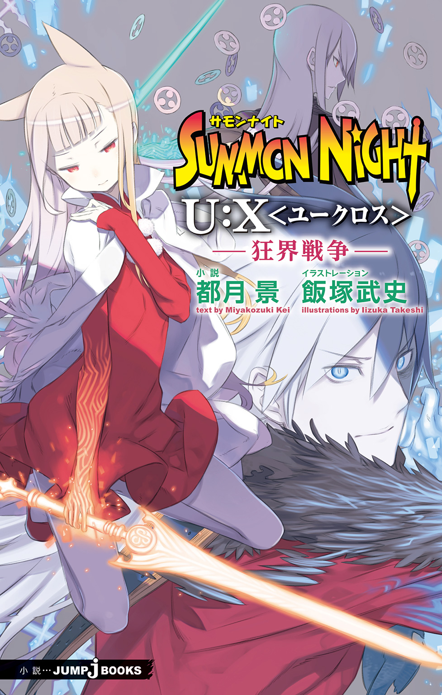
この本は縦書きでレイアウトされています。
また、ご覧になる機種により、表示の差が認められることがあります。
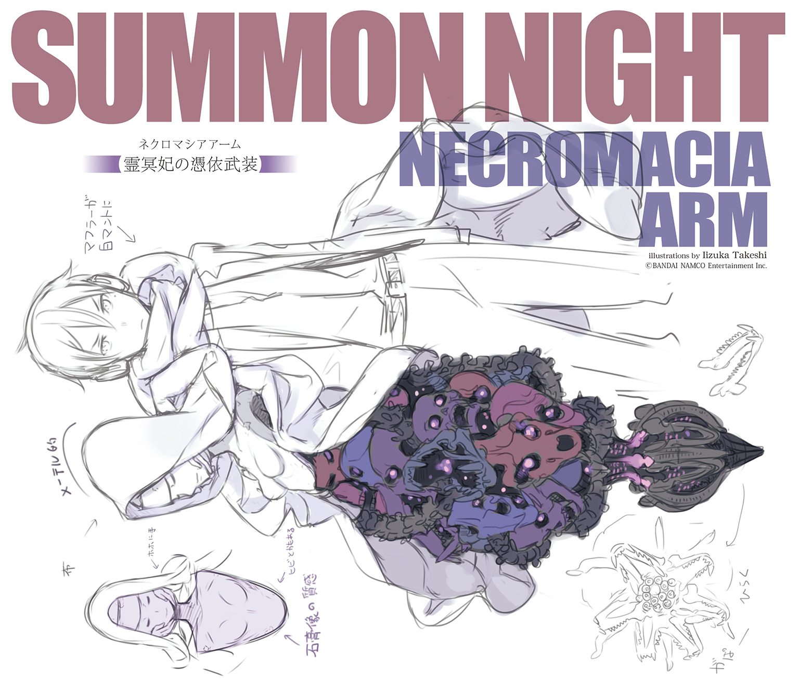
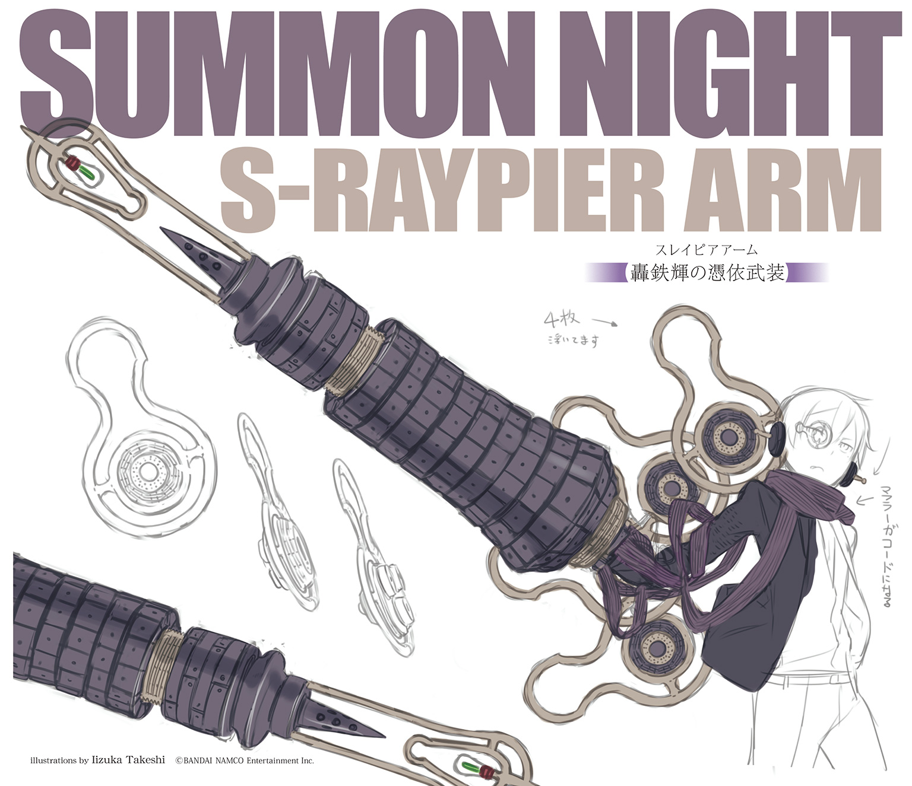
PROFILE
●望月 命（ミコト）

亡魂を操る不思議なカをもつ【制錬者】。シャリマとカイの手により生み出された。
●再誕の制錬者・レイ
【再誕】の力をもつ、もうひとりの【制錬者】。【救世皇帝】を名乗り、リィンバウム全土に宣戦を布告。
●カイロス
ミコトの叔父と称する男。その正体は召喚師でありシャリマとともに【制錬者】たちの生誕に携わった。
●シャリマ（シャマード）
常軌を逸した天才ぶりを示す女召喚師。【制錬者】たちの創造主であり、研究のために今も暗躍し続けている。
●デュウ
兵器としてシャリマに改造された少女。ミコトをかばって落命するが、彼を見守る守護霊となって行動を共にする。
●レックス
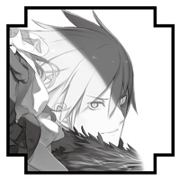
教師にして、蒼き魔剣を持つ【抜剣者】。【狂える核識】と戦った。
●ベルフラウ
レックスの教え子にして、炎の魔剣の【抜剣者】。今は【忘れられた島】で新米教師として奮闘している。
●新堂勇人（ハヤト）
界のエルゴたちの加護を受けし【誓約者】。キールによって現代日本から召喚され、魔王と戦った勇者。
●キール
オルドレイクの息子であり、魔王召喚を行おうとした召喚師。ハヤトと出会って改心し、共に【無色の派閥】と戦った。
●バノッサ
ハヤトと敵対していた双刀を操る兇剣士。魔王の依り代として死亡したが、レイの手によって【再誕】した。
●クラレット
【無色の派閥】の名門セルボルト家の一族。キールの姉。
●カシス
【無色の派閥】の名門セルボルト家の一族。ソルの妹。
●ソル
【無色の派閥】の名門セルボルト家の一族。キールと後継を争う。
●オルドレイク
【無色の派閥】の名門セルボルト家の頭領にして破戒の総帥。レイの手によって【再誕】し、彼を新世界の王と崇める。
●ガゼル
サイジェントで暮らすハヤトの仲間。リプレとは幼馴染み。
●リプレ
サイジェントで暮らすハヤトの仲間。家事全般を得意とする。
●マグナ・クレスメント
【蒼の派閥】の召喚師。因果を超える【超律者】を名乗り、【傀儡戦争】にて、仲間と共に悪魔王メルギトスと戦った。
●ネスティ
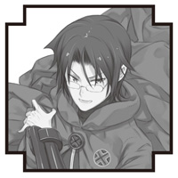
マグナの兄弟子。機界から亡命した【融機人】の末裔であり、その暗い出自は今も彼を思い悩ませている。
●パッフェル
【蒼の派閥】総帥エクスの密偵。その前歴は暗殺者であり【忘れられた島】でレックスたちと戦ったこともある。
●ヤード
【無色の派閥】を離反した召喚師。彼の持ち出した魔剣が【抜剣者】誕生のきっかけとなった。無類のお茶好き。
●トリス
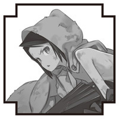
メルギトスに造られた【人造生命体】の少女。マグナと同じく、大罪人クレスメント家の血を引く。
●レシィ
トリスに護衛獣として召喚されたメトラル族の少年。戦いは苦手だが、恐るべき【審眼】の力を秘めている。
●メルギトス（レイム・メルギトス）
奸計と虚言の悪魔王。マグナたちに滅ぼされたが、レイの手によって【再誕】した。人を惑わすことを悦びとする。
●ギブソン
【蒼の派閥】に所属する幹部級召喚師。ミモザとは夫婦。
●ライ
宿屋を営む少年店主。古妖精の血を引く【響界種】として【浮遊城事件】を終結させた。若き天才料理人でもある。
●ミルリーフ
【浮遊城】を守る守護竜。ライを親代わりにして育ったため、彼をパパと呼んで懐いている。
●グラッド
帝国軍に属する駐在軍人。
ライたちにとってはよき兄貴分である。
●スバル
【忘れられた島】出身の鬼人族の若者。見聞の旅を続けている。
●ケンタロウ
ライの父親。現代日本の出身であり、妖精に愛されし者
●ギアン
幽角獣の【響界種】であり【浮遊城事件】を引き起こした張本人。【堕竜】と化して暴走したが、ライたちによって救われた。
●ゲック
贖罪の旅を続ける老召喚師。カイロスの師であり、帝国軍の秘密実験施設の責任者だった。ギアンの麾下にいたことも。
●エニシア
半妖精の【響界種】。かつては姫と呼ばれ、敬われていた。今はライの店で働きながら、平穏な日々を過ごしている。
●リシェル
ライの幼馴染みで、町の名士たるブロンクス家の娘。【金の派閥】の召喚師としてデビューしたばかり。
●フェア
ライの店に助っ人としてやってきた謎の少女料理人。なにやら事情を抱えているらしいが......？
前巻までのあらすじ
レイによるリィンバウム全土の統一という野望の表明を受け、勇者たちはそれぞれ行動を開始した。
ライとミルリーフは帝都での料理修業を中断し、仲間の元へと急ぎ戻ることに。
その道中、帝国軍のウィルにギャレオ、そしてアズリア将軍という頼もしい仲間と出会う。
レルムの村で懐かしい仲間との再会を果たしたハヤトだったが、彼らの前に【無色の派閥】の兵、そして【兇剣士】バノッサが襲い掛かる。
苦戦するハヤトであったが、救援に駆けつけた【抜剣者】レックスの力もあり敵を退けることに成功。
贖罪の日々を過ごすイスラが暮らす【忘れられた島】にも突如謎の敵が現れ、島を蹂躙。皆を助けるため、イスラは再び魔剣を手にし、新たなる翠の魔剣の【抜剣者】となり人々を救う。
トレイユの街には悪魔の王・メルギトスが直々に赴き、エニシアを狙い狡猾な策略をもって制圧にくる。
グラッドの決死の護衛も虚しく追い詰められるエニシアだったが、彼女が持っていた石から【獣皇】カサスが降臨。
さらにギアン＆コーラルもエニシアとメリアージュが起こした奇跡の祈りにより推参し、メルギトスは撤退する。
敵の本命・ラウスブルグは、シャリマや離反したネスティ、トリスが大量の【召喚兵器】を引き連れ、激戦が巻き起こる。
カイやミリネージらが参戦し、ライたちもラウスブルグの危機に駆けつけるが、シャリマによって【自己増殖式召喚兵器】の核と化した父・ケンタロウの姿に、ライは衝撃を受ける。
絶望するライの前に【救世皇帝】レイが現れ、ミルリーフへ絶体絶命の一撃を放とうとする瞬間、【転移の扉】が開かれ、ミコトが窮地を救う。
そして遂に、【追想】と【再誕】、運命の二人が邂逅を果たす...!!
この小説は、シミュレーションＲＰＧ『サモンナイト５』（発売・バンダイナムコゲームス）の「新生リィンバウム」が形成される以前の時代を舞台にしたオリジナルストーリーです。
この作品はフィクションです。
実在の人物・団体・事件などにはいっさい関係ありません。
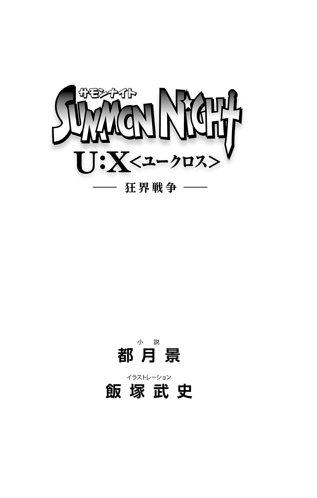
断章 ～Moving to Wind Up～
「来ちゃったわね、遂に」
精進潔斎して向かった星読みの祭壇。ひと月近くの修法によってげっそりと頰のこけた占い師は、朋友たる召喚師が差し出した杯をあおってから、そう呟いた。
あふれ出る様々な感情をあえて鎮めるように、清めの酒をあおって流しこむ。
今はもう酔えない。酔ったふりさえも上手くはできなかった。
「ずっと覚悟はしてたよ」
少年の身体に老爺の魂を秘めた賢者は、自らを責めてやまぬ彼女を慰めた。
「不可逆の運命を曲げる代償として、あらゆる世の理から見放された【追放者】となった時からね」
今はもう悔いてはいない、と彼は言った。
「僕......いや、わしはもう充分すぎるほど生きた」
もう百年近くも昔となった、彼女と初めて出会った時のことを彼は思い出す。
安定とは名ばかりの退廃によって、その本来の志を失いかけていた【蒼の派閥】。
地位特権へとしがみつく老害たちを黙らせるだけの力を得るべく、若き日の彼は古き文献を紐解き、エルゴの王の護衛獣と呼ばれし存在を従える決意を固めた。
【鬼妖界】最古の龍神の一柱にして、時の彼方で王との約定を守り続ける龍姫。
それが瞑命だった。
【誓約】を願った彼に対し、彼女はあくまで冷淡だった。
到底果たせぬ試練を与え、【界の狭間】に置き去りにしたのである。
だが、彼は十月十日もの時を費やして、見事にそれを成し遂げてみせた。
根負けした彼女は条件つきで彼と【誓約】を結び、力を貸すと約束したのだ。
「龍姫よ。貴女と出会い、護衛獣として迎えられたことを、わしは深く感謝している。おかげで弟子や孫弟子たちのみならず、あのクレスメントの末裔たちに出会うことすらできたのだからな」
真実が露見することで組織の名誉が失われてしまう恐れから、不都合の全てを彼らだけに押しつけて、罪人として歴史の闇に葬り去ってきた。
連綿と積み重ねられてきた【派閥】の罪。許しを得られたとは思えないが、それでも幾許か悔いる気持ちは、彼らに伝えることはできたであろうか。
わからない。わからないが、しかし―――それでもいい、と彼は思っている。
「むしろ、わしは......僕は、パッフェルのことが気がかりだよ」
彼の独善から死すべき運命を歪め、こちら側に引きずりこんでしまった女性。時を巻き戻す禁断の秘術を使った代償として、彼女を世の理から弾き出された【追放者】にしてしまった。
「僕の未熟さゆえだ。反動を完全に受け止めきれず、彼女を......」
覆した時の流れを抑えきれずに、その余波に巻きこんでしまった。
本来の姿を喪失してしまった彼女。我が子と再会することのできぬまま、母親としての幸せを充分に味わえぬまま、長い生を強いてしまってきた。
【魔剣鍛冶師】や【珊瑚の毒蛇】が望んだように、いくら理不尽であろうと世の理には逆らうことなく、星の巡りの導きのままに人として生を終える。それこそが本当の幸せであったのではなかろうか、と今でも思わずにはいられないのだ。
苦い表情を浮かべるエクスに向かって、メイメイは静かに諭した。
「彼女は何度も言ってくれたわ。幸せですよ、って」
断たれた未来を接いでもらうことで、少なからざる想いを継ぐことができた。
尊い生命を無造作に断つ側にあった自分が、少しなりとも償うことができた。
罪に塗れてあのまま死んでゆくよりも、ずっとずっと嬉しく幸せだ、と。
「それに責められるべきは、そのための方法を伝えた私よ」
目を閉じて、龍姫は懺悔する。
「待ち続けることに疲れ果てて、道連れに貴方たちを求めてしまった。ないはずの希望を見せびらかして、転生の輪から外れた【追放者】にしてしまったんだもの」
下手な情けをかけなければ、きっとこんなことにはならなかったのだ。
「―――たられば、だよね。全部」
なおも自らを責めようとする彼女を、今度は彼がそう言って押しとどめる。
「最後には自分で選んだ結果として、僕たちはここでこうしているんだもの」
そうね、と彼女は苦く笑った。
「でも、それも本当におしまい。今こそ、私はあの人との約束を果たさなくちゃ」
【観測者】としてこの世界の行く末を見守りながら、その時々において少しだけ手助けしていくこと―――それはあくまで、来たるべき時が訪れるまでの些事でしかない。
「真実を知ってなお、その先に向かおうとする者が現れることを、私は切に願うわ」
彼が愛し、それゆえに全てを引き替えにしてまで護りぬいた世界。
その行く末を決める時が、今、訪れようとしていた。
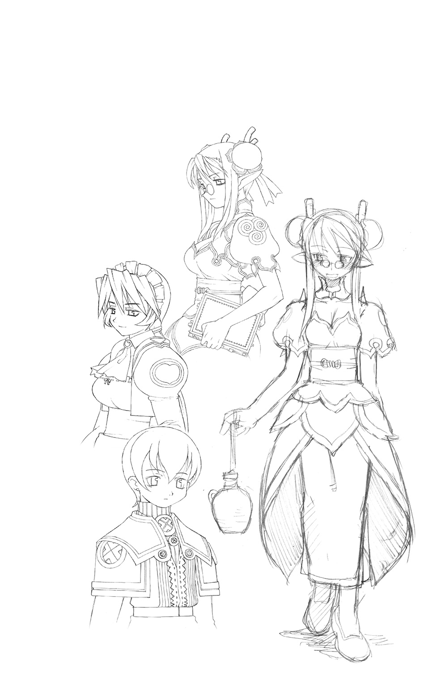
１ 相容れぬ意志たち ～Wheel of Calamity～
【追想】と【再誕】―――二人の【制錬者】は、帝国辺境の空にて邂逅した。
隣りあう培養槽で育成されながらも、覚醒する前に生き別れた対なる存在。
兄弟と見なすにはどこかおぼつかなく、無論、言葉を交わしたこともない。
だがそれでもなお、ミコトは不思議な感慨を感じていた。
「不意打ちめいたことしたのは謝るよ。咄嗟に手が出ちゃったんだ、ごめん」
最初に口をついて出たのは、素直な気持ちだった。
「構うことはない。実際、そなたが介入せねば、我はあの至竜を確実に屠っていた」
「ありがとう。えっと、それでさ......一応、まず最初に聞いとかなくちゃなんだけど」
切り出し方を思案しながら、結局ミコトはストレートに問いかけた。
「君はなんのために、皇帝になってリィンバウムを征服しようとしているんだ？」
護るためだ、と皇帝は答えた。
「これより先に待ち受ける未曾有の危機に対して、我らは自身の存亡をかけて立ち向かっていかねばならぬ。その先陣に立って戦う者としての資格を、我は証明したいだけだ」
それが【救世皇帝】を名乗り、自ら【エルゴの王】の後継者たらんとする彼の真意。
未曾有の危機、という予期せぬ言葉にミコトは当惑した。
（私利私欲とかじゃなくてひと安心ではあるんだけど、いまいち意味がわかんないぞ？）
騒乱の芽となり、あえて平地に波瀾を起こそうとする男の動機が、未曾有の危機から世界を守るためとはどういうことなのか。
（そもそも、そんな大変な危機が訪れるっていうんなら、それこそ身内でもめたりしてる場合なんかじゃないだろう!?）
きちんと皆に言葉で説明して、力を貸してもらえばよいではないか。
当たり前と思われるその提案を、だが、皇帝は一顧だにせず斬り捨てた。
「対話による理解など無意味だ。人間は平気で他者を欺く。断固たる力を示すことで屈服させなくては真の恭順は得られぬし、そうでなくては戦力として当てにすることもできぬ」
「な......!?」
正論だがあまりにドライなその極論に、ミコトはレイの行動原理を見た気がした。
「それって、つまり......他人なんて信用できないってことか？」
「当然だ」
不思議そうな目をして、レイは言う。
「貴様も私も、その生のはじめに思い知らされたではないか。創造主でさえ、自分にとって不都合ならば容赦なく創造物を殺そうとする。擬似的であろうと血肉を分けた相手であってもだ」
腐肉の枷に囚われたままのカイロスの顔が慚愧に歪む。対するシャリマは微笑んでうなずいた。
「ましてや他人同士。かりそめと承知の上でも一定の信を置くためには、明確な力関係を示しておかねばなるまい。だからこそ、我は力によって全てを掌握しようとしているのだ」
欲しいのは理解者ではなく手駒として働く臣下たち。そこに善悪は関係なく、ただ有益であるかどうかだけが問われる。永遠の忠誠も必要ない。報復を恐れぬのなら裏切ればいい。
「そうしたものを抑えこめぬのならば、他者を率いて上に立つ資格などなし！」
【誓約者】に挑発めいた言葉を投げつけたのは、けして嘲弄ではない。
【守護竜】を殺そうとしたのも、真摯な問いかけがあっての結果。
それを察したミコトは、背筋にひどい悪寒をおぼえた。
（この人の考え方には、対等な関係性ってものが最初から欠落しているんだ......）
曖昧な友愛などは害悪でしかない。あるのは主と従のみ。
従うならば重用するが、逆らうのであれば実力によって排除する。
「我のやり方が不満ならば、力にて我を屈服させればよいのだ。徒党を組もうが策略を用いようが、我を倒せばよいだけのこと。より優れた者が上に立つのであれば、我としても本望なのだからな―――」
視線を果てなき空に向けつつ、レイは言い切った。
「―――ゆえに、そなたがもし我の行動に掣肘を加えたいと望んでいるのなら、それを押し通すだけの力を示すより他に道はないということだ」
再び向けられた皇帝の眼差しは、数奇な生を共有した同朋に対するものではなく、己の信じる道を阻む敵に対する酷薄さを取り戻していた。
『かわいそう......だけど......』
悲痛なデュウの囁きに、ミコトもうなずいて、また拳を握りしめる。
「やっぱ、放ってはおけないよ。皇帝レイ......それが貴方の絶対のルールだって言うのなら、あえて乗っかってやる......同じ【制錬者】である俺が、あんたを止めてみせるッ!!」
「ならば―――やってみせよ!!」
蒼き【追想】の右手と紅き【再誕】の左手が交差、激突すると、その輝きに引き寄せられた亡魂たちが激しくざわめいて、静謐な空をくるおしくかき乱した。
「素晴らしいわ......ああ、なんて素晴らしいの......！」
十数年の時を経て、今、自身が手がけた最高傑作たちが並び立ち、その性能を競う。
創造主として最高の快楽に打ち震えながら、シャリマは【制錬者】たちの戦いの行く末を見守った。
亡魂を操る能力はおそらく互角。互いに繰り出す盾や鎖の類を【制錬石】による直接干渉で無効化していく。魔力の勢いではミコトが勝るようだが、その制御の巧みさにおいてはレイに一日の長があるようであった。
ならば、とレイが覇王の剣で斬りかかる。使い手の魔力をそのまま威力と変じる稀代の魔剣の前には、生半可な武器では打ち合うことさえできない。まして、ミコトは武器を持っていない。かわせぬのならば、確実に致命傷となるはずであった。だが―――。
「ぜいやあああああぁぁぁぁぁァァァーッ!!」
固めた左の拳の内部で【兇嵐の魔眼】が脈動し、渦巻く破壊エネルギーを迸らせる。
亡き姉より継承し、【召喚兵器】をことごとく粉砕してのけた鮮血色の光刃は、火花のごとき魔力の飛沫を飛ばしつつも、純白の斬撃を受け止めていた。
（軍門に降らせるため手加減したとはいえ、我が一撃をしのいでみせるか）
動揺は一瞬のみ。皇帝はその口元に好戦的な笑みを浮かべると、雄叫びをあげて立て続けに剣撃を繰り出した。かろうじてながらも、ミコトはそれらをなんとかしのいでゆく。
（このままじゃ、じきに押し切られちまう―――力を貸してくれ、カノン！）
振りかぶった右腕の制御籠手が急速展開すると、燃えさかる鬼妖の魔力を宿した巨腕と化す―――【鬼神力の憑依武装】―――【追想の制錬者】たるミコトが、己が身を守るために呼び覚ました異能の力であった。
「おおおおおおおぉぉぉ......ッ！ 【怒剛・鬼神撃】ッ!!」
巨大隕石さえ真っ向から破砕してのけた鬼神の一撃が、至近距離から皇帝に襲いかかる。
手加減する余裕なんてない。そしてその先の心配は、皮肉にも無用であった。
「ぬうんッ!!」
皇帝は左手の【制錬石】に亡魂を呼び集めると、分厚く柔軟性をもった盾を展開した。迫り来る剛腕の威力に逆らうのではなく、その勢いに乗るようにして受け止めると、盾が崩壊する数瞬を利用して前方跳躍、そのまま無防備なミコトの懐めがけて飛びこんでゆく。
【憑依武装】を展開したことにより、亡魂に対する影響力を減じてしまったミコトの隙をつく切り返しだった。
「ぐぅッ！」
慌てて破壊光を束ねて迎え撃つミコトだが、魔眼の制御に気を取られてしまったことで憑依は解除されてしまう。さらに畳みかけるように、レイは恐るべき戦法を繰り出した。
「消えた......!?」
激突の反動で跳んだ皇帝の姿が銀の光の輪の中に消える。と、即座に新たな輪がミコトの後方に開いて、剣の切っ先を刺突に構えた皇帝が、弾丸のような勢いで襲いかかる。
（ミコトっ、うしろっ！）
デュウの警告はかろうじて間に合った。振り返りざまに展開した亡魂の盾で、なんとかミコトはレイの突撃を弾いた。が、攻撃はなおも続く。矢継ぎ早に展開させた【転移の門】をくぐり抜けることで、レイは変幻自在の速攻を連続で仕掛けてきたのである。
到底、人間の目では追いきれぬ高速の攻防。地上から空の戦いを見上げる機械人形たちだけがそれを目撃し、かつ戦慄していた。
「短距離とはいえ、あんなにも高速かつ連続で転移を行えるだなんて......」
自分に搭載されたシステムでは到底不可能な、恐るべき緻密さと膨大なエネルギーを必要とする連続空間跳躍―――それを生身で易々とこなす皇帝の能力に、ローレットは驚愕していた。センサーの類で視覚を補える機械人形の自分たちだからこそ状況把握ができるのであって、普通の人間なら為す術もなく切り刻まれてしまっていただろう。
「なのに、なんでアイツは無事なのよ!? なんなのっ!? バカなの～っ!?」
呆れたミリネージの叫び声に苦笑しながら、ミコトは【幻毒蛇の憑依武装】による高速回避で対抗していた。臆病な蛇の危機感知能力で殺気の出所を先読みし、逃げに専念することでなんとかしのいでいるといった有様だ。
（とはいえ、そう長くは続けていられないぞ。これは......）
一手間違えたら最後、致命傷となる猛攻の連続は、急速にミコトの気力を消耗させてゆく。このままではいずれ、その身が皇帝の刃に貫かれるのは確実―――ならば、どうする？
◆
初心に返りなさい、と幽き声が告げた。
何度も何度も耳元で、厳しくも辛抱強く導き続けてくれてきた彼女の声が。
技量に勝る相手に抗する唯一の手段は、己が最も得意とするものをぶつけること。
不器用なりに転移の術を習得したあの時のように。
今ある武器を最大限に用いて、そこに活路を見いだすより他にない。
（我が魂を纏いなさい―――貴方の根源たる能力を限界まで引き出すために！）
亡魂の叱咤に導かれ、ミコトの【制錬石】から【霊界】の魔力が膨れあがる。
―――うおおおおおおオオオオオォォォォぉぉぉぉんッ!!
空を揺るがす咆吼は、荒ぶる亡魂たちが唱和する反撃の雄叫びだった。
「ぬうッ!?」
覇王の剣を真っ向から弾かれて、レイの身体が後方に泳ぐ。踏みとどまろうとした彼は、その足下を支えていた亡魂たちの大半が失われていることに気づき、目を見張る。
それを為したのは、新たな【憑依武装】を顕現させたミコトだった。
薄紫の魔力の風にはためくのは純白のケープ。瞑目する乙女を模した肩当てから拡がるそれはミコトの右半身をゆったりと覆い隠し、荘厳な雰囲気を醸し出している。
だが、それは一面でしかない。
法衣を思わせるその奥からのぞいた彼の右腕は、多種多様な骨の結合体で鎧われていた。【制御籠手】が増殖変形したのであろうが、無数の牙を軋るように鳴らし、眼窩に怨嗟の炎が揺らめくその有様は、禍々しき呪いの化身としか思えぬものであった。
―――グォォォォオオオオオオォォォォォ......ン！
その腕の骸に宿った無数の亡魂たちが一斉に吠える。明確な依り代を得たことで幽き声はより強靭に束ねられ、強烈なレイの一撃を弾き返すほどの障壁を編み出したのだ。
「今度はこちらが【亡魂】の支配力で上回られたということか......」
【制錬石】の基本性能を極限まで高め、一点突破で窮地を打開する。
それを可能としたのはミコトの地道な修練と、そんな彼に魂の力を委ねた彼女の技量。
「【死霊の女王】ツェリーヌ―――総帥オルドレイク殿の今は亡き奥方、ね」
事の次第を把握したシャリマは、忌々しげに舌打ちした。
「さながら【霊冥妃の憑依武装】とでもいったところかしら」
派手さこそないが、着実に戦闘力を高める点では侮れぬものがある。そして、どうやらそれだけに留まるものでもないようだった。
「う......ぬぅ......っ」
ミコトと対峙するレイの様子がおかしい。先程までの勢いが目に見えて失われ、吐息が荒くなっている。速攻を仕掛けた代償だとしても、疲労の色が濃すぎる。
（吸いあげているというのか......敵の生命力を......!?）
呪術師としてのクラウレの目は、皇帝の周囲に纏わりつく亡魂の群れと、そこから少しずつ漏れ出してゆくマナ―――生命を形作るエネルギーの流れを捉えていた。
それはミコトの右肩にある乙女の像に吸収され、ケープを揺らす魔力風へと還元されて、亡魂たちにさらなる活力を与えているのだった。
と、不意にミコトの視線がシャリマに向けられる。
「......っ!?」
次の瞬間、伸ばした腕の鋭い爪の先から放たれる魔力光線。咄嗟に飛び退いてかわしたシャリマは、未遂に終わった不意打ちをせせら笑う。
「どこを狙っているの？ 余計なことはしないで、目の前の敵に集......」
「......テメエがなッ!!」
割って入った少年の怒号と共に、シャリマの脇腹に灼熱の痛みが走った。
「うぎィあぁッ!?」
足蹴にして完全屈服させたはずのライが不意に立ち上がり、逆袈裟にその剣を振るったのだ。打ちひしがれていたその瞳には闘志が再び宿り、為すがままに痛めつけられてできた傷の数々も、目を見張る勢いで完治しつつある。
全てはミコトの魔力光の仕業だった。吸いあげた生命力を集束させた光線は、最初からシャリマではなく、その背後でうずくまっていたライに向けたものだったのである。
「キツイの一発ありがとよ！ おかげで、ウジウジしてたのが吹っ飛んだぜ」
名も知らぬ救援者に向かって、ライは感謝の言葉を投げる。
微笑んでうなずくミコト。そして、両者はそれぞれ眼前の敵に意識を集中した。
◆
「ふははははははははははは！」
劣勢を自覚してなお、レイは哄笑してのけた。
自分と対を成す【追想の制錬者】の底力に感嘆し、どこかで侮っていた非を認めて。
「無礼を詫びよう。そのうえで、こちらもとっておきを見せてやる！」
【制錬石】から放たれる魔力に新たな亡魂たちが引き寄せられてゆく。炎に照らされて妖しく乱舞するその様は、まるで地獄の業火のようであった。
「我が炎をその魂に纏いて―――軍勢よ、【再誕】せよ！」
号令一下、渦巻く炎は亡魂たちを次々と呑みこんで、まばゆき光を無数に発した。
「おお......っ!?」
囚われの身であることも忘れて、カイロスは息を呑んだ。
魔力の炎の洗礼を浴びた亡魂たちが急速にその形状を変化させてゆく。自らの身を焼き、その火の中から甦るという不死鳥の伝説のごとく、新たなる肉体を得て復活を遂げてゆく。
（これが【再誕の制錬石】の力なのか......）
亡魂を核とし、界の記憶を改竄することで、死という絶対の摂理さえもねじ曲げる。
それはまさに【神】の御業。レイの左手で燃えさかる炎は、さながら万物の始原に在ったという伝説のそれにも見えた。
「おいおい、あれって俺たちがぶっ倒した【召喚兵器】たちじゃねーかよ!?」
二人の戦いを見上げていたスバルが、素っ頓狂な声をあげる。
蜻蛉魔獣、蝙蝠型亜人、さらには融機飛竜に至るまで。
終わりなき再生機構の悪夢から脱したはずの【召喚兵器】たちがまたしても甦る。
改造によって輪廻の輪から外れてしまった彼らの魂には、亡魂と化して消滅する運命しかなかった。レイはそれを利用し、今ひとたびの生を彼らに強いたのだ。
「こいつら、さっきよりも確実に強さが増してるぞ!?」
飛鷂魔の上でウィルが叫ぶ。先手をとって放った彼の召喚術は、速度を増した蜻蛉魔獣らに易々と回避され、より一層の獰猛さをもって襲いかかる蝙蝠型亜人の爪によって、アロエリも槍ごと押しこまれつつある有様だった。
界の記憶に直接干渉する【制錬石】の力は、万物に対して不正改変すらも可能とする。新たに【再誕】する者の肉体を最適化して、生前以上の性能を発揮させることぐらいは造作もなかった。
「我が側近たちのごとく、執着強き亡魂ほど扱いは難しいが......この程度ならば、な」
不敵なレイの呟きを、だが、ミコトはすでに聞いてはいられぬ状況にあった。【再誕】せし皇帝の軍勢たちの猛攻により、彼は一気に窮地に立たされていたからだ。
「流石に......っ、数が多すぎだろ......ッ!?」
浮遊城を攻め落とす目的で編成された【召喚兵器】の軍団は、荒野でミコトが戦った時より一桁近くも多い数だった。不慣れな空中戦を強いられているというハンデもあって、どうしても攻防のテンポが摑めない。
（せめて、地上に降りて戦わないと）
けれど、そんな目論見などお見通しだと言わんばかりに。
離脱しようと加速する彼の眼前に、魔剣を携えた皇帝が立ちはだかる。
「して......やられたわね......ッ」
血混じりに咳きこみながら、シャリマはその瞳に憤怒の炎を燃やした。背中の吸精根を腐肉塊へと突き刺して、魔力を吸収することでなんとか傷を癒やそうと試みる。
それをみすみす見逃すほど、ライは甘くはなかった。
「言っただろう！ テメエだけは、絶対ここでぶっ潰すってな!!」
半妖精の魔力をその銀髪に煌めかせ、怒濤の猛攻で追いたてる。立ちはだかる腐肉の障壁を片っ端から薙ぎ払い、引きつった顔のシャリマめがけて問答無用の勢いで突っ走る。
だがその行く手を阻むように、横合いから凄まじい火焰の奔流が吹きつけられた。
皇帝の軍勢として【再誕】した融機飛竜たちの仕業だ。
「ちいッ！」
かろうじて踏みとどまったライは、次々と襲いかかる飛竜たちを迎撃せざるを得ない。
「あっははは、形勢逆転ね！」
窮地を脱したシャリマの高笑いは、しかし、長くは続かなかった。
「うううぅ......ッ！」
苦悶の声と共に、皇帝の動きが急停止した。
右手で顔を押さえながら、うめき声をあげるその肌の色は蒼白で、脂汗さえ滲んでいる。
「お、おい......大丈夫か？」
「―――触れるなッ!!」
あまりの苦しみように見かねて、近づこうとしたミコトを、レイは剣を振り回して追い払った。その動きは、先程までの洗練された剣技とは無縁だった。
「いかがなさいましたか、陛下!?」
初めて遭遇した事態に、あのシャリマがうろたえている。
「て......撤退する......ッ。シャマード、お前もカイロスを確保して続け......ッ！」
そう命じると、皇帝はよろめきながら銀の光の中に消えた。残されたシャリマはわけのわからぬまま、それでも主命に従おうと動きだす。
しかし、ライを相手取っての戦いの間に、敵はすでに行動を終えていたのだ。
「この男を渡すわけにはいかぬ。そのために、俺はここに遣わされたのだからな」
風の呪術で腐肉の枷を破壊して、クラウレはすでにカイロスの身柄を奪還していた。
引き渡された患者に痛み止めの注射を処方しながら、絶対死守の決意でクノンが毒婦を睨みつけている。スバルやパナシェたち若き戦士らが、前に出て抗戦の構えをとった。
『ボケっとしてんじゃねえぞ、ライ！ ......足下をよく見やがれ......ッ!!』
ケンタロウの発した警告の声に、ライはようやく気づいた。
シャリマの悪あがきであろう。かろうじて腐肉に覆われていなかった制御装置の台座にあたる部分が、みるみるその面積を減じつつある。完全に埋没するのも時間の問題だった。
「とっくに気づいてたっての！ 偉そうに説教すんじゃねぇよ、このクソお......」
振り返り、いつものように罵倒しようとしたライの表情が、不意に強張る。
そこにあったのは、今までに見たことのないほどに真剣な父親の顔だった。
『あの......クソ女の言うとおりだな......悔しいが、今の俺様は手も足も出せねえ......迷惑極まりねえ最悪のお荷物......正真正銘のクソ親父だわ......』
「今さら殊勝に悟ったフリしてんじゃねえよッ！」
即座に言い返したライに、ケンタロウは目を細めてから、さらに言葉を続けた。
このままでは自分だけではなく、彼を【愛されし者】として加護し続けるメリアージュやエリカまでもが死の危機に瀕することになってしまうだろう。
『それだけは、絶対に避けなきゃいけねえ......だから、あえて......お前に頼むわ......』
「聞きたくねえッ！ テメエでやれよッ!!」
悲痛な拒絶を、だが、ろくでなしの親父は許してはくれなかった。
『始末つけてくれや......俺ごとまとめて、綺麗さっぱり......な？』
「......っ、ざけんなあぁーっ!!」
全力で振り抜いた拳がみしりと頰骨を軋ませて、ケンタロウの鼻から鮮血があふれる。
だが、より深い痛みと哀しみに襲われていたのは、殴ったライのほうだった。
「やれるわけがねえだろッ!? どうしようもねえクソ野郎でも、あんたは俺の親父なんだぞ......母さんやエリカとおんなじ......俺の大事な家族なんだ......ぞ......っ！」
ぽろぽろと涙をこぼす息子を前にして、抱きしめてやることもできない父親。
（こりゃあ、めちゃキツイな......メリアージュ......お前の苦しみ、思い知らされたぜ......）
そんなうちひしがれる親子を急かすように、事態は刻々と変化してゆく。
「こうなれば、せめて坊やだけでも実験体として連れ帰らせてもらうわ」
不本意な状況に置かれた怒りに背中の花園をざわめかせつつ、シャリマが近づく。
（長時間の稼働に対する適応不足―――あの子にこんな初歩的な欠陥があったなんて、すっかり騙されたわ）
一瞬で勝負を終わらせてしまう、あまりにも圧倒的な強さであったがゆえに、同等の敵を前に膠着状態に陥ったことで、初めてその弱点が露呈したということか。
（万全でないとわかった以上は、なにがしかの保険をかけておく必要があるわね）
頭の片隅に留め置きつつ、シャリマは打ちひしがれたライへと近づいてゆく。
「カイロスたちにも転移で逃げられてしまったし、残ってるのは置いてけぼりで見捨てられた貴方だけ......だから、私が拾って役立ててあげるわ。ふふふふ......」
恩着せがましく差し延べられる彼女の手の動きに合わせて、吸精根と触手群が伸びてきて、少年の身体を十重二十重に絡めとろうとする。
「そういう自分勝手な妄想で他人を縛ろうとするのはやめなよ、シャリマさん！」
疾風一閃―――破壊の光剣で殺到する触手群を切り払ったミコトは、忌々しげに舌打ちするシャリマを見据えて、決然と言い放った。
「悪いけど、俺もクソガキだからさ......そう簡単に口やかましいオバサンの言いなりなんかにゃならねーよ！」
涙を拭い、再び剣を手にして立ち上がったライも、精一杯の強がりを口にする。
「ガキどもめえぇ......ッ！」
その美貌を憤怒に歪め、鬼女と化して襲いかかってくるシャリマを前に。
「跳ぶぞ、ライ！」「おうッ！」
皇帝は去ったが、いまだ【再誕】の軍勢は健在。この状況で戦い続けることは無謀。
短いやりとりで互いの意志を通わせた少年たちは、ミコトの開いた【転移の門】に身を躍らせて、まんまと逃げのびることに成功したのであった。
（悪あがきして待ってろよ、親父......今度は、俺が......なんとかしてやるからな！）
消えていく銀盤の向こうから微かに聞こえた息子の捨て台詞を、彼はあえて黙殺しようとしたが―――不覚にも失敗し、嚙み殺しきれぬ呻きをこぼしてしまった。
◆
（我は一体、何を......やろうとしているんだ......？）
辿り着いた玉座にその身を投げ出して、レイは必死に自問自答していた。
迫り来る脅威に対して、このリィンバウムを守るために立ち上がった。
そのために必要だったから、帝国の皇帝という地位を手に入れた。
飛び抜けた力ゆえに界の理から弾かれた亡魂たちを召集し、手勢として【再誕】させた。
この世界に存在するありとあらゆる力を結集させて、率いて戦うために。
「何故、あえて......それを自らの手で潰そうとしているのだ？」
ちりちりと脳の芯が痛む。【界の狭間】よりこの世界に降臨した時から、日々ひどくなっていく原因不明の痛み。再会したシャリマからは記憶のノイズだと説明され、次第に慣れてゆくだろうと聞いていたのに。
（どんどん、ひどく......遠く、なる......）
次第に記憶が曖昧になって、どれが現在でどれが過去なのか判然としなくなる。
めまいと共に執拗な頭痛が襲ってきて、やがて意識が混濁してゆく。
ほんの数秒程度だったそれが、今では、ともすると丸一日以上に及ぶことがある。
のみならず―――その間に、全く身に覚えのない行動をとっていることさえも。
今もそうだ。対となる【追想の制錬者】の助力なしには、真なる【響融者】として覚醒することは叶わぬと知っていたのに、彼を殺してしまおうとした。
（......知っていた？）
誰に教わったというのか。遙か先の目標であったがゆえ創造主でさえ失念しかけていた秘事を、いったい自分はどこで知ったのか。聞かされたというのか。
わからない―――わからなくて不安だったから、自分はもう一人の創造主たるカイロスの身柄を欲したのではなかろうか。
「そう......遙けき声に......導かれて......」
そうだ。全てはあの声―――光輝く【界の狭間】で、捨てられた自分を育んでくれた意志。
未だ名もなき六番目のエルゴなる存在が、彼に全てを与えてくれたのではないか。
「そうだ......問題ない......何ひとつとして......」
遙けき声に耳を澄まし、その導きに従っていけば。
「もう、空っぽになることはない―――満たされて、私は完全な存在となるのだから！」
立ち上がる皇帝の目に、再び覇気の炎が満ちてゆく。
それはまるで、己の魂を燃やすことによって生み出されているかのようだった。
◆
「【鬼妖界】の荒らぶる鬼神......」
目の前へと立ち塞がった牛頭・馬頭の巨人の偉容に、ヤードは息を呑んだ。
筋骨隆々たるその身体は神々しき鎧に覆われ、それぞれ巨大な金棒と斧を手にしている。邪鬼や悪鬼とは一線を画すその姿は、対峙するだけで心胆を寒からしめるものだった。
「だから......どうしたっていうのよ！」
そんな相手であろうと臆することなく、ベルフラウは立ち向かっていく。握りしめる【炎の魔剣】は赤々と燃えて、彼女の闘志がいささかも萎えていないことを証明していた。
「どんな相手であろうと、島を無茶苦茶にするつもりなら、容赦しないんだから！」
振り抜いた剣尖から灼熱の火焰が迸り、鬼神たちめがけて襲いかかる。
「かき消せ、阿汰羅！」
後方に控えし使役者の命に応じて、馬頭の巨人が鼻面から大きく息を吸いこみ、甲高いいななき声をあげた。鼓膜をつんざく咆吼が、迫り来る炎を散り散りに吹き飛ばす。
「くう......っ！」
魔力を帯びた衝撃波を叩きつけられて、ベルフラウの動きが一瞬止まった。
間髪入れず、そこに追撃をかける使役者。
「打ち据えよ、吽汰羅！」
牛頭鬼が巨大な金棒を叩きつける。岩盤を粉微塵に砕く威力を誇る一撃は、だが彼女の身体に触れることはなかった。咄嗟に援護の召喚術を唱えたヤードの仕業だ。
「来たれ―――【斥盾の守護天使】！」
銀色に輝く大盾をかざした天使が降臨し、拒絶の力場を前方めがけて展開する。
不可視の障壁によって弾かれた金棒は、あらぬほうの大地を虚しく抉りとる。
「そいつらは召喚獣です！ 使役する術者を直接叩かねば、埒が明きませんよ！」
振り返ったベルフラウはうなずいて、一目散に走る。
「やめよ、ベルフラウ！ そやつは―――」
諫めようとしたミスミの声は間に合わない。
鬼神の背後に隠れていた使役者めがけ、ベルフラウは跳躍し、魔剣を振り上げた。
「愚かな......」
迫り来る異形の剣士の姿におののくことなく、彼はそう呟いた。
純白の浄衣の袖を大きく翻し、両掌を高らかに打ち合わせる。右の手首に巻かれた紐鈴が、凜として鳴り響く。
「受けよ、業風―――いざや！ 鬼神烈風掌!!」
裂帛の気合いと共に突き出されたその掌から、凄まじい風が突如として巻き起こった。
「きゃああぁっ!?」
その勢いに煽られて、宙にあったベルフラウの体勢が崩れた。銀髪がばさばさと波打ち、天地が逆転する。剝き出しの腕や頰に裂傷が幾つも走って、鮮血の花を咲かせた。
抜剣することで、彼女は炎熱の防御結界を纏っていた。にも拘わらず、防ぎきれぬ威力。
「ベルフラウっ!?」
吹き飛んだ少女の身体を、ミスミの起こした新たな風が、かろうじて受け止める。
「式鬼を下げて名乗れ、【鬼道】の者よ！ 鬼神の末裔たる妾に対し、無礼であろう!!」
駆け寄ったミスミが、ふらつく彼女を庇うように立って、怒気も露に叫ぶ。
「たしかに...」
鬼姫の恫喝を涼しげに受け流し、宮司の白装束を纏った偉丈夫は堂々と名乗った。
「我が名はホクト。【鬼道】十二門が筆頭・七剣の現当主なり」
【鬼道】の者―――それは宮司や巫女として鬼神を祀り、その意志の代行者として働く人間たちである。龍神を崇める【龍道】の者と合わせて、【道の者】とも呼ばれている。
彼らの務めは、鬼妖界シルターンにおける人間と妖怪の仲立ちを行うこと。
人間側の代表として互いの領分を護り、それを侵す不届き者を罰する役目を担うのだ。
妖怪側の代表たる鬼人族や龍人族とは同じ使命を担う者同士であり、それゆえ【道の者】はそれぞれ神秘の術を【親神】から授けられている。
妖術。幻術。眷族の力を借り受ける式の法や、武を尊ぶ神より伝受されし戦の技法。
ミスミが一目で相手の正体を見抜いたのは、それを察したからだった。
「我が名はミスミ。風雷の鬼神を【親神】に祀る鬼人の眷族なり」
返礼しつつ、彼女は【鬼妖界】にいた頃のおぼろげな記憶を辿る。
ホクトが言うとおり、七剣の名は【鬼道】に連なる十二家の筆頭。鬼神たちが最も信を置く家柄であり、その巫女は異界に分祀された【界の意志】の欠片を守護する務めを任せられるほどであった。
「風雷の眷族......一夜にして郷の者全てが煙のごとく消え去ったと伝え聞くが......」
なるほど、とホクトはうなずいた。
「異界に召喚されていたとはな。道理で行方が知れぬはずだ」
【喚起の門】を用いた大規模な召喚術により、ミスミやその良人となるリクトは、この【忘れられた島】に実験対象として連れてこられたのである。
「さぞやご苦労されたであろう。心中お察しする」
「............」
嫌味ではない同情の言葉に、ミスミは複雑な想いと共に沈黙するしかなかった。
「そういう事情ならば、ことの経緯を知らぬのも当然のこと」
かしこまって、ホクトは告げた。
「我らは【親神】たちの命により、この島の全てを完全破壊すべく遣わされたのだ」
冷たい戦慄が一同に走った。
「馬鹿な!? そのようなこと、神々が命ずるわけがない！」
和魂をもって人と妖怪を見守り、その繁栄を願う龍神鬼神たちは、召喚術による不当な介入を受け続けてもなお、リィンバウムに対して不干渉を貫き続けてきた。異界に飛ばされた自分たちが捨て置かれたのもそれ故に仕方なきこと、と郷の者たちはみな理解していたのに。
限界を超えてしまったのだ、とホクトは哀れみをこめて言った。
「神々の慈悲を顧みず召喚師たちは非道を重ねてきた。無分別な召喚によって【鬼妖界】の理は千々に乱れ、このままでは保たぬところにまで追いやられてしまったのだ」
欠けて生じたほころびは人心を乱し、多くの戦乱を招いた。人も妖も神々ですらも、怒りと哀しみによって荒魂を抱き、世は末法に向かいつつあった。
「故に―――我らは遣わされた。生まれ育った世界の破滅を食い止めるために」
全ての元凶たるリィンバウムと、そこに暮らす増長せし者たちを殲滅する。
「我らはその先触れのひとつ。障害となるであろう存在を調伏するための、な」
ホクトの鋭い視線がベルフラウに向けられる。
「至源へと繫がる【共界線】を弄び、その威を借りて私欲を満たす【魔剣】使いよ。貴様らは界の調和と平穏を食い荒らす害獣！ けして捨て置けぬ存在なのだ!!」
「......っ」
向けられた激しい憎悪に、ベルフラウは息を呑んだ。
理不尽だと反発する気持ちはあっても、彼の背負った大義とそこにこめられた重みが、彼女の足をすくませた。
「黙って聞いてれば、随分と言いたい放題に言ってくれるじゃないか」
張りつめた場の空気をかき乱すように、涼やかな声が割って入った。
「イスラさん......!?」
突如、旋風を纏って姿を現した彼の姿にヤードは驚愕した。
かつて【紅の暴君】を振るった時と同じ姿。だが、醸し出す雰囲気はまるで違う。
新たに抜剣したその姿は、刺々しい敵意に満ちていた紅の魔力ではなく、静けさの中に凛とした強さを秘めた翠色の輝きに包まれていた。
「【紫紺の蛇刀】を......使ったのね」
「【翠遠の息吹】だよ。君の剣と同じように、新たな姿に生まれ変わったんだ」
わずかに目を伏せてから、イスラはベルフラウの言葉を肯定した。
同じ【抜剣者】同士―――彼が再び魔剣を手にした事実を、彼女は【共界線】を通じてすでに察していたのだ。
「言いたいことはいろいろあるだろうけど、あとで聞くよ。今は目の前のこいつを島から追い出してしまうほうが先だからね」
そう言って、イスラはホクトに魔剣の切っ先を向ける。
「三人目だと......まだこれ以上、罪を重ねるというか！」
「あんたに断罪されるいわれはないよ！」
怒りに満ちたホクトの掌から放たれた烈風と、まばゆい翠の息吹が激突する。
「一気にやるよ、ベルフラウ！」
「言われなくたって！」
挑発めいたイスラの呼びかけが、ひるんでいたベルフラウの負けん気に火をつけた。
相殺しあって渦巻き爆ぜる風をくぐり抜けて、二人の【抜剣者】が襲撃者に迫る。
「迎え撃て!!」
ホクトの命に疾く従いて、控えていた二体の式神がその眼前に立ち塞がる。
「吹き抜けろ―――【翠遠の息吹】！」
「燃えさかれ―――【不滅の炎】！」
光の蔓草が式鬼たちを覆いつくすと、束縛と化して大地に縛りつける。間髪入れずに灼熱の浄火がほとばしり、もがくその巨体を紅蓮の松明に変えていった。
そのまま両者は、一気呵成にホクトへと斬りかかる。
が、ただ斬られるがままに任せるほど、彼は無能ではない。
迫り来るイスラの刃に対して、ホクトは恐れず、自ら踏みこんでいった。そうすることで斬撃の間合いをずらして威力を殺すとともに、繰り出した手刀で相手の手首を打ち据える―――と同時に、無声の気を瞬時に爆発させた。
「な......ッ!?」
痺れるような衝撃と共に、イスラの身体は宙に舞っていた。打撃の威力によるものではない。単純な力の激突による結果であれば、周囲にもその余波が及ぶはずであった。
だが、魔剣から放たれたはずの衝撃波は完全にかき消されてしまっている。
（威力そのものを逆利用して......はね返された......？）
同様にして投げ飛ばされたベルフラウの姿を見ながら、イスラは悟った。
これはおそらく武術によるもの。【鬼妖界】伝来のそれは、研ぎ澄まされた精神力を用いることによって、超常的な現象さえ引き起こすという。敵は武術の達人でもあったのだ。
「【合鬼】の理合ある限り、当て身にて我を打ち倒すことは決して叶わず」
残心の姿勢を決めつつ、【鬼道】の勇士は断言した。
「【魔剣】を捨てて降伏せよ。その剣もこの島も、界の理を乱す害悪なり。なんとしても封じさせていただく」
「自分たちから不意打ちを仕掛けておいて、その言いぐさは何よ！」
歯を食いしばって立ち上がったベルフラウが叫ぶ。その目には悔し涙が浮かんでいた。
「集落を滅茶苦茶にして！ 穏やかに暮らしていた島のみんなを傷つけて！ やりたい放題しておいて......あんた、何様のつもりよっ!?」
矢継ぎ早に放たれる怒りの炎。その全ては烈風に散らされ、ホクトには届かない。
だが、それでもベルフラウは攻撃をやめなかった。ふりしぼるような叫びと共に、彼女は再び襲撃者へと肉迫してゆく。
「懸命に生きてる者たちから幸せを奪う権利なんて......誰にもないんだからぁーっ!!」
必死の想いと共に繰り出された斬撃は、今の彼女の精一杯の抵抗だった。だが―――。
「さんざん好き勝手を行ってきたこの世界の者たちに―――言われる義理はないッ!!」
手刀が翻ると同時に、抑えこんでいたホクトの怒りが爆発した。
召喚術によってかき乱されてきた、【鬼妖界】に暮らす者たちの怒りの現れだった。
「ぐハァ......ッ！」
投げ飛ばすのではなくあえて叩きつける強烈な一撃によって、ベルフラウの身体は大地にめりこんだ。開いた口から鮮血が飛び散って、乱れた白い髪を汚す。
「あくまで抗うというのであれば、ここでその命ごと断ち切らせてもらう」
か細く呼吸する彼女の喉笛めがけて、無慈悲な一撃が繰り出されんとしたその時だった。
「しばらく......しばらく待たれよ、ホクト殿！」
切羽詰まった叫び声が、すんでのところでホクトの動きを止めた。
「セイロン!?」
息を乱して駆けつけた龍人族の若長に、ミスミは驚きの声をあげる。
龍神イスルギの眷族にして、彼女が里親を務める龍姫オウレンの後見人。
かつてはラウスブルグの御使いとして、ライと共に戦った男が何故、今この島に姿を現したのか。
「姫君を迎えに行ったのではなかったのか、セイロン殿」
ホクトの問いかけが、その理由を明らかにした。
（この襲撃が【鬼妖界】の龍神鬼神の総意であるなら、当然そうなるでしょうね）
ヤードは即座に察した。
戦場と化すであろう島に、むざむざ愛娘を置いておくはずがない。
が、続くセイロンの発言は、彼の予想を超えるものであった。
「それなのだがな......どうやら、この者たちにしてやられたらしい」
姫はいずこかに隠されてしまったのだ、とセイロンは言った。
「一斉攻撃を仕掛けたことが裏目に出てしまったらしい。機転の利く者が姫を連れ出し、安全な場所に避難させてしまったようだ」
そしてその場所は、おそらく島の者にしかわかるまい。
「今ここでその娘を始末してしまえば、報復として姫の身に危険が及びかねん。それでは【親神】たるイスルギ様に、我は申し開きができぬ」
「......どうしろというのだ？」
ひとたび矛をおさめてほしい、とセイロンは懇願した。
「この通り―――伏してお願い申し上げる」
その場に膝をつき、深々と頭を垂れる。土下座であった。
「姫を人質にとられたのは我の不始末。責任をもってこの者たちを説き伏せるゆえに、どうか、しばしの猶予を......」
誇り高き彼がそのような態度をとる意味を、ここにいる誰もが驚きつつも理解していた。つきあいこそまだ浅くはあれど、瀟洒で陽気なこの青年は、常に民長としての誇りと自信に満ちあふれていた。そんな彼が、無様を承知で懇願しているのだ。
よかろう、とホクトは振り上げた手を下ろして言った。
「【親神】に対する【眷族】の忠誠心、立場は違えど【道の者】として理解はできる」
だが、一夜限りだ―――とホクトは言い切った。
「日の出と共に我らは再び戦を開始する。他の地を攻める同朋たちに後れをとることは、それこそ【親神】の名を傷つけることになりかねぬからな」
先触れの大役を任された以上、彼にはそれを果たす責務がある。
「それまでになんとしても姫君を連れて帰られよ―――おさめた矛を再び振るわずにすむというのならば、それにこしたことはないのだがな」
そう言い残すと、ホクトは呪符によって三本足の巨大な烏を召喚し、空の彼方に去っていった。
◆
「礼を欠く暴虐の数々、詫びて済むはずがないとはいえ、改めて謝罪させてもらいたい」
集いの泉―――島の護りを任された者たちが集う場にて、セイロンは再び頭を下げた。
負傷したベルフラウと、剣の力でその治療を続けるイスラの姿はない。
「顔を上げよ、セイロン殿。そなたが機転を利かせてくれたこと、この場にいる者全てが今は理解しておる」
ミスミがとりなし、一同もまたうなずいた。
龍姫オウレンは隠されてなどいなかった。他の生徒たちと同様に青空学校で、オウキーニ夫妻たちに保護されていたのである。それを確認し、セイロンはすぐに走ったのだ。
不本意な形で始まってしまったこの争いを、なんとかして止めるために。
「本当はこうなる前に報せておきたかった。だが、あまりにも時が足りなさすぎた」
島に来訪した経験のある彼はホクトの補佐役を命じられ、この戦の準備にかかりきりとなった。自由に動ける唯一の機会は、オウレン姫を救い出すこの時以外になかったのだ。
「我は龍神イスルギの眷族。一族を束ねる長として、【親神】の命には絶対に背くことができぬのだ」
たとえそれが、彼個人の信じる道理に背くものであったとしても。
「それでも貴方は、できる限りのことをしてくださった」
シノビとして主君に忠誠を尽くすことを絶対とするキュウマは、そんなセイロンの心情を理解したうえで、言うに尽くせぬ言葉で慰めた。
「己を殺し、味方を欺いてまで、貴重な時を稼いでくださった。おかげでベルフラウ殿や多くの郷の者たちが生命を拾うことができたのです」
「実際、彼女は虫の息でした。魔剣の力で心身を強化されているとはいえ、元は普通の人間......あのまま首をはねられていたら、さすがに復活はできなかったと思います」
ヤードの言葉にファリエルがたまらず顔を伏せた。その肩を優しく抱いてなだめながら、フレイズは当たり前のことを改めて口にする。
「【抜剣者】であれ【護人】であれ、けして不滅の存在ではありません。老いを知ることなき身体であっても、深く傷つけば死に至るし、魂がすり減れば寿命を迎えるのです」
他者より限界値がはるかに高いだけで、肉体と魂をもつ存在である以上、死は等しく訪れるのだ。【霊界】では不滅の存在に等しい天使や悪魔であっても、受肉した時点でこの理を逃れることはできなくなる。仮に、その肉体ごと永遠不滅であり続ける存在がいたとしたら、それは真なる化け物―――全ての世界の理から外れた異端とみなされるであろう。
「先生やベルフラウはんの絶対的な強さに、うちらはまた甘えてたのかもしれまへんな」
オウキーニの呟きは、一同の気持ちを改めて引き締めるものであった。
「それで、セイロン殿。そなたはこれからどうするつもりじゃ」
もしも彼が望むのであれば、オウレンを帰すことに異は唱えぬとミスミは言った。
「こたびの島の危機を、あの子の行く末と結びつけて考えることはできん」
客人である彼女を盾とすれば、皆の身の安全をはかることはあるいは可能かもしれない。だが、それはこの島に暮らす者たちのやりかたではなかった。
「先生がこの場におったならば、絶対に反対するであろうしな」
誰もがその言葉にうなずき、当然のこととして受け入れていた。襲いかかる理不尽に対して全力で抗ってきたことを誇りとする彼らにとって、力によって我を通そうとする存在に屈することはできない。たとえそれが【鬼妖界】の龍神鬼神の総意であっても、だ。
「それでも、我は貴方がたに降伏を勧めたい」
彼らの想いを正しく汲んだうえで、苦しげにセイロンは口にした。
「理不尽は承知しておる。我とて......いや、イスルギ様として、本心ではこのようなことを望んではおられぬのだから......」
だが、それでも―――従わねばならぬ理由がある。
「より絶対的な存在が命じているから―――ですか？」
ヤードの問いかけに、セイロンは雷にうたれたかのごとく身を震わせた。
「おかしいと思ってはいたんです」
自らの推論を口にするヤード自身もまた、青ざめていた。
「襲撃してきた敵は【鬼妖界】の者たちだけではなかった。【機界】【霊界】【幻獣界】の者たちが、同じ目的のために一斉にこの島を襲撃してきた」
そして、総大将であるホクトは言った。
自分たちは先触れだ、と。他の者たちに後れをとるわけにはいかぬ、と。
「この島を滅ぼすことだけで終わるような次元の話ではないんですよね？」
「............っ」
「全てを捨てて降伏しない限り、どこにいても助からない状況が訪れるということなのですよね？」
握りしめたセイロンの拳が、わなわなと震えていた。
ヤードの言わんとすることを理解した者たちもまた、あまりにも絶望的な未来を予感し、声を発することさえできなくなってゆく。
「敵は......全ての戦いを命じている我々の敵は......」
【界の意志】―――それも、リィンバウムをとりまく四界全ての。
そうとしか、考えられなかった。
◆
「しっかりしてくださいまし、ミントさん」
「ポムニット......さん？」
目覚めたミントは、自分が友人に膝枕をしてもらっていることに気づき、慌ててその身を起こそうとした。
「無理しちゃいけませんってば。まだ麻痺毒の影響が残ってるはずですから」
「毒の影響......そうだ、グラッドさんは!?」
レイムの置き土産の毒に侵された彼を救うために彼女は自由にならぬ身を必死に動かして、けれども、その途中で―――。
「そん、な......」
ポムニットの助けを借りて身を起こした彼女は、残酷な現実によろめいた。
鋼の軍団の面々に乗せられた担架の上で、グラッドはかろうじて生きていた。
「外傷だけは私のつたない召喚術でもなんとか治せましたが、溶けてしまった神経のつながりまでは、もうどうにもできなくって......」
今の彼は四肢の力を奪われて、満足に動くことができなくなってしまっていた。
「お二人が気にやむ必要なんてないですよ」
泣きそうなポムニットを慰めたのは、傷ついた当の本人だった。
「やられてしまったのは自分の未熟さのせいです。命が助かっただけ、もうけものですよ」
「強がりでも、そんなこと平然と言わないでください！」
両手で顔を覆って、ミントは泣き叫んだ。
「私が足手まといになったから！ 貴方を助けることができなかったから......っ！」
「それでもあんたは無事だった。こやつにとってはそれが何よりの勲章だろう」
嘆く彼女の肩に無骨な手を置いて、レンドラーは言った。
「だから、そう自分を責めるな。仇は必ず―――我らの手でとってみせる」
戦場で存分に刃を交わし、同じ釜の飯を食らいもした同志だからこそ黙っているわけにはいかない。それが【将軍】レンドラーなりのケジメだった。
「そういえば、エニシアは......？」
「心配無用でス。貴方ノおかゲで、姫さま、ちゃんト目的を果たセましタ」
グラッドの問いに答えたのは、本来この場にいるはずのないカサスだった。
「【獣皇】カサス......あんた、一体どうやって【幻獣界】から......!?」
「姫さまニ【召喚】しテもらっタんですヨ。お守りニこめタ【誓約】の力で、ネ......」
「まさかこのような形で、お前たちと再会することになろうとはなあ」
すっかり荒らされてしまった面影亭の食堂で、レンドラーは感慨深げに言った。
「【将軍】モ、ご無事でなニよりでス」
微笑んだカサスの身体は以前より少しやつれてはいたが、その表情は穏やかさに満ちていた。養い子たちを故郷に無事に帰すという希望が叶ったからだろう。それだけに、できればもう戦いに駆り出したくはないと思わずにはいられない。
だが、そんなレンドラーの憂いを察したうえで、カサスは参戦の決意を告げた。
「安全な場所なド、もうスぐ世界中かラ消えテしまウんでス。戦わナくてハ生き残レなイ。大切なもノ、守るこトもできナい。だかラ......」
たどたどしい言葉の奥に苦渋の色を感じとって、レンドラーは無言でうなずいた。
そしてそのまま、視線をかつての盟主へと向ける。
「詳しい事情については、全員が揃ったうえで説明させてもらうよ。ラウスブルグを巡る戦いのほうもそろそろ決着がつく頃だろうから」
「そうは言うがな、本当に援軍を出さなくてもいいのか？」
大丈夫、と請け合たのはコーラルだった。
「クラウレも【教授】の人も向かってる。それに―――異彩を放つ対なる輝きもまた」
「それが師範が仰っていた、異なる因果をもつ希星たちなのでしょうか？」
弟子の問いかけに、師範はこくんとうなずいた。
「さて―――怪我人は養生に専念すべき。自分は自分の最善を尽くすべきかと」
ついてこい、とコーラルはギアンを促して椅子から立ち上がる。
ドアを開けて、リシェルが飛びこんできたのはその時だった。
「師範さまっ！ お願いだから、グラッドさんの怪我を治してあげてください!!」
自分の知らぬ間に次々と大切な人たちが傷つけられていた事実に、彼女はひどく心を痛めていた。それが最善だったと知りつつも、共に戦えなかった自分を責めていた。
深々と頭を下げる少女に、だが、コーラルは哀しげに首を振った。
「自分には無理。癒やしの奇跡は使えても、破壊されてしまった神経の糸をひとつひとつ再生して繫げるまでの技量はもってない。中途半端に復元させようとすれば、二度と回復できなくしてしまうかと」
「そんな......！」
「僕が幽角獣としての癒やしの能力を損なっていなければ......本当にすまない」
ギアンのもつ幽角獣の【響界種】としての力は、堕竜と化した際にその角が異形化したことによって、他者に対して発揮できなくなってしまっていたのだ。
「気にやむ必要はない。どのみちお前の治癒力は自己防衛に特化したもの。よほど治癒の奇跡に秀でた天使でもなければ、あの若者を再び立ち上がらせることは不可能かと」
それはたとえリビエルやエニシアであっても、どうしようもないということだった。
「今は現状維持が肝心。希望は捨てちゃ......めっ、かと」
泣きじゃくるリシェルの背をぽんぽんと叩いて、コーラルは慰めた。
「代わりに我は、自分なりにできることを試してみるから」
この場に為し得る者がいないのならば、適格者をどこかから連れてくるしかない。
心当たりを確かめる意味においても、彼は再び、泉に向かうつもりであった。
◆
「......のわっ!?」
横合いから引っ張られるような力を感じた次の瞬間、ミコトは見知らぬ場所に転げ落ちていた。
「あいてて......って、ここは？」
意図していた【蒼の派閥】の中庭ではない。そこは水晶の大地が延々と広がる、見覚えのない異空間だった。
「もしかして、俺......しくじっちまったのか？」
「おいおい!?」
同様に地面に投げ出されていたライが、思わず声を荒らげる。
何が起きたのか確認しようとしたところで、ミコトは憑依していたツェリーヌの気配が消えていることに気づいた。
『しんぱいいらない。もんをくぐるとき、はなれていっただけだから』
デュウがそう説明する。
執着によって縛られた亡魂は、それゆえに界の外に出ることができないのだという。
「けど、デュウはここにいるじゃないか」
『デュウはとくべつ。【制錬石】とひとつになっているから』
ずっとミコトの側にいたいという彼女の願いが具現化した結果なのだろう。デュウの魂は【制錬石】そのものを依り代としてミコトについてきたのだ。
『みんなみたいに、ひょういしてたすけてあげられなくなっちゃったけど......』
「いいさ、そんなの。デュウが側にいてくれるだけで、俺は安心できるんだから」
すまなげに目を伏せた守護霊の少女を、気にしなくていいとミコトは慰める。
「あんた、幽霊を連れてるんだな」
二人のやりとりを見ていたライが、感心したように呟いた。
「うん。いろいろあってさ」
「よけいな詮索はしねえよ。いろいろあるのは俺も同じだし」
ライはそう言って、にかっとデュウに笑いかけた。
「デュウ、だっけか？ 俺はライだ。よろしくなっ」
『......よろしく......』
はにかみつつ応えたデュウは、そのままミコトの背中に隠れてしまう。
その様子に、少年たちは吹きだしてしまうのであった。
「じゃあミコトは、ハヤトのいた世界からやって来たんだな」
改めて名乗りあった二人は、簡単に互いにこれまでのいきさつを話した。
「びっくりしたよ。ライがハヤト先輩やマグナと知り合いだったなんて」
「マグナはミントねーちゃんの後輩でさ、【蒼の派閥】の先輩の結婚式で紹介してもらったんだよ。ハヤトともその時に出会ったんだ」
ライはその宴席で、なんと料理長として腕を振るったのだという。
「すごいなあ。俺より年下なのに、ずっとしっかりしてて」
「まだまだ半人前のガキだよ。大人みたいにはうまくやれなくってさ」
素直に感心するミコトに、ライは照れくさそうに頭をかいた。
「ミルリーフを助けてもらったお礼にご馳走してやりたいんだけど......ここじゃさすがに無理だよなあ」
改めて周囲を見渡して、ため息をつく。
「しかし、いったいここはどこなんだ？」
「デュウの話から察すると、どうやらリィンバウムじゃないみたいだけど」
それ以前に、どうすれば帰ることができるのか。
「とにかくもう一度、試してみるしかなさそうだな」
決心したミコトが【制錬石】から魔力を引き出そうとした時。
「にゃはははっ、すとーっぷ！」
場違いに明るい調子の声が、唐突にそれを制止した。
「慌てなくていいってば。こっちの用事が済んだら、ちゃんと帰してあげるから......ね」
振り返った二人は、いつの間にか背後に立っていた人物を見て、目をまるくした。
（......チャイナドレス？）
臙脂色の生地に金糸で刺繡された服装は、ミコトの知るものと酷似していた。が、それを着ている人物は明らかに人間の女性ではない。結い髪を覆う飾り布の際から、鹿のような角がのぞいているではないか。
「もしかして......シャオメイか!?」
誰ですか、とミコトが問いかけるより先に、ライが彼女の名を呼んだ。
「そうだよ、おにいさまっ♪ ......なーんて、この姿の時はメイメイさんだけどねえ」
にゃははっ、と笑って肯定するメイメイ。
「ええっと......？」
「あいつはシャオ......じゃなくって、メイメイ。妙ちくりんな占い師だけど、悪い奴じゃないから」
困惑するミコトに手早く説明してから、ライはメイメイに問いただす。
「その様子だと、ここに俺たちを引っ張りこんだのはお前だな？」
「そーよーん」
「なら、さっさと戻せよ。俺たちには急いでやんなきゃなんないことがあるんだ！」
焦れたようにライは言う。
「いくらおにいさまのお願いでも、今すぐにそれはできないなあ」
「なんでだよ!?」
「用事があるって言ったでしょ。じゃなきゃ、強引にこんなとこに連れてこないわよ」
眼鏡を外してそう言った彼女の眼差しは、さっきまでのおちゃらけた口調が噓のように真剣なものに変わっていた。
「用事......って？」
おそるおそる問いかけたミコトに、視線を転じてメイメイは言った。
「リィンバウムの......ううん、貴方が暮らしていた地球も含めて、六つの世界の存亡にまつわる話をしておきたいの」
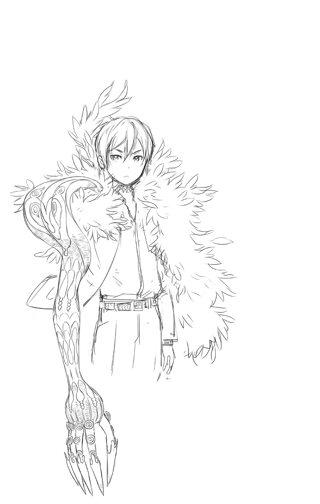
２ 覇道の行方 ～Outbreak of War～
「状況がどうであれ、失態は失態ですね」
帰還したネスティに対して、メルギトスはにべもなくそう言った。
弁解はしない。こうなることも想定内であったから。
「これはペナルティですよ」
嘯きながら、悪魔の指先がネスティの首筋を撫でる。
爪が食いこむ鋭い痛みと共に、身体の中から温もりが失われていくのがわかる。
忌まわしきライルの、【融機人】の血が搾取されてゆく。
「彼女さえ助かるのなら、自分はどうなってもいいと思っていますね。貴方」
図星を指されても動じない。少なくとも表情には出さない。
感情を隠すことには慣れている。ずっと、そうやって生きてきたのだから。
愛おしいですよ―――とメルギトスは囁いた。
絶望に抗おうとする心と、隠しきれぬ諦念が血潮に溶けて、極上の美酒となる。
破滅に向かって進んでいると自覚しながら、それでも歩みを止められない。
ニンゲンよりも人間らしい、愚かで哀れな機械仕掛けの異形種。
「そんな貴方が大好きですよ」
だから、これはご褒美なのだと悪魔は嗤った。
「......っぐ、うあああああアアアアァァァっ!!」
冷たい炎が記憶領域を焼く。注ぎこまれた悪魔の血潮が全身へと巡り、情け容赦なく侵蝕してゆく。剝き出しの神経に鑢をかけられたような痛みと共に、ノイズ混じりの見知らぬ情景が、ネスティの視界を不法占拠した。
それはかつて、悪魔が見た夢。はかなく散った蜜月の日々。
百億の怨嗟と千億の悔恨が織りなすピクセルが、結合と拡散を繰り返しながら燃えてゆく。全てはくるおしい想いゆえに―――混じりけのない真実の想いゆえに。
（理解できない......わけ......ないじゃ、ないか......）
憎んでもなお惹かれてしまうのは、波長が呼び合うから。
真実の煌めきを切にと欲するから。
（ああ、そうか......ようやっと......腑に落ちたよ......）
相似形は―――ひとつきりではなかったのだ。
「ネス!?」
無造作に床へと放り出された青年の身体に、トリスは慌てて駆け寄った。
かろうじて息はある。だが、その身体は芯まで冷え切ってしまっていた。
「寝かせておきなさい。じきに休む暇もなくなりますから」
そう告げたメルギトスの顔には、あろうことか憔悴の色が濃く浮かんでいた。
ふらつく足を引きずって、そのまま部屋を出て行こうとする。
「お父さ......」
「その呼び方はもうやめなさい」
不愉快なんですよ―――と、背を向けたまま彼は吐き捨てた。
「え、でも......だって......」
「やめろと言ってるんだッ!!」
思いがけぬ怒号に、トリスはひっと息を呑む。
だが、それだけだった。お仕置きと称する憂さ晴らしの虐待は続かない。
「お人形遊びには飽きたんです。反吐が出るくらいにね」
道化めいた哄笑を響かせながら、悪魔は去っていった。
「うあ、ああぁ......っ」
拒絶されてしまったという現実に、トリスの全身が激しく震え出す。
涙がぽろぽろとこぼれて、嗚咽があふれでて止まらない。
呼吸ができなくなって、視界がぐるぐると回り出す。
「ご主人さまっ、トリスさまっ、しっかりしてくださいっ！」
駆け寄ったレシィは、懸命に少女の身体を揺さぶった。
だが、届かない。彼の声ではトリスに満ちてゆく絶望は払えない。
むしろ健気なその光は、彼女の中の闇を一層くっきりと際立たせるだけで。
より深い嘆きの底へと追いやっていく。
（どうしよう......私......捨てられちゃった......）
何が悪かったのか。心当たりはいくらでもある。なのにどれも違う気がする。
わからない。ワカラナイ。わからない。
ただ、どうしようもないということだけは、はっきりとわかっていて。
為す術もなく、沈んでゆく。
伸ばした指先は何も摑めず、力なく下がっていく。
だが、それを阻む力があった。
―――心配しなくていいんだ
僕がここにいるから。君の側にずっといるから。
どんなに汚れてしまったとしても、構わない。
一緒に、落ちてゆくから。
―――君だけをひとりぼっちで、闇の中に置いていったりはしないから
「あ......あ、あああ......っ」
涙でくしゃくしゃになった彼女の視界に、青ざめた顔で微笑む彼がいた。
どうしようもない馬鹿だな、と優しく見つめていた。
「ネス......ネスティ......っ」
すがりつくトリスの温もりを、ネスティは震える手でかき抱く。
彼女の抱える苦しみさえも、愛おしいと感じながら。
部屋を出たレシィは、赤くなってしまった鼻をこすりつつ、そっと呟いた。
これでよかったんだ―――と。
◆
「完全に手玉に取られたようだな、ソルよ」
淡々とそう告げた父オルドレイクの言葉に、頭を垂れたまま彼は震えた。
義姉クラレットの離反。予期せぬ【誓約者】との遭遇。さらには【抜剣者】の加勢。
やむなき要因は数多くあれど、それは言い訳にはならない。
不測の事態も想定したうえで、彼は自分の【魔人形】のみならず、父から【兇剣士】まで借り受けていたのだから。
あまつさえ、父自らの手で窮地を救われてしまったのだ。
厳罰をくだされてもやむなしと、ソルは覚悟していた。
が、オルドレイクは意外にもそれ以上、彼を責めなかった。
「咎を責めることはたやすいが、それではなんの益にもならぬ」
失策は誰にでもある。オルドレイク自身、何度も軽挙に走って不覚を取り、その挙句に命まで喪う羽目になってしまったのだから。
【再誕】を経て、仕えるべき王を得た今の彼は、かつての自暴自棄な思考から解放され、崇高なる目的のために邁進する使徒としての本分を取り戻していたのだった。
「心に強く留めて、二度と不覚を取るな。我らは王の理想のために働く者。その歩みに支障をきたしてはならぬ」
「承知いたしました、父上」
忠実な息子として、ソルは同意する。
だが、その表情にはどうしても消しきれぬ疑問の色があった。
「王の―――【救世皇帝】の理想とは、一体？」
「そうか。お前はまだ、完全なる【エルゴ碑文】を目にしたわけではなかったな」
ソルは歯嚙みした。正統の後継者に選ばれなかった彼には、その書を手にする機会さえ与えられなかったのだから。
「恥じることはない。直接、あれを目にしたことがあるのは我だけなのだ」
自らが後継者として選んだキールにも、妻であったツェリーヌにさえ、彼はそれを許可していなかった。
「あれは―――呪われておるからな。知れば、その真実の重みによって、けして尋常のままではいられなくなる―――我のように、な」
父の浮かべた凄絶な笑みに、ソルは息を呑んだ。そこには禁忌に触れたことによって、その毒に蝕まれずにはいられなかった男の姿があった。
「始祖ゼノビスが長き苦悩と葛藤の末に遺した、けして世に出てはならぬ秘事の塊よ」
エルゴの王の側近として共に戦い、王国時代の繁栄を支えた偉大なる召喚師ゼノビス。
王の死後、彼は権力争いばかりを続ける宮廷の者たちに失望して、野へと下った。
そして志を同じくする弟子たちと共に、真のエルゴの王の遺志をもって理想郷を形作るべく、独自の行動を開始したのだ。王国の現体制を真っ向から否定するその思想は危険視されて、彼らは反国家勢力として弾圧されながら、地下に潜って活動を続けたという。
「それが【無色の派閥】のはじまりなのですね」
そうだ、とオルドレイクはソルにうなずいた。
「今では形骸化し、当初の理念を忘れ、現世利益に走るものばかりだがな」
オルドレイク自身もそうだった。召喚師を志していた若かりし頃の彼には、【蒼の派閥】に属するための伝手も、【金の派閥】の地位を買うだけの財産もなかった。
それでも夢を諦めきれず、外道召喚師に堕ちることさえ覚悟して、セルボルト家の書生の末席に加えてもらったのだ。斜陽を迎えていた旧家にとっても、召喚術の才ある者の確保は急務であり、なりふり構っていられるような状況ではなかったから。
いくつかの幸運―――あるいは悪意によって、彼はそこで運命の転換点を得た。
仕える家の令嬢の気まぐれによって紐解く機会を得た【禁断の書架】。
その最奥にひっそりと隠されていたのが、幻とされていた【エルゴ碑文】の完本だった。
「かの書物はゼノビスが自ら極めた召喚術の奥義を暗号によって記した魔道書である―――と、数多の召喚師たちは信じておるようだが、それは浅はかな思いこみでしかない」
そこにしたためられていたのは、もっと恐ろしい、世界の根幹を揺るがすような秘密の数々。
「あれは記録だ。エルゴの王がついた噓と、罪を共に背負った始祖の苦しみ、後悔のな」
それを解読してしまった時、おそらく彼は憑かれたのだ。
否、惹かれてしまったのかもしれない。
理想郷の実現を志すも、数多の悪意によって夢破れ、それでも諦めきれなかった始祖の嘆きと怒り―――どうしようもないこの世界を徹底的に破壊して根本から創り替えるという、純粋なる逸脱者の描いた力強き夢に。
「我らが【救世皇帝】の御力は、その果てなき夢を具現化されるだろう。不出来な因子の全てを淘汰し、より良きものに補塡して、強き者が正しく統べる真の理想郷をもたらす」
でなければ―――この世界は今度こそ完全な失敗作とみなされる。
（信じておりますぞ、我が王よ―――至源の罪をあえて継承し、超克せんとする貴方の高潔さと強さを―――【響融者】がもたらすであろう、その御業の確かさを）
◆
（失敗作、だとは......正直、思いたくないわね）
かつて学究都市にあったそれを再現した調整槽に横たわり、今は穏やかに眠っているレイを、研究者としての冷ややかな目で見つめながら、シャリマは心中でそう呟いた。
異変を見せた彼を追って帰還した彼女は、玉座の間での皇帝の独白の一部始終を耳にすることとなった。まるで時間を戻したように復調し、覇気を漲らせる彼を説き伏せて、簡単な検査と称してこの研究室まで連れてきたのだ。
無論、本心は違う。
渾身の傑作と信じた【再誕の制錬者】が、自らの意図せぬ挙動を示したことに、完璧主義者である彼女はどうしても我慢がならなかったのだ。
同時に、保険の必要性を感じていた。
愛しい我が子が、造物主である自分に対して、決して二度と牙を剝かぬように―――。
（ミコト......忌々しい出来損ないめ......）
その性能の躍進ぶりには感嘆したが、あれはもう使い物にはなるまい。余計な自我が強すぎる。造物主に敵対するなど、身の程知らずにも程がある。
「問答無用で廃棄したいところではあるけれど......」
問題は彼の右手にある【追想の制錬石】だ。あれを回収しなくてはどうしようもない。
（もともと【制錬石】は唯一無二のものとして錬成されるはずだった。砕け散った【霊界】のエルゴの欠片を再構成することで、人造のエルゴとして創造するはずだったのだから）
彼女がその天啓を得たのは、偶然に見た古い資料によってだった。
帝国がまだ帝国としては存在しなかった時代に、とある港町で保護された漂流者についての報告書。
彼は地図にない島から逃亡してきたのだと主張し、あまつさえ自分は【無色の派閥】の召喚師なのだと言い張ったというのだ。
無論、彼の証言は妄言として処理された。
召喚獣たちの実験施設として作られた島など、あまりにも荒唐無稽すぎたからだ。
しかもその召喚獣たちが反乱を起こして、命からがら逃げてきたというのだから、笑うしかない。酔っ払いでも、もう少しマシな噓をつくというものだ。
それでも一応、該当する海域は調査されたらしい。
海上ならではの突然の天候不良によって、なし崩し的に打ち切られてしまったが。
（今にして思えばそれこそが、【忘れられた島】に張られていた【嵐の結界】だったのね）
かつての帝国軍海戦隊第六部隊が遭遇した悲劇―――強大な魔剣を護送する任務の途上、原因不明の嵐に遭遇した彼らは、ほぼ全滅の憂き目にあっている。
副官とたった二人で、かろうじて生還した女隊長アズリア・レヴィノスはそう報告し、責任を問われて国境警備の閑職に追いやられたという。
今でこそ女将軍として名高い彼女の、若き日の苦い記憶だ。
が、彼女の一連の報告が虚偽にまみれたものであることを今のシャリマは知っている。
「彼女の部隊を壊滅させた張本人に聞いたんだものね」
【無色の派閥】の実験場として作られながら、廃棄されてしまった【忘れられた島】。
被験体だった召喚獣たちと共に反旗を翻した異才の召喚師と、その死によって偶発的に誕生した恐るべき二本の魔剣。そして、その所有権を巡る戦いが引き起こした悲喜劇。
（手負いにされたオルドレイクは、島の崩壊を確信して離脱したそうだけど......）
だが、【抜剣者】レックスらの活躍により危機は退けられて、島は今もそこにある。
往来を妨げていた結界が消えたのを契機に、外部との交流を推し進めて、独自の文化圏を築きあげつつさえあるらしい。
復讐戦を挑んで逆に窮地に陥った妻を救うべく、島へと再訪したオルドレイクは、禍根となりかねぬその萌芽に気づきながらも、あえて放置するという決断をくだした。
自身の崇高な志を継ぐに足る、優れた能力をもつ嫡子の誕生を優先したためだったが、その代償として最愛の妻を失った時から、彼の凋落は始まっていたのかもしれない。
「あの人の個人史なんて、まるで興味なかったんだけどね」
シャリマにとって重要だったのは、長きにわたる推論の裏づけを得ることだった。
【再誕】した彼が真相を語ったことによって、彼女の中で欠けていたピースは補完され、ようやく確信に至ったのだ。すなわち―――人が【界の意志】に成り代わることは不可能ではない、と。
世界の成り立ちについて、断片として世に遺された【エルゴ碑文】はこう語る。
万物は【始原の界の意志】から分かたれることによって生じた―――と。
物質は全て魔力を内包している。
そこに意志が宿ったものが魂であり、宿った意志を外部に向けて発信できるか否かが生物と無生物の境目となる。そして、より複雑な意思表示ができるかどうかが、魂の高みを判断する標になるというわけだ。
極論、物言わぬ石ころであっても魂が宿っている可能性はある。
表出する自己手段をもたず、また外部からそれを解読する方法がないだけのことなのだ。
だが、万物の祖たる【界の意志】だけはそれを可能とする。
生きとし生けるもの―――のみならず、物質として存在する全ては、不可視の魔力の流れによって【界の意志】と接続されたままであり、事象の変化に伴うあらゆる情報を、常に相互循環し続けている。
これを【共界線】と呼ぶ。
いわば【界の意志】と万物の間で、リアルタイムで繫がっているネットワークと考えればいい。ここを経由する膨大な情報は、まさに世界の記憶といえるものであり、これを読み解くことによって【界の意志】は世界の現状を知り、行く末を読んで、場合によっては精神的に干渉を行って、軌道修正することさえ可能とするのだ。
とはいえ、それはけして強制的なものではない。
虫の知らせや直感といった、無意識へと働きかけるだけにとどめられている。
理論的には、意識を完全支配することさえ可能であるにも拘わらず、だ。
シャリマには、それが不満だった。
（流れが悪い方向に向かっているのなら、どうして強制的に修正しようとしないの!?）
創造主であるならば、生み出した全てに対して責任を持つべきではないのか。
介入することができるのならば、どうして悪化する事態を未然に防ごうとはしないのか。
（この世界を完璧な理想郷にしたいのなら、それが唯一の方法だというのに！）
そう考える彼女にとって、件の記録に記されていた【核識】という発想は天啓だった。
【共界線】に介入することで、その先に繫がる事物を自在に操る。それはいわば、人の手で【界の意志】の御業を行う方法であった。怠慢な創造主に成り代わって、正しき秩序をもたらすことだった。
彼女はその思いつきに魅了され、自己流で方法を模索し始めたのである。
簡単なことではなかった。
到達点はわかっていても具体的な方法は不明のまま。それどころか【核識】というシステムが実在するという証言さえ眉唾で、ゼロから模索する他なかったのだから。
だが、それでも彼女は信じて邁進し続けた。各種文献をあたり、非合法な実験にも手を染めてきた。界を越えて召喚した様々な存在たちを、解体寸前まで徹底的に調べ尽くすことで、不可視の魔力の糸の存在を暴き、制御しようとした。
圧倒的に足りぬ時間を補うために、自らの身体に改良を施し、衰えや疲れを知らぬ人外の領域にまで引き上げた。その時にはもう、倫理などとっくに捨て去っていた。
学究都市にある軍の秘密実験施設に所属していたことが、そんな彼女に最高の研究環境をもたらしたのは言うまでもない。国力増強という大義名分のもとに与えられた予算と権限は、途方もない絵空事とも思われた探究に、ゆっくりとだが確実に成果をもたらしたのである。
（【界の意志】の御業を手中に収めるためには、それを源として分かたれた力を利用する以外にない）
エルゴの王の遺産―――彼の島にもそうしたものが存在していたという、汲めども尽きぬ魔力を大地にもたらす【至源の泉】や、代行者としての権限と共に各世界の【界の意志】から授けられたと伝わる、エルゴそのものの力の一部を分け与えられた欠片。
そういった、より至源の存在に近い事物を鍵媒にできたならば、彼女の理想は叶う。
だがそれは、いくら権力や財力を費やしたところで、たやすく手に入る代物ではなかった―――はずだった。
後に【無色の乱】と呼ばれることになる、聖王国の紡績都市サイジェントで起こった二度にわたる魔王召喚の儀式。失敗に終わったその初回の儀式において、用いられたものが【霊界のエルゴの欠片】であると知った時、シャリマは狂喜乱舞した。
砕け散ったそれを執念で拾い集めて、力の残滓を利用して【制錬石】を錬成した。
【追想】と【再誕】を主とするふたつに分けたのは、完璧なる再構築はシャリマの技術でも限界だったためだ。不本意ではあったが、万が一のための安全策と考えれば許容できた。ひとつが喪われたとしても、望みが完全に潰えてしまわぬようにできるのだから。
完成したそれらを運用する方法についても、彼女は独自の解答に辿りついていた。
適合する者を選び、不適合者の精神を破壊したという【核識】の致命的な欠陥も、独善的な彼女には、至極簡単に乗り越えられる問題であった。
（運任せに探すのではなく、適合する資質を備えた器をいちから創造してしまえばいいだけのことじゃない）
研究の過程で抱きこんだカイロスを説き伏せると、彼と自分の因子を人工的に授精させたものを素体とし、様々な改良と最適化を施すことで条件を満たそうと試みたのだ。
こうして、ミコトとレイは完成した。
カイロスの裏切りによって、その性能を直接確かめる機会は奪われてしまったのだが。
（けれど、巡り巡って......全ては再び、私の手の中へと還ってきた！）
カイロスによって命と名づけられた【追想の制錬者】は、不完全ながらもその異能に覚醒しようとしていた。段取りを踏んだうえで懐柔することには失敗してしまったが、その出現に呼応するようにして零―――【再誕の制錬者】も姿を現した。聖なる王家の血を混入させたことが吉と出たのか、彼はその異能を自力で使いこなし、ひとつの目的のために独自の活動を開始していたのだ。
その目的とは、新たなるエルゴの王として、この世界を完璧に掌握すること。
（異存はないわ。その過程でおそらく、この子は私の最終目標にまで到達する）
【響融者】―――【共界線】を支配し、世界の記憶を改変することにより、世界のありようを根本から書き換えて支配する無敵の王―――無能な【界の意志】に成り代わって、世界に完全なる調和と秩序をもたらす至高の存在となるはず。
「そのためにも、欠陥品からもうひとつの【制錬石】を奪取しなくてはね」
分かたれしふたつをひとつに束ねた時、はじめて【制錬石】は真の力を発揮するだろう。
亡魂たちを糧に、人造のエルゴの欠片として機能するのだ。
【制錬者】は完全なる【核識】として、【共界線】を支配する【響融者】になるだろう。
そして彼女は、その創造主として、さらなる絶対の高みに立つのだ。
「だから私は、本当に貴方に期待しているのよ。レイ......」
夢見るような眼差しを向けて、シャリマは甘い声で囁く。
「裏切らないで頂戴、ね」
手にした電磁メスが、冷たい部屋の空気をかすかに焦がして。
歪んだ愛の証が、またひとつ、彼の身体に刻まれた。
◆
文字どおり頭ひとつ抜きんでた背丈をもつ彼は、劇場通りの人混みの中でもすぐに見つけ出すことができた。
「フォルテ！」
手を振って呼びかけるマグナの声に、フォルテはにかっと笑って応える。
「ずいぶんと久しぶりだなあ。元気だったかよ、おい！」
「おかげさまでそれなりに、だよ」
大きな手でわしわしと髪を搔き回してくる旧友の変わらぬ振る舞いに、懐かしさを感じてマグナは目を細める。
「もう、フォルテったら。今のマグナは一人前の召喚師なんだから、そんなふうに子供っぽく扱ったら失礼でしょ！」
口を尖らせてたしなめたのは、彼の相棒であるケイナだ。長い黒髪に鬼道の巫女装束という出で立ちが示すように、彼女は【鬼妖界】生まれの女性である。不慮の事故で過去の記憶を失っており、出会った当時はそのことを気にやんでいたが、いろいろあって今はすっかりこの世界での暮らしに馴染んでいるようだった。
冒険者である彼らとマグナが知りあったのは諸国見聞の旅に出たばかりの頃だ。ひょんなことから野盗退治で共闘したのがきっかけで、共にレルムの村へと向かい、黒の旅団の襲撃に居合わせることになってしまった。追われるアメルを守りながらの逃避行から全ての黒幕であった悪魔王メルギトスとの決戦に至るまで、二人に助けられたことは数知れない。
マグナが派閥の調査を請け負うようになってからも何度か行動を共にしていたが、ここ最近はそれもなく、こうして顔を合わせるのは久しぶりだった。
「呼び出しちまって悪かったな。登録が終わり次第、即入営らしくてよ。時間がとれるのが今しかなかったんだ」
「てことは、やっぱりフォルテたちも義勇兵に志願したんだな」
【救世皇帝】による諸国への宣戦布告を受けて、聖王国は即座に迎撃態勢を整え始めた。正規の騎士団のみならず、腕に覚えのある者たちを募って義勇兵団の編成を決めたのは、面子ばかりを重んじていた王国議会の判断としては、異例ともいえるものだった。
「それだけヤバイ事態ってことだろうさ。国同士の全面戦争なんて無謀なこと、まともな頭の持ち主だったら絶対やりゃしねえはずなんだからな」
聖王国・旧王国・帝国は同じ大陸にあって、どの国も他の二国と国境を接している。
そのため、いずれかの国と国が交戦状態になった場合には正面の相手のみならず、残る一国に対しても防衛戦力を割く必要があるのだ。
互いに牽制し合うことで保たれていたかりそめの平和など、力の均衡が崩れてしまえば呆気なく瓦解してしまう。隙を見せれば、挟撃によって滅ぼされてしまうのは自明の理だ。
だからこそ各国の為政者は、多少の小競り合いはすれども、全面的な開戦だけは避け続けてきた。無謀な戦は国力を弱体化させ、そこに暮らす民の信用を失わせる。
それでは国が成り立たなくなるのは、誰にでもわかる道理であった。
「だが、あの新しい皇帝はそんなことまるで考えちゃいねえ」
力によって国を奪い取り、新たに従えたその軍勢をもって、さらに戦火を広げようとしている。従わぬならば去るもよし。ただし、歯向かうならば全力をもって殲滅する。
「本当にこわいのは、それを是とする人たちが少なからずいるってことよ」
眉をひそめてケイナが言う。
長きにわたる摂政政治の腐敗によって閉塞感を味わっていた多くの帝国民たちは、そこに風穴を開けてくれた存在を歓迎したのだ。強引極まるそのやり方も、彼が皇族の血を引く者であったことにより、不埒な簒奪者への正統なる報復劇という美談になった。
【救世皇帝】の名はその果敢な行動力によって若者たちを魅了し、今も熱烈なる支持者を広げつつある。彼が再編統治する新たな世界の姿こそが、かつてこのリィンバウムが理想郷と呼ばれた黄金期―――王国時代の再来になるのだという待望論まで生まれつつある。
その声は帝国のみにとどまらず、この聖王都にさえじわじわと浸透してきているのだ。
「まるで、誰かが意図的にそうなるように仕組んでいるみたいで気味が悪いわ」
「実際、そのとおりなんだと思う」
確信をこめて、マグナは呟いた。
「【再誕の制錬者】の膝元には、あのメルギトスがいるんだからね」
フォルテとケイナの顔が強張った。
「シャムロックから情報としては聞かされてたが、やっぱマジだったんだな」
「ご丁寧に挨拶までされたよ。アメルや......ネスがここに来てないのも、その結果だよ」
「そう......大変だったのね......」
努めて冷静に告げようとしたマグナの、その震える肩に、ケイナは優しく手を置いた。伝わってくるいたわりの気持ちが、彼の心にいくばくかの温かみをもたらす。
言葉で慰められるよりもずっと、今のマグナにはそれがありがたかった。
「それに口先だけじゃないんだ。敵は【召喚兵器】を戦力として手に入れている。それも禁忌の森でみんなが戦った原型―――無限に自己再生する凶悪なシロモノなんだよ」
「なるほどな。そいつが馬鹿げた野望を実現するための原動力ってワケかい」
マグナの説明を聞いて、フォルテは顔をしかめた。
ただでさえ並の兵士では歯が立たぬ【召喚兵器】を無尽蔵に繰り出すことができるならば、ふたつの国家を同時に相手取ったとしても兵力でひけをとることはないということか。しかもその一方である旧王国は、傀儡戦争によって受けた損耗から未だ回復しきれていない。
国力の衰退をめぐる元老院の内輪もめによって、放っておいても内部から瓦解しかねぬという噂さえ、フォルテは旅先で聞き及んでいるのだ。
「しっかし、一体何者なんだよ。あの【再誕の制錬者】レイってのは」
迷える死者の魂を現世に呼び戻し、新たな肉体を授けて麾下とする異能の力。
目の前にいる【超律者】や、その縁で知りあうこととなった【誓約者】、【抜剣者】といった名だたる勇者たちと比べても、明らかに力の桁が図抜けている。同じ人間とは到底思えない。バケモノだ。
「そのあたりは......俺よりも、彼から直接説明してもらったほうがいいんだけどさ」
本来ならこの場に同席してもらうはずだったミコトは、未だサイジェントから帰還していない。転移の術を用いて発ったのは間違いないらしいが、誰にも別れを告げなかったというのが気がかりだった。
「キールさんがお姉さんと一緒に捜してくれるそうだから、お願いするつもりだよ」
僥倖だったのはそれにつきる。レルムの村の無線機から事の顚末を報告してくれたのは、呪いから無事に解放されたキールだったのだ。ミコトは彼を救いたいという亡魂の願いに応えるため、彼の地まで無我夢中で空間転移を成功させたのだという。
入れ違いで旅立ってしまっていたため、ハヤトと再会することはできなかったキールであったが、再誕したオルドレイクの妄執を止めるべく、護界召喚師として全力を尽くすとマグナに誓ってくれた。異母兄であるバノッサの魂も必ず救ってみせる。と。
「よかったじゃない。敵対していたお姉さんが命がけで助けに来てくれたなんて」
記憶を失ったせいで妹カイナを悲しませてしまった過去をもつケイナは、姉弟が和解できたことを心から喜んだ。未だ自分が再会できぬままの、【鬼妖界】にいるという兄ホクトのことも胸によぎったのであろう。
「なーに、大丈夫さ！ そのミコトってのが皇帝と同じ【制錬者】だっていうのなら、そう簡単にくたばったりなんかしねえって」
おどけた言いぐさで、フォルテが根拠なく保証してみせる。
「こうして俺らがくっちゃべってるこの瞬間にも、ひょっこり転移とやらで帰ってくるさ」
「あんたはまた、そういう無責任なことを適当に―――」
調子のいいことを言う相棒に向かって、ケイナが容赦なくいつものツッコミを入れようとしたその時。
不意に、三人の頭上の空間が歪んだ。
「のわあぁぁ～っ!? らっ、落石注意 っ!!」
っ!!」
「へ？」
見上げたマグナの顔面に弾力のある物体が勢いよく激突した。何が何だかわからぬままひっくり返って地面に後頭部を痛打したマグナは、その痛みと顔を塞ぐ重みにふがふがと言葉にならない呻き声をあげた。
「ちょっ、ま......今どくから、は、鼻息荒くすんなってぇ......っ!?」
狼狽した声をあげながら、マグナの上にいきなり墜落してきた娘は、超ミニでタイトなスカートの裾を手で押さえつつ立ち上がる。
「気にするくらいなら、もうちょい長いの穿いとけよ。ギリギリだろ、あれ」
もっともな指摘とは裏腹に、視線はしっかりそのギリギリを凝視していたフォルテのみぞおちに、ケイナの裏拳がどむすっとめり込んだのは言うまでもない。
「大丈夫、マグナ？」
膝をついて苦悶する相棒は放っておいて、ケイナはマグナを助け起こした。
「ん？ もしかして......コレがマグナって人なの？？？」
「これ、って......貴女ねぇ！」
詫びる様子もまるでない娘に食ってかかろうとしたケイナは、その姿が明らかに人間ではないことに気づいて、思わず息を呑んだ。
「あぁ、ゴメンゴメン。アタシはお使い頼まれただけだからさ、面識とか全然ないんだわ」
あちこち跳ねまくった黒髪を搔きつつ、紫色の肌の娘はごまかし笑いを浮かべた。
腰のあたりから生えた翼と矢印めいた形状の尻尾が、落ち着きなく揺れている。
「貴女、もしかして......悪魔なの？」
半信半疑でケイナが尋ねたのは、目の前の彼女から敵対心や威圧感といったものが全く感じられなかったからだ。
「おっ、話が早くて助かるじゃん」
まあね、と娘は肯定した。
「アタシの名前はルチルさま。強欲の貴婦人さまに仕える七人の悪魔商人のひとり、って言ったら......もっと驚いてくれたりする？」
ふるふる、とケイナは首を横に振った。まるで聞いたことがないのだから仕方ない。
そっかあ、と悪魔の娘はがっくり肩を落とした。
「やっぱそうだよねえ。アタシの取り柄ってば、界の狭間を自在に渡るだけだもんなぁ」
こぉんちくしょーと唸ってから、地団駄を三回踏む。
それで気持ちが切り替わったのか、けろっとした顔を上げて、ルチルは言った。
「それはそれとしてさ、アタシはマグナってニンゲンを迎えに来たんだよ」
よいしょっとしゃがんで、まだ事態が把握できていないマグナの襟首をひっ摑む。
「さっさと見つかってよかったよ。そんじゃ、そーゆーことで......」
「ちょっと待って!?」
そのまま退散しようとするルチルを、慌ててケイナは引き止める。
「いきなりそんなこと言われたって。そもそも貴女、マグナと面識ないんでしょ。一体、どこへ連れていこうっていうのよ!?」
「あー、メイメイんトコだよ」
面倒くさそうにルチルは答えた。
「メイメイさんのところ？」
「そうそう。アイツとはいろいろと腐れ縁でさあ。大至急かつ手が足りないって引っ張り出されちゃったんだよねえ。界の狭間を行き来できるヤツって結構レアっぽいから」
「は、はあ......」
「他の四人はアイツが自分で引っ張ってきたんだけど、コイツだけ単独行動だったからさ。わざわざルチルちゃんがお迎えにやって来たってワケよ」
あーめんどくさいとぼやいてから、ルチルは改めてケイナに言った。
「そんじゃ後はよろしく♪ 用件が済んだらちゃんと元の場所に返却しとくそうだから」
「ちょ......」
次の瞬間、ルチルはその場で大きく跳躍した。
悪魔の翼がはためいて、そのまま飛翔するのかと思いきや、その頭上の空間に銀色の波紋が広がって、抱えたマグナごと彼女を頭からすっぽりと呑みこんでしまう。
まるで水の中に潜るようにちゃぽんと間抜けな音だけを残して、悪魔の娘は現れた時と同様に唐突に消え去ってしまったのだった。
「ど、どうしよう......」
「大丈夫なんじゃねえか。メイメイのねーちゃんの用事だっていうんならよ」
狼狽するケイナに、うつむいたままでいたフォルテが請け合った。その口ぶりはさっきのような軽薄な感じではなく、油断なき冒険者のそれになっていた。
「おかしな真似したらぶった切ってやるつもりで見てたけどな、呆れるくらい隙だらけで拍子抜けしちまった。あれは戦い慣れしてない素人だ。マジで使いっ走りなんだろうな」
外してあった剣の留め具を直してから、大きく伸びをする。
「問題はむしろ、目撃者多数のこの状況をどう言い繕うかってことだな」
「あ......」
言われてはじめて、ケイナは周囲のざわめきに思い至った。
人通りの多い繁華街のど真ん中で、いきなり悪魔が現れたり消えたりしたのだ。騒ぎにならないはずがない。衛兵たちがやって来たら、ますます面倒なことになる。
なにせ彼女の相棒は、この聖王国に限っては公的に存在することが認められない、厄介な経歴の持ち主なのだから。
「ど、どーすんのよ!?」
「今さら逃げるってのも無理だし、どうしたもんかなあ」
他人事のように顎をぽりぽり搔く相棒に、ケイナが再び憤りの拳をぶつけようとした時。
よく通る声と共に、救い主はやって来た。
「ちょっと二人とも！ 一体なにをやらかしたのよーっ!?」
金色の髪を振り乱して、お嬢さまらしからぬ形相で駆けてきたのはミニス・マーン。【金の派閥】の議長ファミィ・マーンの娘であり、新進気鋭の女召喚師だった。
「おー、ミニス。ちょうどいいところに」
「何がいいところよ。ていうか、なんで悪魔なんかと親しげに話したりしてたのよっ」
互いの情報交換と今後の相談も兼ねてマグナたちと会うということで、任務にかこつけての久しぶりの再会を楽しみにしていたら、いきなりこの騒ぎである。
「しかも、マグナが連れていかれるのを指をくわえて見てるだけだし！」
反射的に召喚術をぶっ放そうとして思いとどまったのは、出迎えとして同行していたバルレルがたしなめたからであった。
「だからよォ、そんなカリカリするような相手じゃねえって。うっとうしいだけで、アイツにニンゲンをどうこうできる力なんてねェよ」
うんざり顔でバルレルが繰り返す。
新たな闖入者が聖王都では名の知れた召喚師であり、また連れている護衛獣らしき存在が子供の悪魔だと気づいた野次馬たちは、それですっかり興味を失ってしまったようだ。
人騒がせな内輪のゴタゴタとして、勝手に納得されてしまったのだろう。
「なあ、バルレルよ。お前さん、あの悪魔っ娘のこと知ってんのか？」
むくれるミニスへのフォローをケイナに押しつけて、フォルテは問いかける。
「まーな。顔見知りの女悪魔んトコでパシリをやってるザコの一匹だよ」
なんでもその女悪魔は強欲を司る存在であり、配下の者たちを様々な場所に派遣しては悪魔好みのお宝の数々を集めさせているらしい。
「ニンゲンの世界に紛れてるヤツも何匹かいるらしいがな。商売が目的だから必要以上に暴れたりしねえし、そもそも荒事を嫌ってる腑抜け揃いだよ。話にもなんねェぜ」
「ああ、確かに悪魔商人とかって名乗っていたわね」
「メイメイのねーちゃんとは商売つながりってことか」
「そう説明されると、なーんか納得せざるを得ないわね。悔しいけど」
同時に妙な安心感もある。
「やたらとうさんくさかったり、隠し事してたりするけどさ。基本的にあの人、マグナの世話を焼くことを楽しんでるみたいだもんね」
それはライやレックスに対しても同様らしいと、ミニスはリシェルやベルフラウからも聞き及んでいる。どういうわけか件の酔いどれ占い師は、渦中にある彼らの前に現れては、その不思議な力を用いて少なからぬ助力や助言を与えてきたらしいのだ。
全部偶然だと本人は誤魔化していたが、怪しいものだというのが彼女らの見解だ。
（まあ、ハヤトたちの時には姿を見せなかったみたいだけど......）
それこそ偶然なのか、はたまた何か理由があってのことなのかは定かでないのだが。
「そんなわけでマグナは強制連行されちまったワケだが、どうするよ？」
久しぶりの再会であることに変わりはない。メシでも食うかと提案したフォルテだったが、ミニスが持ってきた報せは、そんな気分を吹き飛ばしてしまうものだった。
それなんだけどね、とミニスが言いづらそうに告げた。
「ついさっき帝国が旧王国の領内に進軍して、正式に戦闘状態に突入しちゃったのよ」
声をひそめた彼女の意図を察して、冒険者たちは驚きの声を嚙み殺す。
「......詳しい状況は？」
「マグナが言ってた【召喚兵器】はまだ確認されてない。攻め手の大半は今までと変わらない生粋の帝国軍人たちで、悪魔憑きだとか活ける死体が混じってる様子はないわ―――今のところは、だけどね」
相手の陣営にメルギトスがいる以上、かつての【傀儡戦争】と同じやり口で攻めてくる可能性は否定できない。黒の旅団の兵士たちが犠牲になった時のように、仕込みは済ませたうえで伏せているということもあり得るのだ。
「もしそうだとしたら、旧王国は本気でヤバイかもな」
召喚師たちをその特権と共に排斥し、元老院と騎士たちによる支配を強めてきた彼の国は、それ故に召喚術に対抗する術に乏しい。かつてデグレアが【召喚兵器】を欲した理由が、剣の力だけでは覆せぬ不利を補うためであったことは、今や周知の事実だ。
「【蒼の派閥】は言わずもがな。お金にうるさい私たち【金の派閥】でさえ、劣等感から召喚師のことを見下してるあいつらとは、関わらないようにしてるんだもの」
だからこそ、家名すら定かではない外道召喚師であっても、金で動けば重宝される。
ただし、今回ばかりはそれすら頼れないかもしれない。
「再誕したオルドレイクと戦ったって、ハヤトたちは言っていたもんね」
【無色の派閥】の最大勢力であったセルボルト家の当主が皇帝側についたと知れ渡れば、有象無象の外道召喚師など震えあがってしまうだろう。
かつてのような派閥への影響力は発揮できずとも、表立って反抗する気概をもつような輩も現れまい。事態を静観し、勝ち馬の尻に乗ろうとするのが関の山だろう。
「目先の欲に溺れて自滅する。いかにもニンゲンらしいことだぜ」
バルレルの皮肉にも反論できる者はいない。
「もしそうなったとしても、私たちは私たちにできることをするしかないわ」
旧王国を救う余力はない―――それが聖王国の首脳陣の結論だとミニスは言った。
むしろ弾避けとして、少しでも帝国の戦力を削ってくれることを期待する。
「薄情かもしれないけど、そうしなくちゃ私たちにとって大切なものは守れないから」
以前の自分ならば、きっとこの考え方を否定しただろう。
見習いから正式な派閥の一員となり、母の葛藤を間近に見て学ぶ機会が増えたからこそ、ミニスは現実を無視できなくなった。ただ無邪気ではいられなくなったのだ。
「それが大人になることなのよ。やりきれないけれどね」
そう言って、ケイナはミニスを優しく抱きしめた。
フォルテは下唇を嚙んで、無言で空を仰ぐ。
だが、しばしの感傷に浸ることすら、時代の流れは許してくれなかったのである。
危急を告げるラッパの音が、けたたましく聖王都全域に鳴り響く。
伝令兵の乗った馬が次々と、導きの庭園を抜けて、せわしく城に向かって駆けてゆく。
「どうやら―――こっちにもおいでなすったようだな」
【転移の門】の恩恵によって、敵は距離を無視して兵を進めることができる。
大平原に突如として姿を現した、威風堂々たる帝国の軍勢。
その陣頭に立つのは【救世皇帝】その人であった。
◆
「ハヤト先輩！」
自分の名を呼ぶ後輩の声を聞いて、ハヤトはレックスとの会話を中断し、振り向いた。
メイメイに誘われた者同士、異界の水晶の地での再会である。
「どうやら無事だったみたいだな、ミコト」
「ギリギリで、ですけどね」
苦笑いで応えたその顔から、かつての暗さが薄らいでいることを認めて、ハヤトは安堵した。激変し続ける状況に翻弄されて、不安に満ちていたミコトの姿は、この異世界に来たばかりの自分のようだったからだ。
（その原因のひとつは、捨て鉢になっていた俺のせいなんだけどさ）
親友の仇と一方的に思いこんで、命を狙ったことは水に流せるような話ではあるまい。
けれど、ミコトは許してくれた。
それどころか、命がけでハヤトの間違いと弱さを正してくれた。
その時点で、相当にタフだとは思っていたけれど。
「ちょっと見ないうちに、一層たくましくなっちまったなあ。頼もしいっていうかさ」
おまけに背後に何やら霊的な存在まで従えている事実を、【誓約者】であるハヤトの目はしっかりと見抜いていた。
それは彼の隣にいた、赤毛の【抜剣者】も同じであった。
「はじめまして。君がミコト君だね。ハヤトからいきさつは聞かせてもらってるよ」
穏やかな声で、レックスはミコトに微笑みかけた。
「俺の名前はレックス。【忘れられた島】ってところで、学校の先生をやらせてもらってるんだ」
知ってます、とミコトは緊張気味に応えた。
「こっちも、マグナたちから聞きました。魔剣【果てしなき蒼】を振るって、みんなの笑顔を守ってくれる優しい【抜剣者】さんなんだ、って」
褒めすぎだよ、とレックスは頭を搔いて照れた。
「それに、そっちのほうは本意じゃないんだよ。できれば魔剣を振るう勇者よりも、子供たちにたくさんのことを教えていける先生でいたいんだ。俺は......臆病者だからね」
「なーに言ってんだよ、先生」
横から口を挟んだのは、ライだった。
「正面からの殴り合いじゃ、あんたが俺らの中で一番強いじゃないか」
ギブソンとミモザの結婚式の帰り道。せっかくだからとライが言い出して、レックスとハヤトにマグナを加えた彼ら四人は、軽く手合わせをしたことがあるのだ。
「あれは、剣の力があってこそだよ。武器の使い方じゃ、ライ君にはとても及ばない」
「うん、俺だってライには敵わないよ。なんせ鍛え方が違うもんな」
「召喚術もありだったら、ハヤトさんが最強じゃんか！」
未だ召喚術には苦手意識のあるライは、ぷうっと頰を膨らます。
「うーん......実戦でのこなれた使い方じゃ、今はマグナのほうが一枚上手かもしれない」
成り行きで剣を交えてしまった時、肌で感じた思いをハヤトは口にした。
「マグナ君は派閥の任務に駆り出されることも多いようだからね。それだけ揉め事に関わっているんだと思うと、ちょっぴり気の毒な気もするけど」
昼寝が大好きなはずのマグナが勅命で飛び回っている姿を想像して、レックスは少しだけ罪悪感を覚えた。最年長者である自分が島で平穏な暮らしを送っていることに、後ろめたさを感じてしまうのだ。もっとも、彼があまり積極的に外界の出来事に干渉してこなかったのは、それによって島の住人たちを否応なく巻きこんでしまうことを恐れたからなのだが。
（島のみんなが外の世界と関わっていくには、まだまだ時間が必要なんだ。彼らが学ぶだけじゃなくて、受け入れる側にも少しずつ変わっていってもらうための......）
異界の存在たちは外敵や道具などではなく、良き隣人たりえるということを。
それがどれだけ困難なことであるのか、レックスにも当然わかっている。アズリアやレルムの村の面々の力を借りながら、少しずつ人々の意識を変えていけるように働きかけてきてはいるが、目に見えるほどはっきりとした成果はいまだに得られていないのだから。
それでも、けして諦めるつもりはないのだけれど。
「なんていうか......さすが皆さん、すごく強いんですね」
しみじみミコトが呟いた、その途端。
「「お前が、言うなって！」」
即座に返ってきたのはハヤトとライの、見事にハモったツッコミだった。
「ミコトが使ってる亡魂の技は、ここにいる誰にも真似のできないようなものなんだぞ」
「空飛んだり、転移したり、変身してみたり、やりたい放題じゃねーか」
「あ、うう......っ」
もっともすぎて、反論ができないミコトである。
「俺はまだ直接見せてもらったわけじゃないけど、この二人がここまで言うからには、君も相当な力の持ち主なんだろうね」
そう賞賛したレックスの声には、どこか悲しげな響きが混じっていた。
「こうしてメイメイさんに招かれたことが、何よりの証明だと思うよ」
「あ......」
ミコトだけではなく、ハヤトやライの顔にも緊張が走る。
そうなのだ。ただ旧交を温めあうために、ここに呼ばれてきたわけではない。
「世界の存亡がどうとか、って聞いてるぜ」
忌々しげにライが呟いた。
「ギアンたちからも似たような警告されたんだ。うさんくさいって思ってたけどさ......」
この場の状況が、もはや無視できないことを何よりも雄弁に語っていた。
「残念ながら本当みたいだ。オルドレイクも、そんなことをほのめかしていたからね」
残された時間はそう多くはない―――あれは破滅に向けてのカウントダウンが始まっているという警告だったのではないか、とレックスは考えていた。
「それを知っていて、どうしてオルドレイクは救世皇帝に仕えると決めたんだろう？」
ハヤトは首をひねる。
彼が知る晩年のオルドレイクは、世界の破滅を願っていた。【魔王召喚】によって全てを破壊し、そのうえで召喚術を用いて、望むがままの世界を新たに創りあげようとしていた。
そこまで考えてから、ハヤトははたと気づいて息を呑む。
「召喚するんじゃなくて、【再誕】によって滅びた世界そのものを都合良く作り替えようってことか!?」
「そんなバカな!?」
ハヤトの言葉に、ミコトもまた驚かざるを得なかった。
たしかにレイの用いる【再誕】の力は、亡びた者たちに新たな肉体を与えて復活させる。しかし、それは亡魂に限った話のはずだ。ひとつの世界をまるごと【再誕】させるという途方もないレベルのことができるとは、いくらなんでも思えない。
「―――それが、できちゃうのよねぇ。幾つかの条件を満たすことさえできれば」
そう言って、不意に姿を現したのはメイメイだった。
どういうことか、とミコトが問いつめるよりも早く、焦れていたライが嚙みついた。
「呼びつけといて、どこ行ってたんだよ。こっちはすぐにでも、戻ってやらなくちゃならないことがあるっていうのに！」
「怒らないでってば、お兄さま。そっちはそっちで情報交換する時間も必要だったでしょ」
そして、それは自分たちにとっても同じだったのだ、とメイメイは弁解した。
「状況を確認しがてら、向こうの世界にエクスを送ってきたの。火急の事態に派閥の総帥が不在のままじゃあ、さすがに支障が出ちゃうからね」
「火急の事態って、どういうことですか？」
レックスが真顔で尋ねた。
「今さっき、聖王国に救世皇帝の軍勢が侵攻を開始したわ」
「!?」
仲間たちの安否を思って、ハヤトの表情が険しくなる。
「心配しなくても、まだサイジェントは無事よ、少年―――ああ、今はもう青年って言ったほうがいいかしら？」
先んじてフォローしてから、メイメイはハヤトの顔をじっと見つめる。
「試練の時と比べたら、随分と見違えたものねえ。あの時みたいにそっくり同じ力の分身を創り出すことは、さすがのメイメイさんでも無理かもねえ。にゃはははっ」
「な......」
訝しむ他の三人たちをよそに、ハヤトだけが今の言葉の意味に気づいて戦慄した。
新たなる【誓約者】として力を得るきっかけとなった最初の試練―――それは己と仲間たちの鏡像と戦って、打ち負かすというものであった。
それを知るのは、あの場で共に戦ったサイジェントの仲間たちだけのはず。レックスやライたちにも話したことはない。なのに、彼女はまるで見ていたかのように口にした。
「あの試練は......貴女が仕掛けたものだったんですね、メイメイさん」
そうよん、とあっさり彼女は認めた。
「リィンバウムのエルゴの欠片の守護者は私。分身たちは傀儡人形の術だったってこと」
つけ加えれば、バノッサの【魅魔の宝玉】の力から、彼らを異界に緊急避難させたのも。
「そういう立場だったから、あの時は顔出しを控えさせてもらったの。個人的な事情とか、やむにやまれぬ状況なんかもあって......ね」
わざとらしくウインクされて、ハヤトは大きくため息をついた。
マグナに紹介されて引き合わされた時も、道理で彼の肩書きに動じなかったわけだ。
「つまり気づいてなかっただけで、ハヤトさんもこいつに助けられたってことなのか？」
「そうみたいだな。まったく......本当に神出鬼没で謎ばっかりの人だよ」
目をまるくするライにそう愚痴ってから、改めてハヤトはメイメイに頭を下げた。
「ありがとうございます。貴女のおかげで、俺と仲間たちは命拾いすることができました」
「いいのいいの、あれも使命のひとつだったんだし。他のみんなと比べたら、むしろ助けてあげる機会が少なすぎたくらいなんだから。おあいこってことにしましょ」
ひらひらと手を振って、この話は終わりとメイメイは結論づけた。
「そんなことより、今はもっと別の話をしなくちゃね」
「そうですよ。帝国軍が動きだしたのなら、俺たちもすぐに動かなくちゃいけない」
珍しく、レックスの声には焦りがあった。級友の立場を案じているのは、彼と彼女の関係を知る者には明白だった。
けれど、メイメイはあえて、そんな彼に真顔で問うた。
どうして？ ―――と。
「どうして、って......だって、俺の力はこういう理不尽な争いを止めるために―――」
「それは貴方の主観よ、先生。仕掛けた側にだって、また別の道理と正義があるの」
「......っ！」
「そんな屁理屈―――仲間が危ないなら、助けたいって思うのが当然じゃないか!?」
言葉に詰まったレックスをかばうように、ハヤトがその気持ちを代弁する。
だが、返ってきたのは哀れみと失望をこめた眼差しだった。
「わざわざ改める必要なんてなかったみたいね、少年」
皮肉であることを隠そうともしないその物言いは、彼らがよく知る酔いどれ占い師のものとはまるで違う、冷淡で厳しいものであった。
「そんな屁理屈が世界を滅ぼす―――今からするのはね、そういうくだらなくて、だからこそどうしようもない話なのよ」
「偉そうに......。当事者でもないのに、見透かして、さもわかったような口ぶりで......っ！」
「落ち着いて、ハヤト先輩！」
いきり立つハヤトを、ミコトは慌てて制した。
その必死な眼差しに、怒りに任せたかつての自分の行いを思い出して、なんとかハヤトは落ち着きを取り戻した。そんな彼の振る舞いを見て、メイメイは悲しげに首を振った。
「やっぱり、貴方は王の器じゃない......そんなのわかっていたのに、なのに......」
やりきれぬ思いが、押し殺した呟きに滲んでいた。
『あのひと......ないてる......ずっと、ずっと......なきつづけてる......』
デュウの囁きが、ミコトに告げる。
『なくしたものをこいしがって......とどかないものに、てをのばして......わかっているのに、やめられないんだ......やくそくしたから......たいせつな、やくそくだから......』
どういうことかと問いただすよりも先に、ミコトの心は感じとっていた。
彼女の嘆きは、おそらくデュウと同じものであることを。
けして報われぬと知りながら、それでも身を削って、祈り続けている願いなのだと。
誰も次の言葉を発することができない、時が止まってしまったかのような沈黙。
破ったのは―――空気を読まない闖入者だった。
「うひゃああああああああああああああっ!?」
「落ちてるっ、落ちてるってば!?」
小娘のあげる素っ頓狂な悲鳴と、状況にいっぱいいっぱいな青年のわめき声。
虚空に魔力の飛沫をあげつつ、騒々しく落下してきた二名は、この場に満ちていた毒気をすっかり霧散させてしまった。
「ま、マグナさん......？」
「やあ、ミコト。みんなも、遅くなっちゃってゴメン......」
ぶつけた頭をさすりながら、たははとマグナは笑ってみせた。
「お前かよ、ルチル......前みたいに余計な巻き添え、引っかけてこなかったろうな？」
「アタシが下手くそみたいに言うなよな。この空間が尋常じゃねーんだから」
ぶーたれながら、ルチルが弁解する。
「なんせ、この世界の根幹を支えるお宝が眠ってる場所なんだ。むしろそこに侵入してこられる、アタシの才覚に感心するべきだと思うけどねっ」
「戻ってきて早々、ぺらぺらと世界の秘密をバラしまくってくれちゃって......」
うなだれて、深くため息をつくメイメイ。
再び上げたその顔には、いつものお気楽さが少しだけ戻ってきたようだった。
「無礼を謝罪するわ、青年。今のは、私の意地悪が過ぎてた」
ごめんなさい、とメイメイはきちんと頭を下げた。
「いいよ、別に。先に声を荒らげたのは俺のほうだし......言われたとおり、自分でも青臭いことしちゃったなあ、って反省する部分はあったし」
「メイメイさん個人としては、貴方のそういうところ、大好きなんだけどね～♪」
「......え？」
またからかわれたのかと思いきや、今度のメイメイの眼差しには優しさがあった。
愛おしいものを慈しむような、柔らかくて温かなものが。
「でも、さっきの言葉は紛れもない事実よ。きつくても、受け入れなくちゃいけないの」
これから起こるどうしようもない現実に、あえて立ち向かう覚悟があるというのなら。
「私の話を聞いてちょうだい。今までずっと隠され続けてきた、この世界の真実を」
覚悟を決めて、四人の勇者と呼ばれし者たちはうなずいた。
これからそう呼ばれることになるであろう【制錬者】もまた、同様に。
◆
「「撃ていッ!!」」
指揮官の合図と共に、弓手たちが弦を引き絞り、矢の雨を互いの陣営にめがけて降らす。
頭上に掲げた盾にぶつかり弾かれる音に混じって、肉をえぐる異音とくぐもった呻き声があがる。前線で切り結ぶ兵たちにはそれなりの速度が求められる。全身をくまなく覆う金属鎧を着ることができぬ以上、ある程度の被弾は覚悟のうえであった。
引き替えに、じわりじわりと距離を詰めていく。
長弓や弩弓は威力こそ充分だが、連射にはおのずと限界がある。その間隙をついて接近されてしまえば、弓勢の強さが逆に仇となって、命中精度が著しく落ちてしまうのだ。
その間境を越えた瞬間、進軍ラッパが鳴り響き、兵士たちが雄叫びをあげて走り出す。
手にした武器は主に槍だ。間合いの長さは集団戦では単純に有利であり、構えて突き進めば勢いに任せて、練度が低い者であっても敵に致命傷を与えることができる。
槍列がぶつかりあい、払いあって、互いの戦力を削ぎとっていく。
櫛の歯が欠けていくように、傷ついた者たちが地に伏すことで陣形が乱れてゆくと、戦局は次の段階へと移ってゆく。
「王国騎士の勲しを存分に示すのだッ！ 突撃イイイイイィィィィィッ!!」
馬蹄を轟かせて、聖王国の騎兵たちが躍り出る。より長大で重厚な槍を携えて、猛烈な突進で帝国の歩兵たちを蹂躙していく。貫かれてしまえばひとたまりもない。まして彼らは重装備の鎧に守られていて、生半可な攻撃では傷を負わせることができないのだ。
暗黒時代から近世にかけて、幾度となく旧王国の騎士たちと渡り合ってきた彼らの武勇は今もなお色褪せていなかった。
無論、帝国側も黙って全滅を待ったりはしない。
臨時徴用された民兵ではなく、正規の訓練を積んだ職業軍人たちが動きだす。
「召喚術詠唱用意―――撃えぇぇッ!!」
火球、石礫、冷気の渦にまばゆい雷撃。
誰でも学べる技術として体系化されて運用される【召喚術】の前には、重装甲など物の役にも立たない。ある者は兜の隙間から煙を立ち上らせて落馬し、またある者は金属鎧が皮膚に張りつく痛みに悶絶しながら、のたうち回った後に歩兵の逆襲にあって事切れる。
「【派閥】の方々、ご助力を！」
悲鳴じみた懇請を受けて、対抗するのは【金の派閥】の召喚師たちだ。
家々の秘伝を受け継ぎ、その研鑽に日々の多くを費やしてきた彼らからすれば、帝国軍人の召喚術など児戯にも等しい。より強力な火焰や竜巻によって報復がなされ、負傷者を再び立ち上がらせる治癒の光がほうぼうに降り注ぐ。
だが、いかんせん数が足りない。特権と立場を守るために秘密主義を貫いてきたがゆえに、威力で勝る有利を手数で押し返されてしまう。
まして、帝国軍人は武術も修めた精鋭だ。近接戦に持ちこまれてしまえば、剣にかかって倒される側が召喚師なのは明白だった。護衛の騎士や兵士たちがそれを阻まんと前進し、戦いは次第に消耗しあう乱戦となっていく。
こうなってしまえば、大規模な範囲に作用する召喚術はもう使えない。
「やはり最初に、強烈な術で一気に叩きのめしてしまうべきではなかったのでしょうか」
咎めるようにそう意見した軍官に対して、笑顔を崩すことなくファミィは答えた。
「それでは聖王国の名誉が傷つくと、反対なさったのはどちらの方でしたかしら～？」
言わずもがな、彼をここに遣わしている議会の貴族連中たちである。
彼らの多くは王の近衛を固めるという名目で、堅固な城の中に私兵と立てこもっている。
この軍官のように、貧乏くじを引かせた部下たちを送りこんで体面を保って、指揮権をふりかざすことで戦功を掠め取ろうという醜悪な意図が見え見えだった。
（あの頃からなんにも変わっていない。スフォルトの苦労は認めるけど、もうちょっとなんとかならなかったものかしら）
かつて【無色の派閥】と【紅き手袋】が画策した前聖王の暗殺計画―――あの時も貴族が余計な面子を保とうとしたせいで、王の御前にまで刺客の侵入を許してしまったのだ。
非合法な手段で乱入した彼女と現聖王の奮闘と、【蒼の派閥】の若き二人の召喚師らの機転によって、かろうじて未遂に終わったものの、一歩間違えば歴史が変わっていた。
（あの頃は、いろんな意味で若かった......って、いけない、いけない！ 今だって、まだまだ！ それなりには......ねえ？）
未婚の母と蔑まれたこともあるが、国の象徴として生来の快活さと奔放さを奪われた挙句、しかめ面を強いられ玉座に座っている彼のことを思えば、弱音なんて吐いていられないのだ。
「それに、大きな仕掛けを温存してるのは向こうも同じ。戦いは長丁場ですもの。切り札をきらなくちゃいけない局面は、然るべき時におのずとやってきますわ」
彼女の読みは、正しかった。
膠着状態を打開すべく、帝国軍は新たな戦力を展開してきたのだ。
「しょ、召喚騎兵です!!」
飛鷂魔や焰尖牛といった、騎乗用の召喚獣を駆る帝国軍人たちが強襲を仕掛けてくる。地上を進軍するものはまだしも、空からの一方的な攻撃には反撃の術が乏しく、ばたばたと兵士たちが倒されてゆく。
「だいじょうぶ」
うなずく彼女の期待に応えるかのように、銀翼の飛竜が空を割いて咆吼すると、火球を放って飛鷂魔たちを撃墜していく。その背に乗った金色の髪の少女は、本営で手を振る母の姿を目ざとく見つけると、指先でＶの字を作って応えてみせた。
「空の敵はミニスちゃん。地上のほうは―――シャムロックさん、任せたわね」
燃えさかる角を剛斧の一撃ではね飛ばされて、たたらを踏んだ甲獣の無防備な腹部に、狙いすました大剣の一撃が突きこまれる。どうと倒れて苦しげな呻きをあげるその下から、ほうほうの体で這い出してきた軍人の眼前に、白い騎士の剣尖が隙なく突きつけられた。
「武装解除して投降してください。我ら【聖なる大樹自由騎士団】は民の平穏を守るための剣。命までみだりに奪うつもりはありません」
団長であるシャムロックは、今は亡きトライドラ騎士の最後の生き残りであり、聖王国の武闘会を制した強者だ。そのしなやかで攻守自在の剣術の腕前の噂は、帝国にまで届いている。抵抗はするだけ無駄と、速やかに降伏を決めた件の軍人の選択は間違っていない。
「さすがです、リューグさん。あの固い角を根元からたやすく両断してしまうなんて！」
興奮気味に語るのは、正式に騎士として認められたばかりのアルバだった。
「バケモノとは、さんざん闘戯都市の見世物でやりあってきたからな。召喚されてくる大概の連中の弱点やいなし方は、骨身にしみついてるってこった」
レルムの村の自警団長ロッカの双子の弟であり、賭け試合の闘士として修練を積んできたリューグは、どうということもないと鼻で笑った。
二人は正規の騎士団員ではないが、有事における協力者として、身分と行動を保証する免状を貰い受けている。まだ歴史が浅い自由騎士団は後ろ盾としては弱いが、それでも最低限の理解は得られる。何より騒乱を未然に防ぐため、一定の調査権を聖王より勅許されていることから、後ろめたい者たちには充分すぎるほどに恐ろしいお墨付きであった。
「それをあてこんでたから、義勇兵に志願するのを引き止めたんだろう？」
まあね、とシャムロックはリューグの推測を認めた。
「我が団の訓練は、どうしても人間相手を重視せざるを得ない。志願してくる見習いたちに、最初からこういう荒事を教えこむわけにはいかないからね」
その辺りは教官であるレイドも随分と悩んだらしい。が、まずは己の身を守れるようになることが先決と、堅実な防御から相手の体勢を崩していく技法を徹底的に学ばせている。
より実践的で威力のある戦い方を教えるのはそれからだ。適性があるとわかれば、剣にこだわることなく斧や戦鎚、サムライの使うカタナといった特殊な武器を学ばせることもある。それらを指導するのもまた、信頼で結ばれた協力者たちなのだ。
「まあ、あっちにはフォルテとケイナがいるからな。こういう変則的な戦いに関しては、あのお調子者のほうが場数を踏んでるし、任せといても安心だろうさ」
リューグの言葉にうなずきつつも、シャムロックの内心は複雑だった。
（信用されているのは間違いないとしても、この言われようはさすがに旧い友人として情けないですよ。フォルテさま）
廃嫡された聖王子であり、今は冒険者として奔放に生きる彼は、協力者ではあっても、みだりにシャムロックの側には置いておけない存在だった。
地方における領主の非道に対する告発や暗躍する犯罪組織の企みを潰してきた実績によって、聖王の覚えもめでたき今の彼には、それゆえに一層の清廉潔白さが求められるようになっていた。放蕩息子として勘当され、世間的には死んだ扱いとされた皇太子とつきあいがあると知れれば、彼の手柄を快く思わぬ貴族連中によって、政争の種とされてしまうことは明白であった。彼一人のみならず、せっかく形になってきた騎士団そのものが潰されてしまうような真似は絶対にできなかった。
だからこそ、彼ではなくリューグをここに招いたのだ。本当なら一番近くで彼の背中を守り、共に戦いたいと願っているのに。
（ディミニエさまも案じておられますよ。貴方と彼女が無事に、この戦を切り抜けてくださることを......）
なるようになるさ、と豪快に笑い飛ばす声がどこからか聞こえたような気がして。
自然と口元に浮かんでいた笑みを消し去ると、シャムロックは凛とした顔つきで命じる。
「残敵を掃討しつつ、負傷した兵たちの撤退を助けよ！ けして命を無駄にはするなよ！ 我らが拠って立つのは忠義ではなく、より多くの人々の平穏を守ることにあると知れ!!」
高潔なる団長の檄を受けて、団員たちは勇ましく、おーっと声をあげた。
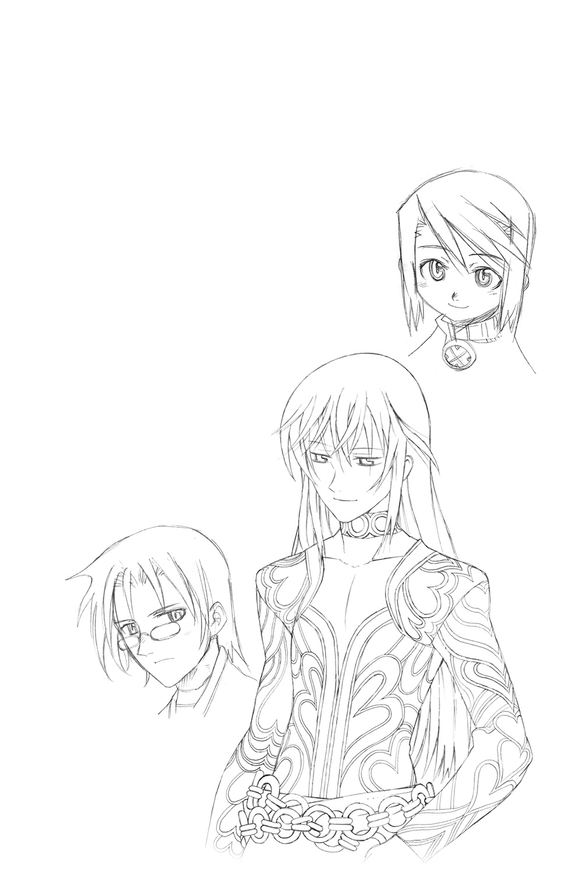
３ 誰が為の英雄 ～Who is a culprit?～
「貴方たちの目は【救世皇帝】を名乗る【再誕の制錬者】と彼の率いる軍勢に向けられていると思うけれど、それとはまったく別の大きな災厄が、今まさに訪れようとしているの」
メイメイの言葉に勇者たちは目を見張る。
その中でただひとり、聞いてるぜ、と応えたのはライだった。
「ギアンの師匠をやってる【幻獣界】の至竜ってのが言ってたんだ。全ての世界を巻きこむ未曾有の危機が、もうすぐ訪れることになるんだってさ」
「竜尋郷のおチビさんね。あの子も先代の【呼吸する城】の守護竜と同じく【星読み】の能力をもっているから、気づいても不思議ではないわ」
「つまり、占いの結果だってこと？」
厳密に言えば違うわね、と彼女はマグナに答えた。
「天宮の星の巡りは確定した未来の行方を示す軌跡。逸らすことはできても完全に覆すことはできないの。最悪だった結果を、まだマシな程度に誘導するのが精一杯ってとこね」
それさえも、いち早く兆しに気づかねば不可能なのだという。
「あるべき流れに逆らおうっていうんだから代償も大きいわ。自分の身を投げ出す程度ですめば御の字。死よりも過酷な運命を背負い続けることになったり、それを他人に一方的に押しつけたり―――たくさんの生命を天秤にかけて、切り捨てることもしなくちゃならない。犠牲を出さずに済ますことなんて無理。そういう次元の話なのよ」
「お、おどかすなよ......」
脅しではない、と彼女の目は断固として告げていた。
「そしてこれから話すことを聞けば、貴方たちもその輪から逃れられなくなる。今言ったような目に遭うかもしれないけど―――それでも、いい？」
すぐに答えられる者はいなかった。息を呑む者。うつむく者。動悸を整えようとする者。
「視えているんですよね......貴女には」
深呼吸をしてから、おもむろにレックスは問うた。
「おそらく、俺たちが辿るであろう行く末が」
眉根を微かに歪めつつ、メイメイはうなずいた。
それはそのまま、待ち受けている未来が過酷なものであるという証でもあった。
「―――聞かせてもらおうぜ」
そう決断したのはハヤトだった。
「それでも彼女が俺たちに話そうとしてるってことは、話さなければ、より最悪な結果が待ってるってことなんだと俺は思う」
あえて当人に問いたださなかった理由は、続けて彼の口から語られた。
「そしておそらく、結果を聞いてしまった時点で未来も確定してしまうんじゃないかな。彼女が常にはぐらかした物言いをするのは、多分、それを恐れているからだと思うんだ」
過去のやりとりを思い出して、レックスがはっとした。
マグナとライも互いに顔を見合わせる。そして―――メイメイは否定しなかった。
（だとしたら今まで、彼女はどれだけの沈黙と罪の意識に耐えてきたんだろう......）
彼女の孤独と絶望の日々を思い、レックスは歯嚙みした。
底知れぬ力をもちながら、傍観者に徹し、なるがままに全てを見届けねばならぬ苦痛。
それでもできることを探した結果、道化ぶって彼らのもとに近づき、遠回しなやり方で助けになってくれていたのだろう。なんとか最悪の結果にだけはならないように、と。
そんな彼女が、あるがままを告げるしかないという事態なのだ。
「俺も聞きたいです。ううん、俺だけは絶対に聞かなくちゃいけない気がします」
ずっと黙ったままだったミコトが、強い決意と共にそう言った。
「他の皆さんと違って俺は貴女とは初対面です。なのに呼ばれたのはきっと、この話が俺抜きでは語れないものだからだと思う。俺たち二人の【制錬者】がこの世界に現れたことが、もうひとつの災厄の引き金になってしまったんじゃないかって思うんです」
メイメイは、やはり答えない。ただ、つらそうな顔でうつむいている。
「聞かせてください。これは俺たち自身の意志で、貴女が強いたものではないですから」
レックスが、この場にいる者全ての意志をまとめて、そう告げる。
そこに、どんな理不尽な内容だろうと唯々諾々と従うつもりはないという強い意志を感じとって、メイメイは微笑むと同時に、苦く重い罪の意識を呑みこむ覚悟を決めた。
「彼の言うとおりよ。二人の【制錬者】の出現が、崩壊への引き金を引いてしまったの」
が、それは彼らだけに科すべき咎ではないと彼女は強調した。
「遅かれ早かれ、危機は必ず訪れていたのよ。そうなって当然といえる理由が、幾星霜もの年月をかけて降り積もってきた結果なのだから」
「だからいったい、それはどんな危機だっていうんだよ？」
焦れるライに、彼女は淡々と告げた。
「この世界のみならず、それをとりまく【機界】【鬼妖界】【霊界】【幻獣界】全てを巻きこんだ戦争が始まるのよ。かつてエルゴの王が鎮めた時とは比べものにならぬ激しさで―――世界がまるごと壊れてなくなってしまうほどの、ね」
◆
大平原で始まった国と国との激突は、仕掛けた帝国が押し返される情勢になっていた。
「あまり戦局はよろしくないようですな」
次々と打ち倒されていく兵士たちを眺めながら、まるで他人事のようにレイムは呟いた。
「問題ない」
床几に座したレイもまた、当然の結果だと言うように応じる。陣頭に立って全軍を率いる皇帝と、それを補佐する顧問召喚師の会話だとは到底思えなかった。
「これはふるい落としでもあるのだからな」
「ふるい、ですか」
うなずいて、皇帝は己の思惑を述べる。
「先陣を務めさせているのは志願してきた民兵と旧来の帝国兵たちだ。前者は我が檄に応じて集った有象無象たちであり、後者は国を掌握した際、なりゆきで手に入れたものだ」
「戦力としては消耗しても惜しくはない、と？」
「そこまでは言わぬ」
だが、信頼するに足るかどうかは見極めねばならぬ。
「熱情や忠義心に浮かされただけの衆愚はいらぬ。媚びへつらいや恐怖心から従順なふりをした兵など、極限状態ではかえって害悪にしかならぬ」
実際に死地へと赴かせれば、上っ面の虚飾など剝がれ落ちる。命のやりとりをする戦場ほど、人の本性が剝き出しにされる場はないのだから。
弱者は淘汰され、臆病者は逃げだし、卑怯者は浅知恵を露呈する。
「生き残る才覚を持たぬ者は我が戦列に並ぶ資格なし。足手まといを救ってやれる余裕はこの先の戦いにはない。わきまえて戦場から遠ざかるか、好き勝手に野垂れ死ぬがいい」
無慈悲な言葉は、だが一面においては真理でもあった。
戦場における弱者はただ弱いだけですまず、強者の力を削ぐ害悪にさえなるのだ。
「実にもっともだと思いますよ」
ですが、とレイムは苦笑する。
「貴方の望む高みに合わせていては全滅は必至でしょう。このあたりで妥協して、明かぬ埒を明けてみてはいかがかと......」
皇帝はうなずき、本命の部隊に出撃を命じた。
◆
「出番だぞ、カシス」
ソルにうながされ、手にしていたものをぎゅっと握りしめて、カシスは立ち上がった。
「どうしたんだ。何かずいぶんと思いつめているようだが......」
問いかけながら、内心でソルは無理もないと思っている。【再誕】した父親の命により救世皇帝レイの下で働くなど、仇討ちを考えていた頃には思いもしなかった流れであるのだから。愚かな為政者たちを淘汰せよと教えられて育ってきた彼ら兄妹が、権力の側に立って戦っている構図は、皮肉屋である彼でも戸惑わずにはいられぬ状況の変化だった。
まあ、それはいい。指導者たるオルドレイクがそう決めた以上、忠実な子供である彼らはそれに従うだけのこと。問題なのは、求められた結果に応えきれずにいることだ。
はぐれ召喚獣が巣食う開拓村の殲滅。離反者となったクラレットの討伐。
いずれも失敗してしまっている。後継者どころか、無色の使徒として恥ずべき失態だ。
（俺はまだいい。キールがああなった以上、長子としての目こぼしも少しはあるだろう）
だが、カシスは違う。セルボルト家の血脈をもたぬ以上、常に成果をあげ続けなければ無能と見なされてしまう。妾腹である彼ら兄妹はそうやってこの立ち位置まで昇り、勲功を積み続けることで脆い足場を守ってきたのだ。競争相手であった直系の二人が脱落した今でも、それは変わってなどいない。
（まして、こいつは父上に対する思慕が強すぎる......哀れなほどに......）
満足のいくまで甘えたことのない少女は、褒められたい一心で過酷な日々を乗り越えてきた。義父の死を知った時には、このまま憤死してしまうのではないかと思うほどに取り乱した。兄の懸命な支えによって復調したものの、その精神は未だ不安定なものを抱えたまま、手のつけられぬ荒れくるいぶりを垣間見せている。
そんな今の彼女にとって、義父に不要と断じられることは、精神的な死をもたらしかねない。同じ母親をもつ者として、ソルはそれだけは避けたいと願っていた。
（俺が正統な後継者となれば、こいつを身を削るような日々から解放してやれる。父上の情けを求めることだけに腐心できる、失墜の恐怖とは無縁の場所に置いてやれるんだ）
歪んではいたが、それは彼なりの妹に向ける愛情であった。
（だいじょうぶよ、にいさま......私なら、だいじょうぶ......）
応えるかわりに、カシスは兄に向かって力なく微笑んでみせた。
言葉にして告げないのは、理由を問われても答えられないから。
抱えこんだ秘密が恐ろしくて、とても声を出すことができないから。
（あたしは―――悪魔と契約した―――）
昨夜のことだった。
すぐ足下にまで迫ってきた破滅の兆しに怯えていた彼女の前に。
おだやかな笑みを浮かべて、彼は現れたのだ。
『お困りのようですね、カシスさん』
『レイム......メルギトス......』
夜風に銀の髪をざわめかせる彼の姿は、恐ろしいまでの美しさだった。
月光を受けた髪がきらきらと輝いて、夢幻のように彼女を魅了して。
気づけば、カシスは全てを吐き出してしまっていた。
認められぬ悔しさ。捨てられる恐怖。そして、満たされぬ哀しみ。
悪魔の王はその全てを受け止め、やがて、ぽつりと呟いた。
『貴女は、私の愛娘によく似ているようですね』
だから助力してさしあげましょう、と彼は言った。
『これを......』
差し出されたのは掌大の真鍮の玉だった。表面に刻まれた複雑奇怪な紋様もさることながら、カシスが息を呑んだのは、その内部に蓄えられた膨大な魔力の胎動だった。
『【霊界】の魔力を蓄えた逸品です。【霊界】の召喚術を唱える際に補助として用いれば、貴女にさらなる強大な力をもたらすことをお約束しますよ』
だが、悪魔が差し出す品だ。何の代償もなしに利益が得られるはずがない。
その旨を問いただすと、メルギトスはあっさりと認めた。
『この玉は持ち主の感情を喰らいます。貴女が今まき散らしている嘆きや怒りといった暗い感情を吸収し、【霊界】との門を開いて、悪魔の群れを際限なく呼び出してしまうのです』
ですが、それになんの問題があるのでしょう―――こともなげに、彼は言った。
『セルボルト家の秘術を学んできた貴女なら、悪魔など恐るるに足らぬはず。むしろ連中を支配することで、さらなる力を手にすることだって不可能ではないでしょう？』
そしてそれは、彼女ひとりの益だけに留まらない。
力によって戦果をあげるのは皇帝の眼鏡に適うことであり、彼女の義父の望みを叶えることでもある。同じ皇帝直臣であるレイムとしても、保有戦力の増強は損にならない。
『本当は私の娘に使わせたかったんですがね。過保護なお目付役が口やかましいせいで、宝の持ち腐れになってしまうところだったんです』
どうしますか、とメルギトスは問いかける。
『父さまが......喜んでくれる......』
求め続けてきたものを得られる術が、目の前に示されている。
その甘い蜜の香りに頑として抗えるほど、少女は強くはなかった。
◆
「世界がまるごと壊れる、って......」
絶句したのはライだけではない。あまりに規模が大きすぎて、幾多の災厄を乗り越えてきた勇者たちであっても、現実として受け入れるには少なからぬ時間が必要だった。
「その災いはこの世界に生じるんですか？ それとも外からやって来るんですか？」
レックスがそう問うたのは、頭の片隅に【核識】の存在がよぎったからだ。
適格者の残滓を核にして誕生した【狂える島の意志】―――島の【共界線】を支配し、崩壊寸前にまで導いたあの存在ならば、彼女が言う危機をもたらすきっかけになってもおかしくない。
だが、メイメイの答えは彼の予想を上回る壮絶なものだった。
「どちらもよ。原因はひとつじゃない。互いに連鎖して致命的な結果になる」
だからこそ、彼らをまとめてこの場に集めたのだ。勇者と呼ばれた者たちが束になって対処しなくてはどうにもならないほどに、状況は厳しいのだという。
「異界からの侵攻だっていうのなら、俺たちが張った【結界】があるじゃないか！」
ハヤトが声を荒らげたのも無理はない。
リィンバウム全体を覆う【護りの結界】は、伝説のエルゴの王が異界からの敵の侵入を阻むために張り巡らしたものだ。度重なる召喚術の濫用によってほころんでしまったそれを、再修復するためにハヤトは二代目の【誓約者】となったのだ。四界のエルゴの欠片の力を用いて、相棒の助けも得て、二度と同じことが繰り返されぬようにと入念に張り直したはずなのだ。
「貴方に落ち度があったんじゃない。時の積み重ねが、限界をもたらしてしまったのよ」
彼は結界を完璧に修復したが、それを疲弊させる原因となった召喚術を消し去りはしなかった。自ら築きあげた異界の友たちとの友誼と、そこから広がっていく無限の可能性を消し去りたくなくて、あえてそのままに留めおいたのだ。
だが、王の時代と比べて、この世界はより召喚術に依存するようになってしまっていた。
より便利に、より豊かに―――当たり前のように欲望を満たすための手段や道具として、人々は召喚術を使い続けている。帝国は言うに及ばず、それに対抗する名目で聖王国も【金の派閥】による召喚術の民生利用に積極的になっている。
くわえて、頻発する大規模な戦乱だ。
「【傀儡戦争】にしろ【浮遊城事件】にしろ、騒動の規模に大小はあっても、そこで幾度となく用いられた召喚術は、結界を急速に摩耗させるのに充分すぎるほどだったわ」
召喚術のみに限った話ではない。機械魔や堕竜の出現は、この世界の魔力を消耗することで結界の構造自体を弱体化させたし、結界の及ばない【界の狭間】を渡る移動ですら、大なり小なりどうしても負荷はかかってしまうのだという。
そして―――二人の【制錬者】の登場だ。
「ねえ、貴方は自分の能力をどんなものだと認識してるの？」
「それは......」
問われて、ミコトは言葉に詰まった。感覚的にはこういうものだと把握できているが、原理やデメリットについては何も知らない。無理もない。知らされていないのだから。
「亡くなった人たちの魂の力を借りて、身に纏う武器に変えたり、俺自身を拠り所としてその遺志を果たす手助けをしたり、とか」
そういう認識自体に問題はないわ、とメイメイはうなずいた。
「ただ、原理についても知ってほしいの。私もそちらは専門じゃないから、ずっと貴方を見てきて、気づいたことについてなんだけど......」
【制錬石】の力は亡魂に直接作用しているものではない、と彼女は言ったのだ。
「その石が働きかけているのは、この世界に張り巡らされた魔力の流れそのものなのよ」
万物に付随し、【界の意志】へとつながっている不可視の魔力線。
「まさか、【共界線】を支配することで、亡魂を操ってるってことなのか!?」
理解したレックスは、思わず声を荒らげた。
「正解よ、先生。つまりこの子は、貴方が知るところの【核識】の亜種なのよ」
しかも時と場所を選ばず、個としての戦闘能力さえ保有しているのだ。
「それって、そんなにすごいことなんですか？」
今ひとつ理解できてないミコトに、レックスはかいつまんで【核識】について説明した。過去の話として聞かされてはいたが、詳細は知らなかったハヤトやマグナも大いに驚き、理屈はさっぱりなライもまた、とんでもないものだということだけは認識した。
「世界のつながりそのものを操って、全てを思うがままに支配してしまうシステム、か......」
クレスメント家の末裔であるマグナは、その支配力を恐怖と感じた。念じるだけで対象を道具に変えるそれは、ある意味で【召喚兵器】の開発思想に近しいものであったから。
それは、あの兵器と戦ったことのあるミコトも同じだった。
自分が用いている能力が、そんなにも物騒なものに由来しているとは。
「深刻になるなよ、ミコト」
そう言ってくれたのは、ハヤトだった。
「理屈はどうであれ、お前はその力を支配するために使っちゃいない。目の前でカノンの亡魂が憑依するのを見た俺が証人だ」
確かにそうだった。カノンにしろ、スカーレルにしろ、ツェリーヌにしろ。
憑依のきっかけは全て、向こう側からのアプローチであった。
未練をかなえてくれる可能性をもったミコトを守り、そのために必要な力を貸し与えてくれているのだ。それは対等の契約であって、従属を強いるものではないはずだった。
「そういう物騒な力の持ち主が、ミコトでよかったってことだよな」
そう言ってライは笑った。出会って間もないが、彼が悪人かどうかくらいはわかる。
まして、可愛い愛娘の命の恩人なのだ。味方しない理由がない。
「逆に考えりゃ、あの皇帝ってのが同じ【制錬者】なのが厄介なんだけどな」
ライのぼやきにハヤトが同意する。
今の話から察するに【再誕】の力も【共界線】に由来するものなのだろう。
「けど、死者を復活させるってのはさすがに行き過ぎてる気がするんだが......」
あれは復活じゃないわ、とメイメイが答えた。
「亡魂に新たな肉体を与えるから【再誕】なのよ。転生の輪に還った魂は呼び戻せないし、散り散りになって消滅してしまった魂も、おそらく再構築できないと思う」
なるほどなあ、とハヤトはうなずいた。
「それにしてもなぜ、全てに亡魂が絡んでくるんでしょうか？」
沈思黙考していたレックスが、改めてメイメイに問うた。
「俺が知る【核識】の働きは、生者や無機物にまで作用するものだった。ミコト君がそこまで至っていないのは、単純に経験不足によるものなんでしょうか？」
だとすれば、訓練次第でその領域にまで届いてしまうかもしれない。
そしてそれは、もうひとりの【制錬者】も同じだと考えなくてはならない。
完全なる【核識】の力が発揮されれば、その精神支配に抗うことは至難の業となるだろう。操られた味方同士が相撃つ最悪の事態だけは、なんとしても避けねばならない。
「使いこなせてないのも事実だけど、そこまでの領域に達することはないと私は見てるわ」
なぜなら【制錬者】は、あくまで【核識】の亜種だからだ。
「【共界線】に働くのは同じでも、【制錬石】は支配よりも別の目的を優先しているのよ」
それは情報の読み取り―――【共界線】を循環する【世界の記憶】の獲得だ。
「彼の【追想】も皇帝の【再誕】もそこから得た情報を元にして亡魂に形を与えている。【追想】はその魂がもつ潜在能力を高めることに、【再誕】は任意の強化要素を書き加えすることに、それぞれ特化しているんだと思う」
「その説明で、なんとなくわかってきましたよ。彼らを引き金として喩えた意味が」
確信をこめて、レックスは続けた。
「無自覚に【共界線】を揺さぶることで、この世界そのものが変質した結果、結界との間に隙間ができてしまったんじゃないですか」
まして【再誕】は世界を改変してしまう能力だといっていい。死者が甦ることで星の巡りは大きく乱れて、リィンバウムの行く末を危うくしてしまったことは想像に難くない。
「つまり皇帝をなんとかしない限り、結界をいくら新しく張っても無駄ってことか」
なら簡単だ、とライはうなずく。
「やっぱ、皇帝をとっちめてやればいいんじゃねーか！」
「お兄さまってば、脳味噌まで筋肉すぎ」
返ってきたのはメイメイのジト目と、容赦のない言葉だった。
「皇帝と災厄は別物で、それはもうすぐそこまで来てるの......というか、もう侵攻を開始しちゃってるのよ」
「なんだって!?」
異世界の敵に対する防人たらんことを心がけてきたハヤトにとって、それは聞き捨てならぬ話だった。
「慌てて戻ろうとしても無駄よ、青年」
ぴしゃりと言い置いて、メイメイは続けた。
「狙われてるのはひとつやふたつの場所じゃないの。リィンバウム全土を破壊しつくすために連中は動いてる。貴方たちがいくら強くても、ひとつしかない身体じゃ全てを守りきることはできないわ」
最初に彼女が問うた覚悟は、おそらくこれを踏まえてのものだったのだ。
犠牲なしで全てを終わらせることは、どうあがいてもできないのだと。
最悪の結果を回避したいのなら甘んじて受け入れろ、と。
「どこが......狙われたんですか？」
レックスの声が重かったのは、予感があったからかもしれない。
「【忘れられた島】よ。あそこは敵にとって、真っ先に潰しておきたい場所のひとつだから」
「な......っ!? どうして、真っ先に教えてあげなかったんだよ!?」
「よすんだ、マグナくん！」
「だって......」
食ってかかろうとしたマグナを止めたのは、他ならぬレックス本人だった。
「襲われただけで、まだ陥落したわけじゃない......そうでしょう？」
ええ、とメイメイはうなずいた。
「ベルフラウと島のみんなが踏ん張ってくれてるわ。予想外の助っ人も現れたし、必要なことの全てを貴方たちに伝えるくらいの時間は、きっと保たせてくれるはず」
そうだろう、という思いをこめてレックスもまたうなずいた。
彼の自慢の教え子は、理不尽にはけして屈しない意地っ張りなのだから。
「心配しなくたって、あんたは特急で島まで連れてってやんよ。連れのメガネとケダモノは、ひと足お先に送っといてやったから」
ずっと無言で話を聞いていたルチルが、ニシシと笑ってつけ加えた。
「お代はこいつ持ちだから気にすんな。店の売り物、好きなだけ持ってけってさ♪」
「ま、そういうことだから。こき使ってやって頂戴な」
ほんの少しだけ、場を覆っていた重い空気が緩んだ。
だが、それで終わりにできる話ではない。
「敵って、何者なんですか？ 連中って言い方からして、個人じゃなくて集団ってことは理解できたんですけど」
ミコトが口火を切ったのは、自分が一番、この世界において背負う物が少ないのを自覚したからだった。
「集団、か。そういう範疇でとらえていいものなのか、正直、私も迷うんだけれど......」
言葉を選んでも無意味と悟ったのか、メイメイは意を決して、敵の名を告げた。
「敵は―――【四界の意志】たちが率いる軍勢よ」
◆
そいつらは、天に生じた銀のゆらぎをくぐって、乱戦の場に次々と現れた。
二足、四足、人にあらざるケダモノ。あるいはそれさえ判別できぬ異形種たち。
鋼の装甲を歪に纏った姿で、理性の欠けた眼差しを獲物に向けて、咆吼する。
「【召喚兵器】だわ！」
飛竜の背に乗ったミニスが、警戒の声をあげる。
古の罪人、クレスメントとライルの一族が創り出してしまった禁忌の存在。
様々な召喚獣たちに融機的な強化手術を施したうえで、制御プログラムで自由意志を奪い取り、死さえ恐れず、ただ眼前の敵を掃討するために仕立てられた兵器たち。
その本分は、たちまち発揮されることとなった。
―――ＳｙＧｉＹａａａａａａァａッ!!
硬度を高めた爪が獲物の顔面を切り裂き、赤熱化した牙が鎧ごと臓腑を貫く。
肉体の一部と化した重火器が火線を放ち、無差別に破壊を撒き散らす。
『巻き添えになりたくなかったら、さっさと退がりなさい！』
宙に浮かんだ小型観測機のスピーカーを通じて、高圧的なシャリマの警告が飛ぶ。
『聖王都に到達するまで、その子たちの進軍は止まらないわよ！ 眼前の全てを破壊して進み続けるようにプログラムしてあるんだから。起動したら最後、私でも止められない！』
その言葉を証明するかのように、【召喚兵器】たちは前に前にと進み続ける。
「おや、彼女は陣頭に立たないのですか？ せっかくのお楽しみなのに」
「結果のわかりきった実験に興味はないそうだ。それに、召喚兵器には同時侵攻で旧王国の陥落も試みさせている。一方は遠隔操作にしなくては手が足りぬとのことだ」
「つくづく恐ろしいニンゲンですね、彼女は。惚れ惚れしてしまうほどに」
悪魔の王ならではの賞賛の言葉。この場にいない彼女がそれを聞いたなら、はたしてどのような顔をしたであろうか。
「今すぐ、前に出ている兵全員を退がらせて！」
狼狽する軍監に厳しくそう命じると、ファミィは本陣から飛び出していた。
「こっちですわ、ファミィ・マーン！」
「ありがとう、ケルマちゃん」
礼もそこそこに、ケルマが召喚しておいた黒豹の幻獣の背に飛び乗るファミィ。召喚主が命じると、幻獣はたちまち颶風のごとき勢いで疾走を開始した。
「ずばり、読みどおりですわね。【召喚兵器】の攻撃は正規兵が消耗しきった後だ―――と」
「逆の手順じゃ同士討ちが避けられないもの。自軍の撤退よりも先に投入してくるとは、さすがに思っていなかったけれど......」
あれでは、少なからぬ数の味方も【召喚兵器】の餌食とされたに違いあるまい。
「甘かったわね。皇帝という人物の苛烈さを、もっと徹底して警戒するべきだった」
だからこそ彼女は急ぐ。防ぐつもりだった被害を、もうこれ以上広げさせないために。
横合いからこの戦場を一望できる小高い丘陵。軍の拠点を置くには広さが足りないそこを、ファミィは迎撃の場にすると決めていたのだ。
幻獣の背から飛び降りると、懐から【霊界】の召喚石を取り出して掲げる。
彼女が生意気な小娘だった頃から用いてきた、一番長いつきあいの相棒。
（ガルマちゃん、悪いんだけど、また力を貸してちょうだい......）
ため息めいた魔力の鳴動に続いて、生じた【霊界】の門の中からその姿を現したのは、漆黒の鎧と凶悪な槍で完全武装した、きつい面差しをもつ女悪魔だった。
ふわふわと摑みどころのない召喚主の表情が、いつになく険しいものであることに気づき、女悪魔はニヤリと笑った。久しぶりに、手加減抜きの全力を振るえるのだ。
「今こそ存分に猛りなさい、地の悪賊よ―――【天魔崩落震】!!」
かっと目を見開いたファミィの叫びに呼応して、投擲された魔槍の一撃が、深々と大地に突き刺さる。次の瞬間、そこから生じた魔力の爆発が地脈をズタズタに寸断し、巨大な裂け目となって、【召喚兵器】を奈落の底に呑みこんでゆく。
（すごい......ファナンの時なんかとは、比べものにならない......）
伏せて地震いの衝撃をやり過ごしながら、ケルマは痛感していた。
【金の派閥】の議長の名は、やはり伊達ではなかったと。
しかもその攻撃は、退がる味方に敵の追撃を許さぬ、絶妙な位置を捉えていた。巨大な絶壁の出現によって【召喚兵器】の進撃は停滞し、迂回ルートを模索せざるを得なくなる。
だが、【召喚兵器】は地を征くものだけに限られてはいない。
「防ぎきれない!?」
ケルマの悲鳴は、空を駆ける有翼の【召喚兵器】の群れを認めたからであった。
高度をとって驀進するそれらには、地上からの召喚術では充分に対処しきれない。
ミニスを筆頭に、飛行できる召喚獣に騎乗した者らが迎撃に向かうが、数が足りない。
取り逃がした何体かが、遂に聖王都の外壁に到達する―――その時だった。
「戒めの光輝を煌々と轟かせよ―――【極光天聖竜】!!」
「昏き深淵より、その威を示せ―――【深海嘯竜激】!!」
城壁に並び立つふたつの人影が、蓄えていた魔力を一気に解き放つ。
天に生じた光の門より降臨せしは、白銀の鱗をまばゆく煌めかせた高潔なる竜。
地の扉の向こう側にゆらめいたのは、深き水底にて巨体をくねらせる翡翠の竜。
そして、まばゆい光球が天空を焼き尽くし、見上げるほどの巨大な波濤が巻き起こる。
「上出来よ、ギブソンくん。ミモザちゃん」
幹部であるジラール夫妻の一撃を号砲として、控えていた【蒼の派閥】の召喚師たちが一斉に、【召喚兵器】たちの迎撃を開始する。
知の探究を旨とし、特定の権力に荷担することを是としない【蒼の派閥】の召喚師たちは、国の存亡を賭けた戦争であっても、人間相手に術を振るうことにためらいがあった。
が、相手が邪な目的で召喚術を用いるというのなら話は変わってくる。
まして【召喚兵器】は、彼らの祖にあたる者たちが禁忌として封じてきた外法。
徹底的に殲滅することに、なんのためらいもない。
「面倒くさい連中ですわね、本当に」
「でも、そのおかげで役割分担ができたんだもの。よしとしなくちゃ」
【金の派閥】は前線で存分に立ち回り、【蒼の派閥】は後方にて聖王都を死守する。
下手に緻密な連携を組んでぎくしゃくするより、このほうが持ち味を発揮できるという判断は、あらかじめ【蒼の派閥】の議長であるエクスと共に決めておいたことであった。
さらに、ファミイの用意した策はそれだけではない。
「行くぞ、テメエら！ 騎士の連中にゃできないことを、びしっと決めてやれ!!」
仮面の男の叫びに煽られるようにして、義勇兵として集った冒険者たちが、一斉に戦場めがけて躍り出る。彼らは伏兵としてあえて周囲の地形を利用して潜み、この時を待っていたのだ。大規模な召喚術の斉射によって弱体化した【召喚兵器】たちを各個撃破するために。
「心配すんな！ この謎の仮面の剣士フォルテッシモさまがいる限り、大船に乗った気分で戦ってりゃあいいんだ！ わっはははははははははははは！」
豪快に笑ってのける相棒に対して、その傍らに立つ巫女装束の娘は、強烈なツッコミを入れたい気分を必死にこらえていた。こちらもまた、鬼を模した面で顔を隠している。
仮面の剣士フォルテッシモと鬼道の剣女―――傍目にはふざけているようにしか見えないが、共にあの聖王国武闘大会において準決勝まで昇りつめた強者だ。どちらも棄権するという前代未聞の顚末も含めて、その名は腕自慢の冒険者たちに広く知れ渡っていた。
寄せ集めの無頼集団をまとめるのに、これほどわかりやすい旗印はない。
そしてもうひとつ、彼にしかできないことがあった。
「まともに斬り合って勝てる敵じゃねえ！ 配っといたアレを、惜しまず使え!!」
「「「オオオオオォォォォォーッ!!!」」」
突っこむ彼らが懐から取り出したのは、なんと色とりどりの召喚石だったのだ。
のみならず、彼らは次々とそれをかざして、思い思いに召喚の言葉を叫ぶ。
「出でよ！」「来いッ！」「お願いします！」「出てこいやーっ!!」
本業の召喚師たちのそれと比べれば、あまりにもお粗末な魔力の高まり。
だがしかし、それは紛れもなく召喚術の発動だった。
そして彼らに配られたそれらは攻撃のためのものではなく、いずれも身体能力や武器の威力を高め、近接戦闘を有利に行う目的で用意されたものだった。
「やばいよなあ、これって......」
自分たちが配った品々がとんでもない状況を引き起こしていることに、小心者のギブン・ウォーデンは頭を抱える。半ば脅されたとはいえ、売り物として【派閥】の倉庫に保管してあった誓約済みの低級召喚石を持ち出してしまったのだ。せっかく改心してこつこつ地味な仕事をしていたというのに、これでまた信頼を失ってしまうのは確実だ。
「しけた顔してんじゃねぇよ、ギブン」
「ロッソ兄さん......」
そんな彼の背中をどやしつけたのは、長男であるロッソ・ウォーデンだった。
「俺たちは俺たちなりに考えて、アニキの企みに乗っかったんだ。今さらジタバタすんな」
武闘会での準々決勝戦にて、ロッソは件のフォルテッシモに敗北していた。
しかも、本来は秘密とされていた、召喚師でなくても召喚術を発動することはできるという掟破りの逆転技によって、大観衆の面前で大恥を晒してしまったのだ。
ろくでなしの貴族の若者たちを力で束ねて、好き放題にやってきたロッソの立場は失墜し、生きる気力まで根こそぎ奪われてしまったかに思えた。
だがしかし、そんな彼を救ったのもまた、あの仮面の剣士だった。
いや、今の彼はその正体を知っている。フォルテという表向きの名前だけでなく、父親から名乗ることを禁じられた真の名と、それにまつわる彼の苦い経験の数々も。
よく似た境遇で腐っていくお前のことが放っておけなかった―――彼の真意を知った時、ロッソは泣いた。同時に、彼のような本当の意味で自由な生き方をしたいと願った。
今のロッソは冒険者だ。特定の相棒を持つまでには至っていないが、フォルテをアニキと慕いながら、男を磨く日々を過ごしている。
義勇兵を志願した彼は、久しぶりにアニキと再会し、この話をもちかけられたのである。
「でも......」
「ここで敵を食い止められなきゃ、エイムやピエヌまで戦いの場に駆り出されるんだぞ」
「う......っ」
落ちこぼれである彼らとは違って、双子の姉弟たちは着実に【派閥】での地位を固めつつある。ずっと一人で家を支えてきた長女ケルマの助けとなって、その重荷を背負ってくれるかもしれないのだ。こんな危険な戦いに関わらせるわけにはいかない。
「いざとなったら、責任はオレとアニキで全部ひっかぶる。お前は被害者だ。それでいい」
「兄さん......」
わかったよ、とギブンはうなずく。
「僕だって男だ。したことのケジメは自分でつける。でも今はそれよりも、必死でこの国を守ろうとしてる人たちのために、全力でできることをする！」
「よく言った！」
ニヤリと笑って、ロッソはその足を高々と天に掲げる。
「召喚武装―――【惑乱の蔓草】ッ!!」
ウォーデン家の至宝のひとつである脛当てが輝き、周囲の敵を無差別に麻痺させる凶悪な武器へと変わる。
「湧きあがれ―――【鏡の煙霧】！」
醜悪な脳髄の魔獣が吐き出す迷いの霧が、奮戦する味方をかばうための結界と化す。
「やァってやるぜええエェェーッ!!」
◆
「なりふり構わず、ですな......」
攻勢に転じたはずの【召喚兵器】の投入が、逆に相手の猛反撃の呼び水となってしまった。
わざとらしくため息をついて、レイムは皇帝に目をやる。
だが、彼は泰然としたままであった。
「これでいい。こうでなくてはならぬのだ」
一方的な蹂躙で決着がついてしまうのは、彼の本意ではない。
敵の力の全てを引き出して、見極めなければ意味がない。
「それは皇帝としての誇りによるものですか？ それとも、武人としての勲しですか？」
「わかっていて、わざわざ聞くな」
皇帝はうっすらと笑う。
「ふるい落としと言っただろう。この程度の戦いで音を上げてしまう弱者なら、この先に待つ本当の戦いには生き残れない。それでは何の意味もないのだ」
でしょうね、とメルギトスもまた嗤った。
「しかし、一向にあやつらが姿を見せる気配はないな」
【誓約者】【超律者】【抜剣者】【越響者】―――そして【追想の制錬者】。
「彼らもまた、ふるいにかける対象なのですか？」
「無論だ。しかし、慌てる必要はない。あやつらはすでに、我に近い場所に立っている」
能力としては申し分ない。必要なのは、この世界を背負うという覚悟だけだ。
力ある者でありながら、その孤独を受け入れることができず、くだらぬ友愛に浸るために才を浪費し続けている。
「それでは意味がないのだ」
強者が弱者を助けるのは自然の摂理に反した行為だ。
弱き者は淘汰され、強き者が生き残る。それを繰り返して生物は進化してきた。
群れをなす動物であっても、全滅の危機には弱者から切り捨てる。弱い因子よりも強い因子を残すことが、種としての存続と繁栄につながることを本能で知っているからだ。
知性をもった生物だけが、これに逆らおうとする。
倫理という見えない鎖で本能を戒め、情動において満足する結果を求めようとする。
そしてそれが、過去にどれだけの可能性を殺してしまってきたことか。
「与えられし力は己が高みを目指すために使われるべきなのだ。自力で辿りつけぬ者を引き上げるのではなく、自身がより高き場所へと進んでゆくために使われるべきなのだ」
すがりつく手を払ってでも進まねばならない。結果として疎んじられて、孤独になったとしても受け入れて進まねばならない。それが力ある存在として、この理想郷で生きる者の責務なのだから。転生の輪というシステムによって魂の力を高めてゆくことを望んだ【界の意志】の願いでもあるのだから。
「強者には強者の義務がある。世界の最先端に立ち、その変革を推し進めてゆく使命がな」
生じたうねりに呑みこまれてゆく弱者に遠慮する必要はない。その荒波を越えてゆける強さをもつ者たちのために、より素晴らしき世界のありようを示すことが肝要なのだ。
だから、レイは常に問うのだ。
己の前に立つ者に対し、汝にそれを阻むだけの力と覚悟があるのか、と。
彼のやり方を拒否するのならば、それに変わる素晴らしき方法を示してみせろ、と。
代案なき否定に進歩はなく、現状維持の果てには緩やかな衰退しかない。
「少しずつ積みあげていく―――そのやり方では、もう間に合わぬのだ」
それっきり押し黙った皇帝に対して、メルギトスはあえて何も言わなかった。
代わりに、下げていたペンダントを口元に寄せて命じる。
「こちらも動くとしましょうか。手はずどおり、出しゃばってきた杭たちを存分に打ちのめして差しあげなさい」
撤退してゆく騎士たちの隊列の中心で、どす黒い炎が爆発した。
呻きと悲鳴が響き渡る中、くるりくるりと舞い踊るのは場違いに着飾った黒髪の娘。
その周囲から次々と幽火が舞い飛んで、辺り一面をたちまち火炎地獄に変えてゆく。
「そうそう、上手上手♪」
手拍子をとりながらカシスは、魔人形アヤが生み出す酸鼻なその光景を、むしろ楽しげに眺めていた。生きた松明と化した兵士らが苦悶に身をよじるその姿は、彼女からすれば滑稽でたまらない。けたけた笑うそのたびに、腰から吊るした真鍮の玉が濃緑色に明滅し、ぞくぞくするような心地よい魔力を、彼女の身体に注ぎこんでくる。
「あはははっ、すごいすごーいっ！ だから、心配なんかいらないんだってばさ！」
彼女が担当するのは脱落者たちのさらなる掃討。本来ならばソルと共に行うはずだった仕事を、自分だけでも大丈夫だと強引に引き受けたのだ。
理由はふたつ。
ひとつは伏兵として出てきた冒険者どもに早急に対処する必要があったから。
兄とその麾下の兵たちには急遽、そちらに向かってもらったのである。
自己修復能力をもつ【召喚兵器】たちは、それゆえの圧倒的物量をもって、聖王都の守りを突破するはずだった。だが敵はその特性を把握していたかのように、無理に完全撃破するのではなく、機能不全による戦闘力の低下を狙った戦法をとってきたのだ。
あらかじめプログラムされた命令で動く【召喚兵器】たちは聖王都への到達を最優先する。敵はその行く手をあえて阻もうとはせず、横合いから何度も攻撃することで遠距離武装や機動力だけを狙い撃ちしてきたのである。
生体の部分と比較して、機械部品はその緻密さゆえに修復にも時間を要する。その間も前進を続けた結果、どうなるか―――城壁に並んだ召喚師たちの強烈な火力に一方的に焼かれて、【召喚兵器】たちは次々と爆散していく醜態をさらしているのだった。
自動制御ゆえの融通のきかなさにまんまとつけこまれた形だ。攻撃部位の的確さといい、【召喚兵器】との交戦経験があるようにしか思えない。にわかには信じがたいことだが。
（この肝心な時に、あの機械メガネは使い物にならないし......）
本来ならシャリマに代わって指揮を担当するはずだったネスティは、今この場にいない。
【浮遊城】攻略作戦失敗の咎でメルギトスに折檻され、立つこともままならぬほどに消耗してしまったのだという。罰を与えた張本人が過失を認め謝罪したため、それ以上の糾弾はなかったが、愛されし者同様に生きた機械部品に作り替えてでも参戦させるべきではないか、とカシス個人は不満に感じている。
（そう......役立たずはいらない。どんなことをしてでも、役に立つべきなんだ......）
その決意こそが、もうひとつの理由だった。
悪魔の王から授かった力を用いるには、兄たちの目が邪魔だった。
ましてこの力は、制御不能になる可能性も秘めている。同士討ちを招いてしまっては、せっかくの戦功にも傷がつく。彼女ひとりだけならば、気にせず存分にやれるのだ。
「はじめるわよ......」
自己防衛に徹することをアヤに命じると、カシスは真鍮の玉を手に取った。
誰にも言えずに溜めこんできた負の感情や記憶を解き放つと、魔力と共に注ぎこむ。
「存分に喰らいなさい―――その代償として、あたしに強大なる力をッ!!」
どろりと粘った緑の膿のような光が波打つと、彼女を中心として勢いよく飛び散った。
反撃に転じて剣を向けようとしていた騎士たちの顔が、恐怖に引きつる。
不気味な光はシミのごとく空間に穴を穿ち、そこから人外の存在たちの手が伸びる。
「あ、悪魔......ッ!? ひぃぎゃああああああアアアアアァァァッ!?」
欲望を抑えることなど知らぬ下級の悪魔たちは、【霊界】の穴から這いずり出ると同時に、眼前の供物たちに向かって、むしゃぶりつくように襲いかかっていった。
（......すごい!? すごいっ！ すごいイイ......ッ!!）
悪魔たちが獲物を屠るたびに、ぞくぞくとした歓喜と魔力の高まりが、カシスの全身を揺さぶってゆく。死に逝く者たちの恐怖と無念をさらに取りこんで、真鍮の玉はますますその輝きを増して、次から次へと新たな悪魔を下僕として召喚していくのだ。
（あんな女なんか、もう目じゃない......本家の血筋じゃなくても、あたしが一番......【霊界】の召喚術を一番、上手く使いこなせているんだからッ!!）
悪魔の群れの中心に立って、壊れたように高笑いを続ける少女。
一方的な殺戮の中、飽きられた玩具のように放り出されたアヤは、刻一刻と変わりつつある主人の姿を、ただ虚ろな目に映して立ちつくすのであった。
「やれ、トウヤ！」
「御意のままに」
【烈霜焦炎】の双刃を振りかざして、魔人形トウヤは乱戦の場に突撃した。
恐るべき【魔人形】の力を前にして、有利に戦いを進めていた義勇兵たちが浮き足立つ。その大半が冒険者である彼らは、なまじ超常の力に対する機会が多いからこそ、彼の者が只ならぬ強敵であると察したのだ。そしておそらく、自分たちでは敵わないことも。
そこに生じた隙を逃すほど、ソルは甘くはなかった。
「貴様らも続け！ 一人残さず、殺し尽くせ!!」
「シィヤアアアアアァァァァァァァッ!!」
黒装束の暗殺者たちが、動揺した敵の懐に次々と飛びこんでゆく。真っ向勝負では分が悪い彼らだが、混乱に乗じた奇襲や連携による波状攻撃を用いることでそれを補っている。
「あいつを止めるぞ、ギブン！」
ロッソの意図を察したギブンは、広範囲に展開していた【鏡の煙霧】をトウヤに向けて集束させた。迷いの霧で完全に視界を奪われた敵に向かって、ロッソは稲妻のごとき必殺の跳び蹴りを繰り出した。しかし―――。
「リャアアアアアアアァァァッ!!」
気合いと共に炎刃が高熱を発して、目くらましを一瞬で蒸発させてしまう。すでに跳躍していたロッソは、研ぎ澄まされた凍刃が自分の蹴り足を両断することを確信して、激痛に耐えるべく奥歯をぐっと嚙みしめる。
立て続けに射かけられた矢が、そんな彼の窮地を救った。造作もなく切り払ったトウヤの目は、鏃に結ばれていた【鬼妖界】の呪符に気づいたが、退避するには間に合わない。
「神命に於いて疾く為し給え―――鬼縛！」
カイナの祝詞と共に呪符から真紅の雷撃が迸り、トウヤの身体に絡みつく。常人なら卒倒するほどの威力だが、魔人形にとっては一瞬の足止めにしかならない。が、それでもロッソが後退するだけの時を稼ぐことはできた。
「二人がかりで行くぞ、ロッソ！ 無理に倒さなくていい、足止めだけを考えろ!!」
駆けつけたフォルテが大剣でトウヤに斬りかかる。それに追随して、ロッソも死角からの蹴りで援護を開始した。息もつかせぬ連携攻撃に、さすがの魔人形も攻めあぐねる。
「チッ、うっとうしい真似を......」
ソルは召喚術で膠着状態を打開しようとするが、カイナの矢がそれを許さない。
【鉄壁の機盾兵】を召喚して盾とし、舌打ちをする。
（だが、これで【召喚兵器】たちの進軍を邪魔する者はいなくなったわけだ）
ソルの思惑どおり、【召喚兵器】たちはようやく本来の目的を果たそうとしていた。
「なんてしつこい......これじゃ、ホントにキリなんてないじゃない！」
眼鏡の鼻当てに溜まる不快な汗を乱暴に拭いながら、ミモザは忌々しげにつぶやいた。
倒しても倒しても、【召喚兵器】たちは再生を遂げて立ち上がってくる。
強力な召喚術で原形を留めぬまで破壊すればいいのだが、それとて魔力の限界がある。
現に彼女もギブソンも、最高位の召喚術を用いることができなくなっていた。有効範囲と引き替えに威力を高めた術を用いてはいるが、そのぶん手数が及ばなくなりつつある。
くわえて、敵の反撃の密度が上がってきている。高所の利によって優位こそ守られてはいるが、各種砲撃に被弾する者も増え続けている。その分薄くなってしまった弾幕を補うべく弓兵たちも奮闘しているが、いかんせん鋼の装甲をもつ敵には威力が足りない。
「城門にだけはとりつかせるな！ 破られたら最後、王都の民は皆殺しにされるぞ!!」
ぞっとしない未来予想をあえて口にすることで、ギブソンは仲間と己自身を奮い立たせようとした。巨大な穿孔機を額に移植された刃牙猪たちの突進を【黄泉の瞬き】の連発でなんとか退ける。
だが、もはや後が続かない。次の突撃で間違いなく、敵は王都に侵入してくるだろう。
不甲斐なき自分に歯嚙みするギブソン。
そんな彼の背中を、優しく触れる手があった。
「よくぞここまで支えてくれたな、我が弟子よ。お前は私の誇りだ」
「グラムスさま......」
王城を守る要の召喚師として、貴族たちから陣頭での指揮を禁じられていたはずの彼が、どうして今この場に姿を現したのか。
いや、グラムスだけではない。
「フン！ 不甲斐ない......幹部を名乗るには、まだまだ場数が足りぬようだな」
「休んでおれ、ミモザよ。どうせ命を削るのならば、わしらが先にやるべきじゃ」
「ラウルさま......フリップさま、まで......」
【蒼の派閥】の三賢人として総帥を支えてきた召喚師たちの揃い踏みであった。
「お三方がこのような場に出てくるべきではありません！ 総帥と共に、万が一に備えて王城の守りを......」
「今がその万が一なのだよ、ギブソン」
静かな物言いに有無を言わさぬ力をこめて、グラムスは愛弟子にそう言った。
「わしのような【派閥】の恥さらしまで駆り出されてきておるのだ。それくらい察しろ」
「ひねた物言いはやめよ、フリップ。今できることを全力で為す。それが我々の務めじゃ」
旧友をそう諭すと、ラウルは懐から【機界】の召喚石を取り出した。
「守りは自分が務めます。お二方は攻撃に専念を」
「心得た」
「言われるまでもない！」
再突撃してくる【召喚兵器】たちを見据えて、ラウルは朗々とした声で唱える。
「コマンド・オン―――【ヘキサ・フラクタル】！」
召喚に応じて姿を現した巨大な機械兵器が三対の機械腕を大きく広げ、六角形の力場を前方めがけて投射した。プラズマ放電と共にそれは拡大と増殖を繰り返し、蜜蜂の巣穴のごとき様相の光壁を織りなした。敵の砲火は、その前に虚しくかき消されてゆく。
「群れ集え、屍を喰らう地虫たち―――【溶魔葬送蟲!!】
続けてフリップが召喚したのは、地を埋めつくす甲虫の群れだった。拳大の大きさのそれらは敵に取りつくと、体組織を液状化させるほど凶悪な出血毒を撃ちこんでゆく。多面的、加速度的に引き起こされる組織壊死の前には、無限の再生能力でも働きが追いつかない。源罪によって魔蟲と化した【幻獣界】の掃除屋たちは、機械の部分だけを綺麗に食べ残し、さらなる獲物へと群がってゆく。
（汚れ役にしかできぬ仕事がある。体面を繕っていては守れないものを守る仕事が、な）
おぞましさゆえに人目を憚る召喚術をあえて用いたフリップの顔は、それを恥じぬだけの誇りと使命感に満ちていた。
そして、空からの敵にはグラムスが立ちはだかる。
「高らかに謳え、聖なる凱歌―――【絶唱星光歌】!!」
天使の聖歌隊が唱和する聖なる調べが、猛る融機飛竜たちを怯ませ、はばたく力をじわじわと奪い取ってゆく。奪った活力は癒やしの光となって味方を照らし、今ひとたび戦いの場に立つための力を与えていくのだ。
「城にはお前たちが行け！ エクスさま直々に話しておかねばならぬことがあるそうだ」
それはおそらく、総帥がこのところ不在だったことに関係しているのだろう。
「我らはすでに全てを聞かされた。だからこそ、こうして動くと決めたのじゃ！」
「逡巡は無益と知れ！ 動きだした流れは、もはや誰にも止められんのだ!!」
三人の厳しい叱咤に促され、ギブソンとミモザは走り出す。
◆
「そんな、なんで......【四界の意志】たちは味方じゃなかったのか!?」
信じられない、と最初に呻いたのはハヤトだった。
無理もあるまい。
彼が用いる【誓約者】としての力は、他でもなくそのエルゴたちに授けられたものなのだ。
リィンバウム、ロレイラル、シルターン、メイトルパ―――サプレスの力だけは事故によって偶然手に入れてしまったものだけれど、他は全て試練を乗り越えて手に入れた力だ。
そのエルゴたちがリィンバウムを滅ぼそうとしているというのなら、どうして結界を再構築する助けになってくれたのか。放っておけばよかったはずではないか。
「そもそも......他の世界のエルゴたちは、このリィンバウムのエルゴから分かたれた存在だったはずですよね？」
【派閥】の授業で習った世界の成り立ちを思い出しながら、マグナが呟く。
―――はじめに、大いなるひとつの意識があった。
それは己を分かつことでいくつもの世界を創造し、そこに生じた生命を見守り育んでゆく存在として、自らの分け身たる【界の意志】たちをも創造した。
幻の書とされるエルゴ碑文。遺されたその断片の中で、最も知られた一節である。
【蒼の派閥】の召喚師たちはみな、この記述を手がかりに世界を探究していく。
【金の派閥】も同じだと、彼はミニスから聞いている。利潤の追求という視点で語られこそすれ、召喚師の大半はそういう見方で世界をとらえているということだ。
一番最初にあった大いなる意識こそが【始原のエルゴ】。そこから分かたれて生じたのが四つの世界のエルゴたち。それらに力を分け与えた【始原のエルゴ】は、自身が見守る世界としてリィンバウムを選び、自らリィンバウムのエルゴを名乗るようになった。
そう学んできたからこそ、マグナは違和感を感じてしまうのだ。
「自分たちの産みの親にも等しい存在が見守る世界を、なんで壊そうとするんだよ？」
確かにそうだ、とミコトもうなずく。
「さっきの話だと、エルゴは【共界線】で世界そのものとつながっていて、相互に情報を循環させているんでしょう？ 世界を破壊することは、大本のエルゴにもダメージを与えることになっちゃうんじゃないんですか？」
それだけじゃないぞ、とレックスがつけ加えた。
「四界のエルゴも、それらが守る世界も全て、元を辿れば始原のエルゴが己を分かつことによって創造されたものだ。その全てにつながり―――【共界線】があるというのなら、いずれかひとつが傷つくことは、連なる全てに悪影響を及ぼすと考えるべきなんだ」
「ちょっと待ってくれ！ ややこしすぎて、俺、イマイチついていけてねーぞっ!?」
混乱しはじめたライに、レックスは簡単に説明してやる。
「つまりね、世界を破壊するのはそれを見守るエルゴを傷つけることと同じで、ひとつのエルゴが傷つけば、その影響は他のエルゴたちや世界にも出てしまうってことさ」
「な、なるほど......って、それってつまり共倒れで自滅するってことじゃねーかよ！」
「そういうことになるんだよな。つまり、どう考えたって攻撃するだけ損なんだ」
眉をひそめてマグナは唸る。その一点だけでも、メイメイの言葉は信じがたいのだ。
まして、ハヤトが指摘した【誓約者】の存在という矛盾がある。
壊すつもりの世界を結界で守ろうとしたり、己の意志の代行者としてその力を分け与えたり、行動にまるで一貫性がない。その理由がまるで見えてこないのだ。
「ワケわかんねーよ。理屈で考えようとすればするほど、頭ん中がぐちゃぐちゃになって、そのまま錯乱しちまいそうな気分だ......」
ライのぼやきは、この場にいる彼ら全ての思いを代弁するようなものだった。
だが、言葉として口に出したことによって、それはひとつの閃きをもたらしたのだ。
レックスの脳裏に、かつて自らが相対した敵の名が鮮やかに甦る。
「錯乱してる......ディエルゴ......狂える......界の意志......！」
そうよ、とメイメイが肯定した。
「四界の意志たちは、もはや世界を守護する存在じゃない。このリィンバウムという世界にとっての敵対者―――【狂える界の意志】に他ならないのよ」
◆
ディエルゴ―――界の意志に反する敵対者の総称。もしくは、狂った界の意志そのもの。
かつて、レックスは【忘れられた島】でそれと対峙した。
「彼は島に暮らす者の全てを恨み、同時にひどく嘆いていたよ。利己的な欲求を満たすために世界を破壊して、それを当然に思っていると俺たちを責めた。声なきものたちの痛みを知ろうともしないと、その傲慢さが罪であると糾弾してきたんだ」
そんなのは無茶ぶりすぎるだろう、とライは反発した。
「生きてるんだぜ、俺たち。メシを食べなきゃ死んじまうし、寒さ暑さをしのぐための家がなくっちゃ、季節の移り変わりにだって耐えられやしない」
だから、ひ弱なヒトは生き残るために知恵をしぼった。最初は自然にあるものを道具として使うことを覚え、それを創意工夫してより便利な物に変えていった。
飢えぬよう作物を育てて収穫することを覚え、肉を得るために野生の動物を飼い慣らして、家畜化することを試みるようになった。木や石で建造物を作るようになったのも、風雨や外敵から身を守るのと同時に、豊かになることで増えてきた仲間たちのため、より快適な環境を作り出そうとしたからであった。
「それがいけないっていうのかよ!?」
人間だけに限ったことではない。生き物はみな、大なり小なり他の何かを消費することによって生きているではないか。その行為を悪徳として切り捨てるというのならば―――。
「死んじまえ、って言ってるようなもんじゃねえかよ」
やりきれぬ思いが、少年の声を震わせた。
「多分、程度の問題なんだろうとは思うんだ」
応えたレックスの声もまた、手探りで答えを確かめているかのようだった。
「最低限のところで満足しておけってことなんだと思う。でも、そんなのは人それぞれ違うだろうし、よりよいものを欲する心は生き物にとって当たり前のことだから」
欲望と向上心は表裏一体だ。より高く、より遠く、より豊かに―――あくなき欲望を原動力に生き物は進化していく。人間ならば技術を高めて、さらなる繁栄を得ようとする。
ごく当たり前のことだ。それゆえに、線引きをすることは難しい。
「メルギトスも言ってたな。人間の欲は果てしない。他人を妬んだり羨んだりした挙句、横から奪い取ったり、それが無理なら壊してしまおうとさえするって」
ならば、そこが分水嶺なのかもしれないとマグナは思う。
「自分の力で手に入れられる以上のものを望んだらいけないってことなのかもな」
「でもさ、それって本当にいけないことか？」
ハヤトには納得できない。高望みであろうと目指す努力を忘れなければ、それは目標や理想という名の希望になるのだ。希望をもたずに生きる日々は、おそらく心をすり減らす。
そして彼らはみな、希望を諦めなかったからこそ、今この場に立っている。
それだけは忘れちゃダメだ、とハヤトは強調した。
「結論なんて出ないわよ。それこそ、永遠に問い続けていくようなことなんだから」
おそらくは自らもそうしてきたのだろう。彼ら勇者たちより遙かに永い時を生きてきた龍神の言葉には、相応の重みと苦みがあった。
「......【四界の意志】も同じ考えなんでしょうか？」
ミコトの問いに、彼女は首を横に振った。
「そうじゃないわ。おに......ライが言ったとおり、生き物はみんな何かを消費しなくては生きていけないもの。その理屈ではリィンバウムを破壊しようとする理由にはならない」
問題はもっと別のところにあるのよ、とメイメイは続けた。
「レックス先生は一時的に【核識】となって、あの島の崩壊を防ごうとしたのよね」
「ええ。結局はハイネルさんの意識が、その役割を引き受けてくれたんですけど」
「どんな感じだった？ 【共界線】と直接につながってみて」
しばし考えてから、レックスは重い口を開いた。
「正直、二度と味わいたくない感覚でした」
生物・無機物を問わず、ありとあらゆるものから送られてくる膨大な情報。しかもそれはフラットなものだけではない。傷つけられた痛み、憤りや嘆き、そういった負の感情が怒濤のように精神に襲いかかってきて、自我を保ち続けるだけでも必死だったのだ。
「【核識】に適合できなかった人たちがおかしくなったのも当然だと思った。あれは人間が手に負えるような領域じゃない。エルゴという超存在だから可能なことなんだよ」
「......本当にそう思う？」
含みのあるメイメイの問いかけに、レックスは答えられなかった。
「エルゴであっても無理のある行為だったとしたら―――どうする？」
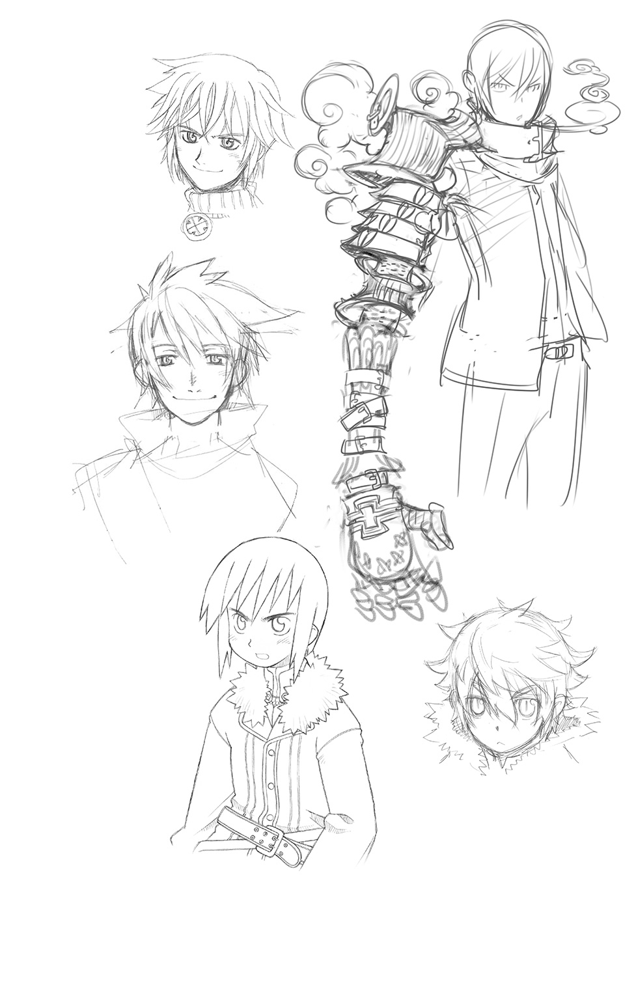
４ 溢れだす源罪 ～Unstable Mind,But...～
リィンバウムの隠された創世譚が、観測者によって勇者たちに紐解かれている間も。
大平原における聖王国と帝国の戦いは、とどまることなく激化していた。
「下種の極みですわね、やり口が」
手負いの兵士たちを追いたて殺していく悪魔らを前にして、ケルマはそう吐き捨てた。
「ま、だからこその低級悪魔なんでしょうけど」
人語を解さぬ連中の知性は、【幻獣界】の犬狼鬼や豚狼鬼といった粗暴な獣人たちと大差ない。欲望に抑制がきかないのだ。
なお質が悪いのは、負の感情をより多く得るために、本能的に獲物をなぶり殺しにすることだった。獲物の恐怖や悲鳴こそが、悪魔たちにとって最高の糧となるのだから。
だから、ケルマは恐れない。恐怖もまた敵の糧となるからだ。
堂々とした胸を張って、殺到してくる悪魔の群れの前へと仁王立つ。
「あなたたち、本っ気で目障りですわよッ!!」
召喚師の武器としては規格外すぎる巨大な籠手を打ち鳴らして、彼女は吠えた。
まさかこのまま、肉弾戦を挑むつもりだというのか。
答えは―――そこに装飾刻印された呪法紋と、散りばめられた【幻獣界】の召喚石のきらめきによって明かされた。
「召喚武装―――【纐血蘭蔓】!!」
前方に突き出した両腕から弾けるようにして飛び出したのは、成人男子の腕ほどの太さをもち、無数の凶悪な棘にまみれた蔦植物であった。
「......ふんッ!!」
恐るべき勢いで伸び続けるそれらを、ケルマは力強く振るって、鞭として叩きつけた。
炸裂した蔦は獲物の肉に逆棘を食いこませて、自ら千切れて大蛇のように絞めあげる。そのまま鋼の硬度にまで達した蔦は、獲物の骨をバラバラに砕いて絶命へと至らせるのだ。
事切れた屍を養分にして咲き誇る唐紅の花々が、戦場を無残な美しさで彩っていく。
これこそがウォーデン家の至宝のひとつ【纐血蘭蔓】―――少ない魔力で多人数を殲滅することに特化させた召喚武装の秘術であった。
「さあ、どんどんいきますわよ！」
二本の鞭を縦横無尽に振るいながら、ケルマは敵に向かって歩を進めてゆく。
「背後は任せましたわよ―――【森の乙女】！」
彼女が最も信頼をよせる金髪の樹木の妖精が、心得たようにその背中を守る。花吹雪の嵐が舞い踊り、かぐわしき幻惑の香りが、近づく者たちの意識を朦朧とさせる。
その目眩ましに守られて、生き残りの兵たちは必死に後方へと逃げてゆく。
「【金の派閥】のケルマ・ウォーデンに助けられたこと、くれぐれもお忘れなきように！」
ちゃっかりとアピールしておくのは今後の商売のため。
彼女のやや強烈な自意識を満たすためではない、と一応はつけ加えておく。
けれども、やられる側からすれば、それは露骨な挑発行為に他ならなかった。
「なに邪魔してくれちゃってるのよ―――お・ば・さ・ん！」
カチンときたケルマが振り向いた先に立っていたのは、同じく顔にめいっぱいの不愉快さをにじませたカシスだった。
「せっかく楽しくパーティしてたのに、水差すなんて、ほんっと信じらんない！」
「あれを楽しめてる時点で、どうやら貴女も相当イカレた感性の持ち主みたいですわね」
皮肉を返しつつ、ケルマは見抜いていた。目の前の小娘が手にしている、不気味な明滅を繰り返す球体こそが、次から次へと悪魔たちを召喚し続ける元凶であることを。
「......ならば、潰してしまうのみ！」
先手必勝とばかりに繰り出された右腕の鞭は、だが、カシスの足下から突如として出現した、禍々しくも巨大な腕によって握り潰されてしまう。
「潰されるのはそっちだよぉ？」
嘲笑うカシスを守るようにして立ち上がったのは、これまでの雑魚とは格の違う風貌と体軀をもつ悪魔たちだった。
「上級......まさか、近衛悪魔!?」
◆
「流石にキツイわね、ガルマちゃん......」
歳かしら、と喉元まで出かかった弱音をのみこんで、ファミィは萎える足に力をこめる。
それを好機と見てとったか、暗殺者たちが包囲の輪を狭めて襲いかかる。
【天魔崩落震】で真っ先に敵の侵攻を阻んだ彼女のもとには、当然のごとくそれを阻止せんとする手勢が殺到していたのだ。様々な範囲を攻撃する術を巧みに使い分けてなんとかしのいできたが、それもそろそろ限界のようだ。
（先にケルマちゃんを逃がせただけでも、よしとしなくちゃね）
こうなることを予想したうえで、ケルマには騎士たちの救援に向かってもらっている。そちらはそちらで楽な戦いではないだろうが、次代の議長として立ってもらうためにも、ここは踏ん張ってほしい。彼女には、それを担えるだけの器があるのだから。
「......お母さまっ！」
飛竜に乗ったミニスがなんとか助けに入ろうとはするが、周囲の敵の召喚師らに邪魔されて、思うように近づけない。もどかしげに見守る彼女の目の前で、ついにファミィの足がもつれた。殺到する凶刃。耳をつんざくようなミニスの悲鳴。
「イヤああああぁぁぁーっ!?」
だが、彼女は倒れなかった。
不意に横合いから伸びた腕が細いその身体をかき抱くと、数多の剣光が宙に躍り、暗殺者たちをまとめて薙ぎ払ってのけたのだ。
つむっていた目を開けたファミィは、自分を救ってくれた相手が何者なのかを理解すると、常の振る舞いからは想像できないような大声で叫んでいた。
「バカじゃないのっ、スフォルトっ!?」
誰かさんにそっくりなその物言いに、ミニスは場違いにも、自分がこの人の娘であると再認識してしまう。
「聖王自らがこんな最前線まで出てきて―――どうするつもりよ!?」
「無論、戦うに決まってるさ。ファミィさん」
かつて身分を知らぬまま、共に旅したお人好しのお坊ちゃんがそこにいた。
「本当に大切なものを守りたいなら、ためらったりするな―――貴女に教わったんだよ」
「バカ......っ。そんな、大昔の......」
「今でも大切な思い出だよ」
そう言って、聖王スフォルトは優しく彼女から手を離す。
光輝く剣を構えたその顔は、再び、一国の王者にふさわしきものに変わっていた。
「聖王スフォルト・エル・アフィニティスである！ 我が領土に土足で踏みこみ、そこに暮らす臣民たちを脅かす帝国の不埒者どもよ―――その無礼の報い、我が【至源の剣】によって骨の髄まで味わうがいい!!」
一刀が振り下ろされたその瞬間、ミニスは確かに見た。
幾百、幾千もの剣影が宙に生じ、帝国軍めがけて襲いかかっていくのを。
数多の剣の源にして、ゆえにその全ての威力を発揮するとされる伝説の魔剣。
エルゴの王の遺産であり、その血を継ぐ者によってのみ召喚される聖王家の至宝だ。
その力が誇張されたものではないことを、敵も味方も一瞬で思い知らされた。
「なんだこれは!?」
突如飛来し襲いかかってきた無数の剣影に、ソルは目を剝いた。
（俺の使う【ダークブリンガー】でも、【誓約者】が使った【シャインセイバー】でもない。もっと次元の違う攻撃だ）
数の多さと動きの精度が違う。ざっと見ただけでも数十はくだらないそれらは、同数の暗殺者や【召喚兵器】を同時に相手取っている。否、むしろ圧倒しつつあるといっていい。
「いったん退がるぞ、トウヤ！」
一刀でロッソたちを牽制し、もう一刀で執拗に纏いつく剣影をさばきながら、トウヤはソルのもとまで退いていく。【転移の門】が開かれて、無色の徒は魔人形と共に姿を消した。
暗殺者たちもまた、個々の判断で逃走していく。遺されたのは命令に従ってなおも前進を続けようとする【召喚兵器】たち。そんな彼らめがけて、剣影の攻撃は集中する。
「なに出しゃばってきてんだよ、老いぼれ聖王が」
悪態とは裏腹に、フォルテの声色は穏やかだった。激戦の中で偽りの仮面は弾け飛び、剝き出しになった眼差しは、援軍として飛来した剣影たちを頼もしげに見つめている。
かつて自分を完膚なきまでに叩きのめしたその威力は、【召喚兵器】を敵に回しても遜色のないものだった。死角に回って急所を的確に攻め立て、楔となって貫いた敵を地面に縫いつけてゆく。のみならず、傷口にとどまり続けることで再生機能まで阻害するのだ。
無尽蔵の写し身を召喚し、自在に使役できる魔剣だからこそ可能な戦い方だった。
「まだ、ぼけっとしてられるような状況じゃないわよ」
こちらは早々に鬼面を外していたケイナが、相棒の背を叩いてどやしつける。
「お父さまに尻ぬぐいしてもらってるようじゃ、アニキとしての面目丸潰れでしょ」
「うげっ、違いねえ」
ある程度の大きさまで解体できれば、再生機能が及ばなくなるのは、過去の戦いで学習済みだった。乱戦状態では至難の業だが、串刺し状態の今なら不可能ではない。
「そんじゃま、最後の仕上げくらいはこっちでやらせてもらいますかね！」
「遂に召喚したか！」
皇帝レイは喜々として立ち上がった。
あれこそが、彼の欲する正統なる後継者の証。
そしてこの先の戦いにおいて欠かすことのできぬ、切り札のひとつとなり得るもの。
（出るぞ、オルドレイク。邪魔する者の始末は全て任せる）
（お望みのままに......）
念話でそう告げると、皇帝はレイムに向き直る。
「あとはお前の好きにやれ、メルギトスよ。存分に弱者たちの怨嗟の声を喰らい、さらなる戦のための力を蓄えるがよい」
「ありがたき幸せ」
銀の揺らめきを残して、虚空に消えるレイ。
跪いてそれを見送った顧問召喚師は、人ならぬ醜悪な笑みを浮かべて呟く。
「遠慮なく好きにさせていただきますよ。ひゃは......ッ、ひゃははははははははッ!!」
それぞれの思惑を乗せて、戦いは最終局面に向かおうとしていた。
◆
エルゴですら不可能なこと―――メイメイが明かした思いもよらぬ真実に、勇者たちは衝撃を受けずにはいられなかった。
「そう、無理だったのよ......ううん、無理になってしまったといったほうがいいわね」
言葉を慎重に選びながら、彼女は説明を続ける。
「そもそも【共界線】というのは、エルゴが意図的にそうあるように作ったものではないのよ」
自らの一部を分かち与えることで、始原のエルゴは世界を創造していった。自身の他には何も存在せぬ虚無の中に有を生み出すには、それ以外に方法がなかったからだ。
けれども、本体であるエルゴから分離させた力は、たちまち虚無に呑まれて拡散していってしまう。存在を保ち続けるためには、常に一定の力を注ぎ続けねばならなかった。
それが【共界線】の元々の役割なのだ、とメイメイは言った。
「臍の緒......みたいなものなのかな」
そうね、と彼女はハヤトにうなずいた。
「エルゴという親とそこから分かたれた子供たちをつなぐ命綱。魔力と情報が循環するのは、その存在が消えてしまわぬよう、守るために必要だったからなの」
「赤ん坊の泣き声だな。ミルクが欲しいとか、眠たいとか、そういうのを伝えるための」
直接こうしてほしいと伝えることができぬ代わりに送られるサイン。そこに明確な意図はなく、漠然とした不満や不安を表現することしかできない。
「そのひとつひとつにエルゴは対処―――できるわけないよな。うん」
言いかけて、ライは自己完結した。あまりにも、きりがなさすぎる。
そうね、とメイメイもうなずいた。
「存在の危機に直結する事態ならともかく、些事の全てに干渉していてはもたないもの」
だから始原のエルゴは、それぞれの世界に己の分身―――【四界の意志】たちを配置して、その行く末を見守る役目を委ねたのである。
そして自らもひとつの世界を選び、リィンバウムのエルゴと名を変えた。
「それでも負担が大きいことに変わりはなかった。生き物たちは増え続けていくし、知恵をつけた者たちは自らの工夫で、自然には存在しなかった品々を創造していったから」
機械という存在が一番わかりやすい例だ。様々な物理法則を複合的に組み合わせることによって、さも生きているかのように動いてみせたりする。
「精巧な機械人形のように、自己成長する意識を獲得した時点で、それはもう魂をもっているのと同じ状態なんだけどね」
万物全てにマナは宿り、そのマナに意識が宿って魂となる。形成される過程こそ違えど、それはひとつの生命であると彼女は言った。生身かどうかは関係ないのだ、と。
「話を元に戻すわね」
繁栄していくであろう世界を維持するため、エルゴたちは相互補完という手段を用いた。
【共界線】同士を関連づけることで【法則】を作り、創造物同士で互いの存在の維持や変化を補完し合うように整えたのだ。
「例えば、火ね。何かを燃やし続ける限りは存在するけど、水と交われば消えてしまう」
だが器という別の存在を仲介させれば、火は消えず、水は湯という別の存在に変わる。
火で焼けば生物としての肉は死ぬが、火加減次第では肉料理というご馳走にだってなる。
自然の摂理や物理化学といった形で我々が知る現象の全ては、そうなるようにとエルゴによって定められたものだというわけだ。
生と死にまつわる魂の巡りの輪も、また然り。
ひとつの世界に魂が密集することによる負荷を軽減するとともに、転生を繰り返すことで魂そのものの強度を高めて、より優れた能力をもつ存在に昇華させることが目的なのだ。
「そうした【法則】の働きは【共界線】に流れる情報に基づいて引き起こされているの」
細かいそれらの積み重ねにより、世界はエルゴに頼らずとも自立できるようになった。
ルーチンワークで処理できる事象の多くは成り行きへと委ねられて、新たに創造された事物に対する最初の関連づけのみをエルゴは行うようになっていった。【共界線】同士のつながりはどんどん複雑化していったが、世界の存在もまた強固になっていくのだから、むしろ歓迎するべきことであると思われた。
「でもね、そこに誤算があったの」
複雑すぎるつながりはしがらみとなり、個々の存在を歪める原因にもなっていったのだ。それは世にある全ての存在が、始原のエルゴという超意識体を源としている時点で、起こるべくして起こってしまったことだったのかもしれない。
「マグナやハヤトが言ったとおり、生き物はみな欲望をもっているわ。今よりもっと上をめざして、自分が今置かれている状況を改善しようと願い、実際に行動もする」
それ自体は問題ない。弱肉強食もまた、エルゴの定めた【法則】のひとつなのだから。
「でも、高き知恵をもつ者たちの欲望は、それゆえに【法則】から逸脱していった」
向上心によって創造された新たな事物が、エルゴの想定していた限度を超えて、世界という存在そのものを傷つけはじめたのだ。
暴走した欲望はやがて、単一の世界に留まるものですらなくなっていく。
「異界の存在たちによる侵攻」
ハヤトの言葉に、メイメイはうなずいた。
自らの世界に欲しいものがない。あるいは余所の世界のほうがたやすく手に入る。
それを知った者たちは、奪い取るという手段を選択した。
理想郷と呼ばれし頃のリィンバウム―――そこに暮らす人間たちは好都合にも、異世界に暮らす彼らと比べて、あまりにも脆弱な存在だったから。
「無論、それをよしとしない者たちもいたわ」
静かなる御魂をもつ【鬼妖界】の龍神や鬼神たちは、むしろそうした外敵からリィンバウムを守るために力を貸したのだという。
「恥ずかしながら......私も、その時この世界にやってきた龍神の一人なのよ」
本人的には思い切ってのカミングアウトだろうが、場にいる者は誰一人として驚いたりしなかった。メイメイ的には軽くショックだったらしく、がくりと肩を落としてしまう。
「ど、どんな龍神さまなんですかっ？」
空気を読んだミコトの発言にすがって、なんとか彼女は立ち直る。
「とうに【鬼妖界】でも忘れられてしまった龍神よ。星の巡りと時の流れが正しくあることを見守り続けていく時量師神」
もっとも、当時の彼女はまだそこに至る途中の生意気な小娘であったという。
「幼稚な正義感を振りかざして、悪い奴らをやっつけてやるぞーって暴れてたわ」
「へえ......」
それはそれとして、と昔話になりそうな流れを断ち切ったのはマグナだった。
「天使たちはリィンバウムの味方じゃなかったんですか？」
「微妙なところね。味方ではあったけど、悪魔への敵対心によるところも大きかったから」
【霊界】における天使と悪魔の対立は、善悪の二元論よりも、むしろ光と闇という相反する属性をもってしまった者同士の敵対心によるところが大きいというのだ。
「戦天使と呼ばれる存在たちは特にそう。悪魔さえ滅ぼせるのなら、周りにどれだけ被害がでようがお構いなしだもの。人間に対する情愛で動いていたわけじゃないわ」
無論、豊穣の天使アルミネや友愛の天使長フェルニルのように、人間のもつ魂の輝きを慈しんで守ろうとした者たちもいるのだが。
「天使は善の存在っていうのは、俺たちの世界だけで通じる思いこみなんだな」
忘れないようにしよう、とハヤトとミコトは互いにうなずきあう。
ともあれ、理想郷は異界の存在たちからつけ狙われるようになってしまった。
「最初は、人間たちが一方的に蹂躙されるばかりだったわ」
成熟した魂をもつ者たちが転生の果てに辿りつく、マナに満ちあふれた理想郷。
そこで暮らす人々は、争うことにあまりにも疎すぎたのだ。
◆
【機界】からは自動化された機械城塞が送りこまれた。手つかずのままだった豊富な資源を奪い取って本国に送るのと同時に、捕らえた人間を生体部品として機械兵士を量産し、侵略の尖兵として利用していったのだ。科学という未知なる技術によって作られた銃火器に対して、ようやく鉄を作り出すことができるようになったばかりの文明が太刀打ちできるはずがない。一方的に狩られる側にされてしまった人間たちは、逃げ惑うしかなかった。
【鬼妖界】からはまず、好奇心旺盛な妖怪変化たちがやってきた。故郷でも人間たちと交流をもつ彼らは概ね友好的だったが、向こうのしきたりに則った振る舞いはこちらでは通用せず、大きな争いを招いてしまうことも多かった。やがて、荒ぶる鬼神や龍神らの助力を得た【鬼妖界】の武将たちが攻めてきたことを契機に、静かなる龍神・鬼神たちも武力介入し、壮絶なる神々同士の合戦が起こる。その巻き添えで死した者たちは数知れない。
【霊界】からは悪魔の群れが押し寄せた。勝手気ままな連中は、徒党を組んで攻めてきたりはしなかったが、ほうぼうで好き放題に暴れ回った。当時はよりマナが豊かであったため魂殻を纏い続けることもたやすく、霊的生命体を滅ぼす方法をもたぬ人間たちは、天使らが遣わす討伐隊にすがるしかなかった。また、まき散らされた【源罪】に影響された者たちは、同朋を傷つけることにためらいをもたなくなってしまう―――憎しみに任せた仲間同士の争い―――悪徳の始まりであった。
【幻獣界】の者たちは、偶然によって迷いこんでしまうことが多かった。
好奇心旺盛な下級妖精たちや、餌場をもとめてさすらう野生動物たちがそうだ。
不幸だったのは、彼らが生来もつ能力も、この世界では脅威となってしまうことだった。
集落を襲った肉食獣が退治されたことで、その祖にあたる幻獣が怒り、界を越えて報復してきたこともあった。【魔獣侵蝕】で歪められた魔獣たちが、昏い欲望を満たすために襲いかかってくることもあった。弱肉強食の掟とはいえ、人間はあまりにも無力だった。
◆
リィンバウムは滅亡の危機に瀕した。
それは即ち、リィンバウムのエルゴ―――始原のエルゴの消滅をも意味する。
「膨大な数に膨れあがった【共界線】と【法則】はね、いつしか、その源であったエルゴにすら影響を与えてしまうようになっていたのよ」
それもまたしがらみだったのかもしれない。断ち切ることは可能だが、その時点で世界は緩慢な滅びに向かうことになる。直接的な干渉こそ途絶えていたが、世界の存在を維持するための魔力は、依然として始原のエルゴから供給され続けていたのだから。
だが放っておけば、世界が負ったダメージは【共界線】を伝播して、じわじわとエルゴを消耗させていくだろう。我々の尺度では無限とさえ思える力であっても、幾多の世界の存在と繁栄を支え続けている以上、目減りしていって当然というものだ。
自らを守るためならば選択の余地はない。全ての【共界線】を断ち切って、世界を捨ててしまえばいいのだ。
だが、始原のエルゴは躊躇した。何故か。
「再び、孤独に戻ってしまうことが耐えられなかったのよ」
自らと対等に語り合うことができる友がほしい。
彼が世界を創り、そこに暮らす生き物たちを生み出した理由は、それだったのだ。
永劫に続く虚無の中で、ぽつんとひとり存在し続けるという孤独。
いくら無限の力をもっていたとしても、何の意味もない。
だからエルゴは、世界を創った。そこに暮らす生き物たちを創った。
意志と魂を定義したのは、可能性を信じたから。
操り糸のままに動く人形では意味がない。自ら思考し、行動し、成長していかなくては。
死してなお、転生の輪を巡って生まれ変わり、魂の輝きを高めていく。
そしていつか、自らと同じ高みまで辿りつき、友として語り合える時がくるはず。
「それが、始原のエルゴが抱き続けてきた願いよ」
途方もない夢だ。未だ叶わぬ、もしかしたら永遠に叶わぬほどの。
それでも、孤独に耐えるためにはすがらずにはいられなかったのだ。
そんな切なる望みをかけてきた世界を、見捨てることなど彼にはできなかった。
我々も含めて創り直せばいい―――四界のエルゴたちはそう諭したが、始原のエルゴはどうしても踏み切れなかった。他の存在を創ることで生じた愛着というしがらみが、皮肉にも、全能であるはずのエルゴをがんじがらめに縛りつけてしまったのである。
だからといって、このまま事態を放っておけば全てが破滅してしまう。
「そこでエルゴたちはやむなく、世界に直接介入することにしたの」
蹂躙され続けるリィンバウムの人間たちに、異界の存在への対抗手段を授けたのだ。
「それが【送還術】よ」
異界の者たちを、強制的に属する世界へと送り返してしまう魔術。
存在の本質たる【真の名】とそこから伸びる【共界線】に作用して、界を越えて生じたしがらみを消し去ることで強制送還するその術は、エルゴが定めた既存の【法則】すらも上書きしてしまう例外的な力であった。下手に扱えば、複数の世界に害を為すほどに。
それでも全てが虚無に還るよりはましだと、四界のエルゴたちは例外を認めた。
効果は絶大だった。
いくら強大な力をもつ存在でも、それを発揮する前に送り還されてしまってはどうしようもない。執念深く再訪する者もいたが、満足な成果をあげられぬまま送還されてしまうループに徒労感を募らせて、次第に諦めるようになっていった。
リィンバウムは破滅の危機から立ち直り、全ては再びうまくいくかと思われた。
「でも......そうはならなかった」
侵略という傷を負った人間たちの心は変質し、以前は乏しかった負の感情を強く抱くようになってしまっていたのである。
一方的にやられて、奪われたままで、それで本当にいいのか。
当たり前に生じた不満は、彼らにさらなる対策と報復の手段を模索させた。
手がかりは【送還術】だった。
送り還せるのならば、逆に呼びつけることもできるのではないか。
だが、それだけでは意味がない。
呼びつけたうえで、従えることはできないだろうか。
異界の者たちの恐るべきあの力を、なんとかして利用できないだろうか。
「【送還術】を授ける際に、エルゴは人間たちに【真の名】の存在とそれを見抜くための方法も伝えていたの。そうじゃなきゃ満足に使うことができないから」
相手の【真の名】に干渉することができれば、絶対的有利に立てる。
そのための方法は、送還の際まれに遺留物として見つかる、多色の宝石を研究することで判明していった。
「もしかして、それがサモナイト石？」
「ちょっと待ってくれ。サモナイト石は無色透明な原石を地下から掘り出して、精錬加工してようやく、属性ごとの魔力を発揮するはずだろう!?」
何気ないミコトの呟きに、マグナが猛然と反論した。召喚師としてしぶしぶながらも学んできた彼からすれば、苦労して身につけた知識をひっくり返されてはたまったものではない。
「それも間違いじゃないわ。というか、成立の過程が違うだけで同じ物なのよ」
サモナイト石と称される物質の正体は、【共界線】からこぼれ落ちた魔力と情報が結晶化したものだと彼女は明かした。
「原石として掘り出されるのは長い年月の間に漏れ出したものが結合したもの。不純物も多く含んでいるから、精錬しないと召喚石として用いることはできないわ」
「そういや、ゲックの爺さんも言ってたな。粗悪品は召喚術には使えないって」
湖地下の精錬プラントでの一件を思い出して、ライはうなずく。
では、もうひとつの過程とはなんなのか。
「【送還術】は【共界線】のしがらみを断ち切る術。切り捨てられたしがらみは消滅するのだけど、強いしがらみは消えさらずに、結晶化してその場に残されることがあったの」
そして当然、そこには【共界線】を循環していた情報の断片も残される。
人間たちはそれを研究することで、送還した対象の【真の名】をより正確に読み取り、直接的に干渉することさえも可能としていったのである。
そして―――【召喚術】が誕生する。
「最初の召喚術はね、今みたいに強制的なものじゃなかった」
対象が同意せねば成立しなかったし、助力の礼に相応の対価を払うのも当然だった。
「ただ、こちら側に連れてくるだけのもの。力を貸してくれるかどうかは交渉次第だった」
それにメリットは、召喚主だけでなく召喚される側にもあった。
「魔力で【真の名】に干渉すれば、その者の潜在能力を一気に引き出すこともできたから」
召喚主と被召喚者。両者が協力することによって、はじめて見えてくる無限の可能性。
それは異界の者同士に友誼をもたらし、共に繁栄していくという夢を抱かせた。
双方が同意した上で【真の名】に干渉する行為は【誓約】と名づけられ、文字どおり、けして違えてはならぬ神聖な誓いとして機能するようになっていった。
「エルゴの王や、ハヤト青年が使ってる召喚術は、この古の流儀に近いものだわね」
複雑な呪文を必要とせず、心と心を通わせることによって成立する召喚だ。
「ただ、全てがそれでうまくいくわけじゃなかった。友誼ではなく絶対的な服従、一方的な道具として利用することを望む者たちだって存在した」
彼らは【誓約】を悪用することで【真の名】に服従の呪いをかけたのだ。
逆らえば魂に苦痛が襲い、解放してもらわぬ限りは元の世界に帰ることもできない。
―――今まで受けてきた我々の苦しみを、今度はお前たちが味わう番だ。覚悟しろ。
―――罪を償って、我らに奉仕し続けろ。元の世界に帰りたいなら決して逆らうな。
具体的な報復の手段を得てしまったことにより、溜まっていた人々の憤懣は爆発した。
こんなやり方は間違っていると主張する者は、裏切り者として共に迫害された。
◆
（ひどいよ......そんなの......）
やりきれぬデュウの呟きは、ミコトの思いと同じだった。
「エルゴはどうして、そんなひどいことを放置してしまったんですか？」
「止められるだけの力が、まだ戻っていなかったのよ」
メイメイは悲しげに答えた。
長きにわたる争いによって、数多の世界はどれも疲弊しきっていた。エルゴは不安定になった世界を修復することに努めていて、そこに暮らす者たちに起きつつある変化にまで気を回すことができなかった。気づいた時には、もはや手遅れだったのだ。
「それに【送還術】も【召喚術】も、エルゴの【法則】を書き換えて作用する術だった」
【共界線】を流れる情報は何度も改変を加えられ、複数の世界にまたがるしがらみは、芋蔓式に拡大を続けていった。自らが管轄する世界の外に伸びたものも含めて、その全てを把握することはエルゴにも不可能になってしまっていた。
「その結果として―――再び、異界の者たちはリィンバウムに侵攻するようになった」
今度の異界の者たちには、正当な報復という大義名分があった。
召喚した同胞たちを奴隷のように従えて、便利な道具として利用する。
そんな人間どもの傲慢な振る舞いを見過ごせば、いずれ自分たちの世界にまで攻めてくるに違いない。これは、忌まわしき【誓約】に縛られた仲間たちを救うための戦いである。
労働力として安易に召喚され続けた【幻獣界】の亜人たちを筆頭に、激しい憤りをもって攻めてくる面々はいつまでも絶えなかった。いくら【送還】してもきりがないほどに。
自衛手段として伝えられた【送還術】は、個に対しては強力無比な反面、同時に複数を相手取ることに向いていなかったのだ。
ゆえに、人間たちは【送還術】を捨てて【召喚術】に傾倒していくことになる。
より強力な【誓約】によって、より強大な存在を召喚して、一気に敵を殲滅すればいい。
送り還しても戻ってきてしまうのなら、もう殺してしまうしかないではないか。
「ひどい有様だったわ......」
目を閉じて、当時を思い返すメイメイの声は震えていた。
「互いに正義だと言い張って深く傷つけあうことの繰り返し。【誓約】で服従させられた同胞同士が殺しあったり、和解することを望んでいた者たちも巻き添えになって......」
それがまた、さらなる報復という惨劇を招くのだ。何度も何度も、繰り返して。
そんな長きにわたる騒乱は、邪な思いを抱くものたちにとって格好の舞台となった。
悪魔たちが負の感情を求めて闊歩し、人間同士にも争いの火種を蒔いていった。
遂には、名だたる悪魔の王までがリィンバウムに食指を動かし始める。
「......メルギトスのことだな」
マグナは苦い顔で、因縁の相手の名を呟いた。
「力ある存在であればあるほど、属している世界とのしがらみもまた大きくなる。それを断ち切ってまで界を渡るのは、割に合わないほどの負担だったの。だけど......」
召喚術を利用すれば、そのリスクはゼロになる。
奸計と虚言の悪魔王はそのためにクレスメントの一族を誘惑し、力を与える代償として召喚の門を開かせようとしたのだった。召喚師の裏切りによってそれは未遂に終わり、怒り心頭に発したメルギトスは復讐のためだけに襲来するのだが、それはまた別の話である。
「エルゴたちは困惑したわ。どうすれば事態が収拾できるのか、必死になって考えた」
召喚術という概念を世界から消し去ってしまえば、憎しみの連鎖は止まる。
だがそれは同時に、原型となった【送還術】の消失を意味する。
抑止力までなくなってしまえば、また一方的にリィンバウムが蹂躙されるだけだ。
それでは何の意味もない―――それに、はじまりの召喚術には無限の可能性があった。
異界の者同士が助け合って繁栄していく未来。それこそが本当に目指すべき世界の在り方であるはずなのだ。進む先を間違えてしまっただけで、けしてこの力そのものが害悪というわけではない。正しく導いてやれば、きっと世界はより高みに向かっていく。
そして、彼らは再びの介入を決意した。
絶対なる力をもつ【界の意志】の代行者をリィンバウムに遣わして、愚かな争いを続ける者たちを排除し、再びこの地を理想郷にふさわしき姿に生まれ変わらせようとしたのだ。
「エルゴの王......伝説の王国を統治したという最初の【誓約者】......」
その二代目に選ばれたハヤトは、どうしてもメイメイに尋ねたかった。
「どんな人だったんですか？」
返ってきたのは拍子抜けするような答えだった。
「どこにでもいる若者よ。辺境の村でのんびりと羊を飼ってて、幼馴染みの女の子に頭が上がらないような、のんきで気のいい若者だった......とエルゴ碑文には書かれてたわね」
旧友が著した書物の内容をそらんじる彼女に、いくつかのため息が聞こえてきた。
「まあ、大体あってるわ。でも、意図的に触れないでおいたと思われる部分もある」
「え？」
「大したことじゃないといえば、大したことじゃないのよ」
そう前置きしたうえで、メイメイはしれっと言った。
「初代の王はね―――リィンバウムの人間じゃないの。当然、四界に属する者でもない」
充分すぎるほど、大したことのある秘密だった。
「じゃあいったい、彼はどこからこの世界にやって来たんですか!?」
「それを君が言っちゃあダメでしょうが、青年♪」
「あ......」
ハヤトは気づく。自分自身もまた、その例外のひとつだということに。
「レゾンデウム―――でしたよね？」
代わって言葉を継いだのはミコトだった。
「俺やハヤト先輩たちが暮らしてた那岐宮市―――ううん、それを含めた世界全体のことを指し示している言葉なんでしょう？」
正解よ、とメイメイは笑った。
「レゾンデウム......初めて聞く言葉だけど、どこかリィンバウムと響きが似てるな......」
レックスの呟きに、そりゃそうだわよ、と彼女は補足した。
「レゾンデウムは六つめの異世界。始原のエルゴが四界のエルゴたちに内緒で創造した、全ての世界の要素を併せ持った、もうひとつの理想郷なのよ」
（全ての世界の要素を併せ持った......）
ミコトの中に長くあった疑問はそれで氷解した。自分の暮らしていた那岐宮市とリィンバウム。異なる世界同士であるはずなのに、なぜか微妙に被っていた部分の数々。
「原型はむしろ、こっちだったんだな」
ハヤトもまた同じ結論に達したらしい。
（俺たちの世界も、無関係じゃ終われないってことなんだろうな）
初めて出会った時、彼女はたしかにミコトに言ったのだ。
貴方が暮らしていた地球も含めた、六つの世界の存亡にまつわる話をしたい―――と。
◆
「ねぇ、いい加減くたばっちゃいなよォ？ お・ば・さ・ん！」
「や、かましいですわよ......っ、小娘ぇ......っ！」
嘲笑うカシスに、ケルマは意地だけで吠えた。その周囲には、なおも十重二十重に群がる悪魔たちの群れがある。
魔王たちの側近として仕える近衛悪魔を筆頭に展開されたそれは、もはや歴とした悪魔の軍団であった。ただし、それを率いるのは魔王ではなくカシスだ。
「うふふっ、最高の気分♪ スカッとしてぇ......なぁんでもできちゃいそぉ！」
あの悪魔王の言ったとおりだった。
溢れだす悪魔たちを手なづけていくことなど、セルボルトの秘術とこの玉の魔力を用いればたやすいことだった。父オルドレイクさえ凌駕する数の悪魔たちを、今の彼女は支配している。その気になれば、魔王さえも従えられるかもしれない。
（......試してみちゃおっかなぁ？）
そうすれば彼女は文句なしの一番になれる。あの尊大ですかした皇帝なんかに頼らずとも、この世界を破壊し尽くすことができる。父の理想を現実にできるのだ。
「そうと決まったらますます邪魔よねぇ、コイツ！」
支配者の怒りのまま、悪魔たちはいたぶるのではなく、殺すために動きだす。
絶望と共に、ケルマは絶対の死を覚悟した。
「キエエエエエエエエエエエエエェェェェェェェェェイッ!!」
そんな彼女の弱気を断ち切ったのは、雄々しく響く裂帛の気合いだった。
銀に閃く刀剣の軌跡と、そこから生じた不可視の衝撃が、躍りかかる悪魔らを真一文字に切り裂いてのけたのである。
「遅くなってすまぬでござる、ケルマ殿」
膝をついたケルマは、自分をその背に庇って立つ侍の姿を見た。
「カザミネさま......っ」
最愛の男が、再び自分の危機を救ってくれた。
その幸せに、彼女の目から涙があふれる。
「ふざけないでよッ!? なんで、あんなデタラメ......っ!?」
居合いでござるよ、と【鬼妖界】の剣客・カザミネは、悪魔使いの娘に言った。
「剣撃に己が意を研ぎ澄まし、威と成して数多のものを断つ―――未だ至らぬこの身なれど、乾坤一擲の想いを一太刀にこめて振るうならば、邪心ごときに屈することなし」
「......なぁんだ。つまり、今のは連発できないってことじゃん」
だったら、何度でも繰り返すだけのこと。
「だが、させぬ！」
弾かれたような勢いで、カザミネは悪魔の群れの只中に飛びこんでいた。
獅子奮迅の動きで愛刀を振るい、群がる悪魔を斬り伏せてゆく。目まぐるしいその動きに火線はついていけず、いたずらに同士討ちだけを繰り返すありさまだった。
「いやはや、すごいものだね。サムライの強さは」
「ずっと焦れていましたからねえ、彼。大切な女性を一人で戦場に向かわせてしまったって。お仕事途中でほっぽり出して、必死に駆けつけてきたんですもの」
そう答えながら、座りこんでいたケルマに手を差し延べたのはパッフェルだった。
「女冥利につきちゃいますねぇ、ケルマさん♪」
「パッフェル......それに、貴方は......」
「聖王さまが出ていっちゃったお城を、後生大事に守ってても仕方がないでしょ？」
【蒼の派閥】の総帥エクス・プリマス・ドラウニーは、悪戯っぽい笑みを浮かべつつ、孤軍奮闘してくれた彼女をねぎらった。
「大臣たちのお守りはギブソンたちに任せてきた。彼らなら上手くやるだろうさ」
それに―――と、彼は遠方に目をやる。
「どうやら皇帝もお出ましのようだ。一騎打ちで決着がつくのなら、これ以上無駄に犠牲を出す必要もないしね」
だから自分はここに来たのだ、とエクスは言った。
「あの子を止めよう。破滅するとわかってて、見捨てるわけにはいかないよ」
視線を転じたその先には、思うようにいかぬ事態に激昂するカシスの姿があった。
「どいつもこいつも、どいつもこいつも、どいつもこいつもおおおォォォォーッ!!」
毒々しい魔力の輝きと共に、さらなる悪魔たちが溢れだす。
まるで彼女がもてあましている怒りを、そのまま具現化したように。
「カザミネさんだけじゃきつそうですし、ちょっと私も行ってきますね」
「待って。君にも【憑依】させておくよ」
そう言ってエクスが召喚したのは、【鬼妖界】の仙境に棲む猿神だった。百里を自在に駆けるその脚力は、今のカザミネと同じように神速の身のこなしをもたらす。
けして高度な術ではないが、使い手の力量によって効果が段違いに高められていることにケルマは気づいていた。さすがは【蒼の派閥】の総帥といったところか。
「なるだけ急いでくれ、パッフェル。もう、あまり猶予はなさそうだ」
「かしこまりました。昔のやり方で、久々に暴れてきます」
ドン引きしないでくださいね、と断りを入れてから、彼女は短剣を手に走り出す。
悪魔らに向けるその目は、かつて【茨の君】と呼ばれた暗殺者のそれに戻っていた。
「破滅って......？」
「薄々と君も気づいてはいたんだろう」
問いかけるケルマに、エクスは真顔で言った。
「このままだとあの子は、完全な悪魔の道具に堕とされてしまうことになる」
◆
「恐ろしいほどの威力だな。流石は、先代の王が用いたという伝説の魔剣よ」
淡々と賛辞を述べながら、皇帝レイは聖王スフォルトの眼前に姿を現した。
「救世皇帝などと自称する、痴れ者は貴様か」
「理解はいらぬ。ただ、我は現実を示すのみ」
白亜に輝く剣を抜き放って、レイは構える。
「見知らぬ剣だな」
聖王は眉をひそめた。世の全ての剣の威力を従える至源の剣の現契約者たる彼が、把握していない剣などあるはずがないというのに。
「覇王の剣―――今は亡き、魔剣鍛冶師ウィゼルが鍛えし逸品だそうだ」
その原型は【抜剣者】が用いる魔剣を基礎とし、【誓約者】が託されたサモナイトソードとも兄弟めいた因縁をもつ。
「知らぬのも無理はない。これは貴様が盗みとったその剣と同等の品。【界の意志】の【法則】を超越したところにまで作用する魔剣のひとつだ」
「なるほどな......得心した」
彼自身も、かつて試したことがあったのだ。
全ての剣の始祖たる至源の剣は、果たして自身の剣影を召喚できるのか―――と。
答えは、やはり否だった。その時は、当然だなと苦笑してすませてしまったが。
「例外はひとつきりではなかったということか」
皇帝の口ぶりからして、他にも同種の魔剣は存在するのだろう。
そして同格の品というそれらには、至源の剣の支配も及ばぬようであった。
「やれやれ......さんざん誇ってきた聖王家の威光に、ケチがついてしまったか」
「恥じる必要などない。その剣の特性は唯一無二にして、その価値は揺るがぬ」
こうして対話をしている間でさえ、剣影たちは独自の判断で敵を攻撃し続けているのだ。
【共界線】から剣と使い手の記憶を引き出し、一時的に具現化させて操る能力。
「ある意味では―――俺の【再誕】に似ているな」
掌を上にして伸ばした皇帝の左手。そこに埋めこまれた【制錬石】が赤紫の魔力の輝きを発すると、それに照らし出される影絵のように、ゆらゆらと何者かが実体化していく。
「中途半端ではあるが、今はこんなものでよかろう」
皇帝の足下に傅くようにして現れたのは、影法師とでも呼ぶべき者たちだった。
「影法師と俺は呼んでいる。貴様の操る剣影と原理は同じだ」
手近な亡魂たちを、最低限の【再誕】の力で半実体化させた存在。
オルドレイクやメルギトスのような完全体ではないせいだろう。彼らは絶えず低い呻き声をあげつつ、崩壊しようとする己の肉体を懸命に押しとどめようとしている。
（なんて、おぞましい能力......）
初めて目にした皇帝の異能に、ファミィは身震いを覚えた。彼が核とした亡魂たちは、この戦場で無念に倒れた両軍の兵士たちのそれであり、深手を負った最後の姿をそのまま再現されていたのだから。
「【再誕の制錬者】の御業、確かに拝見させてもらった」
この時、聖王は理解した。
眼前の若者が、エルゴの王の後継者を望むに足るだけの、恐るべき異能の持ち主であるということを。そして同時に、なんとしてでも倒さねばならぬ世界の敵であることを。
（この者は、壊してはならぬ世界の理を破壊してしまう。生者と死者の間境を踏み越えて、多くの魂を歪める行為を平然と続けてゆくだろう）
それはもう、このリィンバウムだけにとどまるような問題ではない。
転生の輪を乱すことで、界を巡る魂の循環を破綻させてしまいかねぬ暴挙だ。
「......では、そろそろ始めるとしようか」
「理解が早くて助かるぞ」
聖王と救世皇帝―――国家を背負った者同士が、恐るべき魔剣を手に対峙したのだ。
直接決着をつける以外の道筋など、もはやあり得なかった。
◆
それはおそらく、後に伝説となるような戦いであっただろう。
幾百、幾千の剣影を同時に繰り出して、皇帝めがけて肉迫する聖王。
対する救世皇帝は、影法師を容赦なく盾として使い潰してゆく。
中途半端な形での再誕は、最初からこれを意図したものだったのだ。
ぶつかり合う二人の間には、甦ってはまた殺される亡魂たちの怨嗟の呻きが絶えることなく響き渡り、戦場を圧して余りあるほどの畏怖で、居並ぶ者たちの身をすくませた。
間断なく繰り返される【再誕】の行使によって【共界線】は千々に乱れ、その影響により、【召喚兵器】たちでさえも機能不全に陥ったのだ。
剣勢はどこまでも互角だった。
攻守は目まぐるしく逆転し、見守る者たちは息を呑むより他はない。
だが、たったひとつだけ。
両者の間には致命的な差があった。
（このままじゃ、いけない......）
誰よりも間近で二人を見守っていたファミィは、気づいてしまったのだ。
聖王スフォルトの息が、次第にあがってきていることに。
恐るべき魔剣を自在に使いこなすことができても、彼はもう老境へとさしかかる身。
拮抗した実力をもつ相手との戦いで、その老いが弱点となるのは当然だった。
（お願い......もう一度だけでいい。今度こそ私に、彼を守ってあげられる力を......）
尽きかけた魔力を懸命にふりしぼって、ファミィは召喚術を唱えようとする。
だが―――果たせない。
「無粋な真似はやめておくがいい、ファミィ・マーン」
「オルドレイク・セルボルト......」
影と共に彼女の前に立ちはだかったのは、あの時より風格を増した破戒の召喚師だった。
先代の聖王を巡る暗殺事件の実行犯のひとりであり、かつて彼女とスフォルトが戦ったことのある仇敵。【蒼の派閥】の若き二人の召喚師らの助けがなければ、殺されていた。
「これは、この世界の行く末を決める聖なる戦なのだ。俗人である我らが手を出すことはまかりならぬ」
有無を言わせぬその物言いは、同時に彼もまた手出しはせぬという明言でもあった。
「好いた相手を想う気持ちは理解できる。が、なればこそ見守ってやるがよい」
「他人に情けをかけたことのない貴方の口から、そんな言葉を聞くとは思わなかったわ」
「お互い、もうあの頃とは違う。知らなくてよいことも、多く知ってしまったはずだ」
「............」
召喚石を握りしめていたファミィの手から、ふっと力が抜ける。
自らが信じた王の戦いを見守るオルドレイクの眼差しは、【再誕】によって取り戻した活力をもってしても埋めきれぬほどの寂寥感に満ちていた。
そして―――決着の時が訪れる。
「よくぞ、ここまで戦った。聖王の名が伊達ではないことを存分に思い知らされたぞ」
汗みずくになったその顔を手の甲でぬぐって、救世皇帝レイはそう言った。
その眼前には、剣にすがりつくようにして、なおも立ち上がろうともがき続ける聖王の姿があった。けれどその肩は深々と切り裂かれて、もはや魔剣を振るうことは適うまい。
それでもあがく姿はけして無様なものではなく、むしろ王としての責任を最後まで全うしようとする誇り高き行為と思えた。
「正直、殺すには惜しい」
首をはねてしまえば、簡単に決着はついただろう。
だが、レイはそれをしなかった。
「我が軍門へと降れ、聖王スフォルトよ。臣下として、治める国ごと我に仕えよ」
信じられぬといった顔をする聖王に、皇帝は淡々と告げた。
「我が意は力による征服のみにあらず。いかなる困難にも曲がることなき強き意志。それを現実として為し遂げられるだけの力。このふたつを兼ね備えた者たちをより多く見いだしていくことこそ、この世界の未来にとって何よりも優先されるべきことなのだ」
そこに勝者の驕慢はなかった。あまりにも真摯な願いだけがあった。
「............」
長き沈黙の末、敗者は問うた。
「何のためにそれを求めるのか、皇帝よ」
「未曾有の災厄に対し、この世界をひとつにして立ち向かうため」
迷いなく、救世皇帝は答えた。
ふう、と聖王は息をついた。
「認めるしかないようだな。同じ王として、私は貴方の強さには及ばぬ」
戦の勝敗は決した。聖王国は敗北したのだ。
「個人的には、貴方の助けとなるのも悪くはないと思っている」
だが、彼は聖王なのだ。
聖王国の象徴として、民たちを守る最後の盾として、その役目は捨てられない。
「貴方が私と戦った目的は、この至源の剣なのだろう？」
エルゴの王の名を継ぐ者として、その遺産を望むのは当然のこと。
けれども、聖王に連なる者として、それを譲り渡すことだけはできない。
「力を以て、奪われるがいい。貴方の中に流れる血が真にエルゴの王に通じるものであるならば、新たな主人として必ず剣は応えてくれよう」
残念だ、とレイは呟いた。
その眼差しには、隠しきれぬ孤独が滲んでいた。
純白の刀身がゆっくりと振り上げられる。
覚悟を決めた聖王は、座してその首を差し出す。その刹那―――。
世界が狂った。
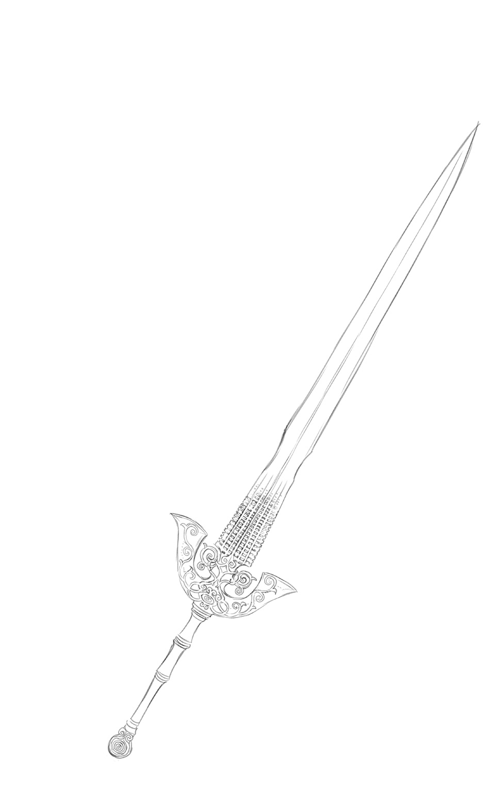
５ 狂界戦争 ～Di-Elugo War～
エルゴの王に選ばれた人物は、【名もなき世界】のひとつである【地球】から召喚された赤ん坊だった。その理由はふたつあるという。
「さっきも言ったとおり【地球】というのは、始原のエルゴが既存の五つの世界の要素を組み合わせて創った世界。その結果として【地球】の人間は、すべての召喚術の属性を生まれながらに併せ持つことができたのよ」
全てのエルゴの力を託される代行者として、これほど適した存在はない。
「じゃあ、俺が最初から全部の属性の召喚術を使えたのも？」
「貴方が【地球】の人間だったからよ」
改めてその理由を説明されて、ハヤトは納得せざるを得なかった。
「無論、その素質にも個人差はあるわ。全ての属性を用いることができるからといって、全員が強力な召喚術を使えるわけじゃないの」
「ああ、レナードさんがそうだったっけか」
「俺の召喚術がへっぽこなのも、そっち生まれのクソオヤジのせいってことか」
マグナはうなずき、ライは憤慨する。
「そう言わないの。全ての属性が使えるってこと自体が規格外なんだから」
複数の属性をもつということは、その魂が単一の世界に縛られていないという意味でもあるのだという。
「もうひとつの理由がまさにそれね。どの世界の存在でもないからしがらみを持っていないし、どこかの世界だけに傾倒することもない」
「でも、赤ん坊の状態で連れてきたとしてもリィンバウムで育つわけでしょう？ 結局、リィンバウムへのしがらみや愛着が湧いてしまうんじゃないですか？」
レックスの疑問はもっともだったが、それは問題ないとメイメイは言った。
「もともと、リィンバウムを救うために選ばれた存在だからね」
「ああ、そうか」
「むしろ【地球】で育つことで、向こうとのしがらみが強くなることのほうを始原のエルゴは嫌ったの」
あちらの暮らしに慣れているほど、こちらの暮らしに馴染むまで時間もかかってしまう。
物心つかぬ赤ん坊ならば、その点、問題ない。
「それに【地球】の存在は、四界のエルゴたちに秘密にされていたからね。あくまで例外として、リィンバウムにそういう資質をもつ人間を創造したって形にしておきたかったっていうのもあったんじゃないかな」
「事情はどうあれ、あんまり気持ちいい話じゃないですね」
自らの境遇と重ねて、ミコトは苦い顔をした。世界を守るためとはいえ、ひとつの生命を便利な道具のように扱うのは、やはり心情的には受け入れがたい。
「否定はしないわ。責められても仕方のないことだって、当時の私も思ったもの」
実際、経緯を聞かされた時には、始原のエルゴに食ってかかったという。
当の本人が恨みはしないと言い切ったから、かろうじて抑えたのだ。
「エルゴは完璧な存在なんかじゃないんだって、その時につくづく思い知ったわ」
諦念を装った彼女の物言いの中に、未だくすぶり続けている怒りを感じとって、ミコトはそれ以上なにも言えなくなった。
「じゃあさ、ハヤトはなんなんだ？ 赤ん坊じゃないのに【誓約者】に選ばれてるだろ」
素朴な疑問をライは口にした。
「そこの彼を二代目として選んだ時は、緊急措置の意味合いが強かったの。結界の損耗状況もだけど、なにより召喚時の事故のせいで、【霊界】のエルゴの欠片が彼の体内に取りこまれてしまっていたから......」
適性があったことを幸いとし、試練を与えることによってふさわしき者かどうかを確かめたわけだ。もし不適切と判断されていたら、即座に欠片を引き剝がされていただろう。
「その場合、俺はどうなってたんだ？」
当時は考えもしなかったことを、ハヤトはあえて尋ねた。
「殺されたりはしなかったと思うけど、使えてた力は全部なくなっちゃうから......」
後の成り行きを見る限り、結局どこかで命を落としていた可能性は高いだろう。
少なくとも元いた世界に帰ることは、絶対に不可能だったはず。
結果論でしかないが、やはりこれが最良だったのだろう。
ともあれ―――エルゴの王は選ばれた。
エルゴたちは彼に自らの力の一部を欠片として託し、各々の守護する世界に対して影響力を振るうことを認めた。それは新たな【法則】さえ創造しうる力であり、その気になれば【召喚術】という概念を完全消滅させることも可能な、まさに代行者にふさわしき絶大な力であった。
だが、彼はそれをいたずらに振りかざしはしなかった。
攻めてくる異界の者たちと正面から対峙し、なんとか言葉で説得しようと試みた。
互いのものを奪い合う人間たちの間に入って、譲りあうことはできないかと諭した。
「大半は無理だったわ。最後は彼が力を振るうことで、強制的に終息させるしかなかった」
だが、全てが無駄だったわけではない。
真摯な彼の言葉に胸うたれて、その姿に夢を託してみようと思う者たちも現れた。
「メイメイさんも、その中の一人だったんですね？」
そうよ、と彼女はレックスの言葉を認めた。
「はみ出し者はぶん殴って言うことを聞かせるしかないんだって荒れてた私を、あの人は叱ってくれた。知らず知らずに和魂を忘れて、荒魂に走りかけていた私を、必死になって止めてくれたの」
以来、彼女は彼の夢にくっついていくと決めた。
時として危なっかしい彼を守るため、自称・護衛獣として常に側にいたのだ。
王が築く未来を支えていくのだ、と参謀役を引き受けた召喚師ゼノビス・アドベックといがみあったりもしながら、二人三脚で数えきれぬほどの困難に立ち向かっていった。
「楽しかったなあ......うん......」
それはきっと、彼女にとっての黄金期だったのだろう。
ここにいる勇者たちが仲間たちと過ごしてきたのと同じく、苦しくもあるけれど濃密で幸せな時間。
「ひたってるトコ悪いんだけどさ。続きはまた今度にしときなよ、メイメイ」
呆れ顔でつっこんだのはルチルだった。
「ぶっちゃけ残り時間、そんなに多くはないんでしょ」
「ああ、うん......そうね」
コホンと咳払いしてから、メイメイは追想から帰ってきた。
少しずつ、本当に少しずつではあったが、彼の努力は報われつつあった。
あらゆる世界の仲間たちが共存共栄できる、真の理想郷。
その夢を目指して共に戦う同志たちは増えてゆき、彼はいつしか【誓約者】と呼ばれるようになった。
異界の存在たちと友誼を結び、その信頼の力によって古の召喚術の数々を行使する。
【至源の剣】の威力と共に、彼はリィンバウムの救世主として多くの人々に認められ、本物の王としてこの世界を導いてほしいと願われるだけの存在になっていく。
だが、それでも異界の侵攻は終わりはしなかった。
長き年月をかけて積み重ねられてきた怨恨と報復の連鎖は、誠実なる勇者の心だけでは覆しきれぬほどに重く、もはや強引な力をもってしか収められぬものになっていたのだ。
それでも彼は諦めなかった。無限に続く戦いを止めようと、身を尽くして働いた。
「でもそれは―――逆効果だったのよ」
そう言ったメイメイの声は、ひどく絶望した者ゆえの、疲れを隠しきれていなかった。
【共界線】は万物と【界の意志】をつなぎ、相互に魔力と情報を循環する。
対象が抱いた様々な感情もまた、情報として流れる。喜怒哀楽、正負の区別なく全て。
ひとつひとつは微量なものであっても、集まれば気の遠くなるほどに大きな塊。
それをエルゴは延々と受け止め続けていく―――はずだった。
「限界がきたのよ」
言われてみれば、至極当然の結論。
「繁栄と共に肥大化し、複雑化していく【共界線】は、エルゴの許容量を超えてしまったの」
魔力を供給し続けることはなんとかできても、送られてきた情報の全てを把握管理することができなくなっていた。異界の者たちのリィンバウムへの跳梁を止められなかった時点で、その兆候はもう出ていたのかもしれない。
それだけなら、まだよかった。
「情報の中に含まれる負の想念が、すさまじい勢いで膨れあがっていたの」
眠い、痛い、ひもじい―――個々に生きるだけだった頃にはその程度であったものが、より多くの他者を認識するようになるにつれて、一気に多様化していったのだ。
はっきりとした意思伝達手段をもつ存在であるほど、その傾向は顕著だった。
妬み、そねみ、恨み―――他者と比較することによって初めて知る、格差がもたらした様々な怒りや嘆き。多くは互いにぶつけ合うことによって自然に昇華されていったが、属する社会が複雑化すればするほど、それも難しくなっていく。
心の中に押しとどめ、個々にねじ伏せていくしかない。
そうしたよどみは【共界線】からじくじくと滲み出して、行き着く先にある【界の意志】にまで到達してしまう。
無論、対応はされていた。押し寄せる負の感情たちは、エルゴのもつ自浄作用によって中和されることになっていた。だが、それもまた一気に限界値を超えてしまったのだ。
あまりにも長く続いた戦いの日々が、そうさせてしまったのだ。
「あふれた負の想念は、エルゴ自身を侵しはじめたわ」
穏やかに世界を見守っていたはずのエルゴたちが、次第に苛立つようになっていった。
互いの非を責めるようになり、他世界の繁栄をねたましく思うようになっていった。
「見守る世界の住人たちの振る舞いを、そのまま鏡に映し出したかのようにね」
止めることのできぬ自身の変化に、エルゴたちは動揺した。
その焦りが濁った魔力となって、今度は逆に【共界線】を通じて世界中に伝播していく。それがまた生き物たちに悪影響を与えて、さらなる負の想念を生み出してしまう。
「悪循環じゃねえか......」
ライの呟きは、その場にいる全員の思いの代弁だった。
「巡り巡って膨れあがる負の想念は、次第にエルゴたちを追いつめていった」
メイメイの言葉を聞きながら、レックスは思い出す。
【核識】となって島中の負の感情を浴び続けたハイネルが、最後に辿った末路を。
「エルゴたちは......少しずつ、狂っていったんですね......」
外からの悪意がそうさせたのではない。
内なる悪意の蓄積によって、【界の意志】は【狂える界の意志】と化していったのだ。
「無論、当時の私たちには、そんなことが起きているなんてわからなかった」
ある日突然、王は【四界の意志】たちから告げられたのだ。
もう守らずともよい。この世界は失敗作である―――と。
「全ては【共界線】のせいなのだ、と彼らは言ったわ」
【共界線】があるからこそ、軋轢が生まれる。
あまりにも近くなりすぎた世界は、互いに毒となって害を為してしまうのだと。
だから、彼らは決めたのだ。
「全ての源である理想郷を破壊することで、しがらみの全てを断ち切り、それぞれに自由な世界を創っていこう―――と」
「ちょっと待ってくれよ!?」
それっておかしいだろ、と叫んだのはマグナだった。
「そもそもリィンバウムを守ろうとしたのって、この世界が壊れたら他の世界も連鎖して消滅してしまうからだろう？」
「そのとおりよ」
「だったら、どうして真逆の結論になるんだよ!?」
理想郷の破壊は、それを守護するリィンバウムのエルゴ―――すなわち始原のエルゴの抹殺を意味する。そして全ての源である始原のエルゴが消滅すれば、四界のエルゴたちも彼らの守護する世界も、追って消滅してしまうのは明白だというのに。
「だから、狂っているのよ」
メイメイは穏やかに繰り返した。
「そんなこともわからなくなるほどに、エルゴたちはおかしくなってしまっていたの」
「そん、な......っ」
聞いているほうがおかしくなってしまいそうな絶望感だった。
「オルドレイクが言っていたのは、このことだったんだな......」
彼が常軌を逸した行動に向かわざるを得なかった理由が、今のレックスにはわかるような気がした。
「知らなきゃよかったよ、こんな真実......」
ハヤトは呻いた。自分が二代目【誓約者】として今までしてきたことが、足下から崩れていくような思いだった。
「......始原のエルゴはどうだったんですか？」
重苦しい沈黙を破ったのはミコトだった。
「四界のエルゴたちが自分を滅ぼそうとしていることを知っていたんですか？ そもそも、全ての源である彼は、ディエルゴになってはいなかったんですか？」
知っていたわ、とメイメイは答えた。
「知っていてもどうすることもできない自身を嘆いていた。全てが最初から過ちだったのかと悔いて、ひどい絶望の中にあったわ」
狂ってしまったほうがいっそ楽だったのかもしれない。それほどに深い嘆きだった。
「四界のエルゴたちは王に命じたわ。授けた力を用いてリィンバウムを破壊せよ、と」
王は拒んだ。当然だった。
彼は理想郷を創るため戦ってきたのであって、破壊するため立ち上がったのではない。
「当然、エルゴたちは激怒した。王の中の欠片に【共界線】から干渉することによって、彼を操り人形として、強制的に世界を滅ぼす走狗にしようとした」
だが、できなかった。
「王の力は、そうした【法則】すら書き換えることができるほどのものだったから」
欠片との【共界線】を断ち切ることで、王は四界のエルゴたちの呪縛から脱した。
意に沿わぬ行動をとったばかりか、与えた力を強奪される形となった四界のエルゴたちは激怒し、なんとしてでもリィンバウムを滅ぼすと決めた。
「そして【四界の意志】たちは、直々にそれを為すことにしたの」
各々のエルゴに率いられて迫り来る四界の軍勢たち。
それは今までの戦いが、児戯に過ぎなかったと思わされるほどに過酷なものだった。
「それでも......王は立ち向かった」
まだきっとわかり合える方法はあると信じて、全てを敵に回して戦った。
そんな彼の必死な姿は、絶望していた始原のエルゴにも届いた。
「始原のエルゴは王に味方した。彼が信じた理想郷の夢を一緒に見たいと願ったの」
四界のエルゴを滅ぼすことはできない。滅ぼせば、属する異界もまた消えるから。
だから、王たちは【結界】を張ったのだ。
四界のエルゴたちがもうこれ以上、直接リィンバウムに干渉できぬように。
【共界線】と共に負の連鎖を断ち切ることで、彼らが再び聡明な心を取り戻してくれることを信じて。
王の中にある四界のエルゴの欠片を要とすることで、それは完成した。
異界の者たちが襲来することはなくなり、ようやくリィンバウムに平穏が訪れた。
人々は王を讃え、彼こそ伝説の英雄だと賛美した―――何も知らぬが故に。
「王はどうして、本当のことを言わなかったんですか!?」
メイメイは、目を閉じて首を横に振った。ぽろぽろとその睫毛の奥から涙が滴った。
「言えるわけがないじゃない......っ」
この世界が失敗作として、エルゴたちに見捨てられようとしたこと。
それは一時的に退けられただけであって、問題は何も解決していないこと。
言えるはずがない。ようやく訪れた平和に歓喜する人々を前にしては。
「エルゴの王は噓をついた。絶対についてはならない噓を。優しすぎたから......っ」
でも、それを責めることができる者がどこにいるのか。
彼は誰よりも傷つき、全ての理に背いてまで、この世界を守り抜いたのだ。
「ずっと彼は苦しんでいたわ。自分が犯した過ちを、誰よりも彼自身が許さなかった」
それでも、英雄として彼は振る舞った。
人々の望むままに后を迎えて王となり、楽園に最も近しいと呼ばれた王国の礎を築いた。
理想郷という夢に対する殉難者そのものだったと、側にいた彼女は思い返す。
時に耐えきれず弱音を吐いても、けして秘密を漏らそうとはしなかった。
本当に好きだった幼馴染みの少女と、一度きりの逢瀬を交わしたことを責められようか。
「もうやめてって、私、何度もお願いしたわ。貴方だけが苦しむ必要はないって」
でも、彼は投げ出さなかった。
侵略の脅威を忘れ去った人々が、次代の権力を巡って争い始めようとするたびに、根気よく諭して回った。召喚術を再び乱用して、富を貪ろうとする浅ましい召喚師を叱りつけ、異界の者たちは最高の友たりえるのだと説き伏せ続けた。
共に秘密を支えてきたゼノビスが、あまりの甲斐のなさに絶望してしまってもなお。
老いて満足に立ち上がることができなくなるまで、彼は理想郷を求め続けたという。
「結局、それは叶うことのない夢だった......」
泣き腫らした目元を拭って、メイメイは淡々と結末を語った。
王が病臥したことにより、宮廷の召喚師と騎士たちの間の溝は決定的に深まってしまう。
騎士たちは王が密かに生した傍流の子を見つけだし、次の王として担ぎ出そうとした。
その企てはゼノビスらの暗闘によって潰えたが、真実を知ってしまった孫にあたる者が一部の騎士たちと共に逐電―――後に聖王国に対する新王国（現旧王国）を興して、国土をふたつに分裂させてしまうことになる。
請われて摂政となっていたゼノビスは、この件の責任を問われて職を辞し、野に下ることを選んだ。メイメイも必死に引き止めたが、彼の嘆きはあまりにも深すぎた。
全てをかなぐり捨ててでも王の理想を叶えてみせると誓った彼は、やがて【無色の徒】なる一派を率いて啓蒙活動を始めるが、扇動者の汚名を着せられ、地下へと潜っていった。
やがてその思想は先鋭化していき、後に【無色の派閥】として恐れられるようになる。
「そして私は、最後まで王の側にいることを選んだ。それ以外に何もできなかったから」
【鬼妖界】の龍神である彼女の言葉では、この世界の人々の胸には届かなかったのだ。
無残に崩れてゆく理想郷への夢。他人事のようにそれを眺めながら、彼女は思った。
どうにでもなってしまえ。好きなようにすればいい。
不満だけを口にして、他人に全部押しつけて、思うようにならぬ結果にまた罵る。
自分のことを思うように、他人のことを思いさえすれば、それだけでいいのに。
わかろうとしないから、わかってもらえない。簡単なのに、埋められない溝。
それすらわからぬ愚者どもは、傷つけあって、カケラも遺さず滅びてしまえ。
何もしなければよかった―――こんな世界、守ってやらなければよかった―――。
「多分、私もおかしくなりかけてたんだと思う。堕ちて楽になりたかったのかもしれない」
そんな彼女をつなぎ止めてくれたのは、やはり、王だった。
「荒んだ顔の君は見たくないって、あの時と同じ優しい目をして、叱ってくれた」
そんな王に彼女は嚙みついた。今さらどうにもならない、終わってしまったのだと。
けれど―――王は、なおも笑って言ったのだ。
―――問い続ける限り、終わりはないんだ。想い続ける限り、希望はつながってゆくんだ。
為してきた全てが否定されたとしても、そこから始まってゆくものはある。
どれだけ間違いを繰り返しても、無駄の繰り返しにしか見えなくても。
積み重ねられてきた想いだけは消えない。
辿りつくのが自分でなくても構わない。
いつか誰かが、それを足がかりにして、同じ夢を追い求めてくれるのならば。
それこそが本望だ。
「ようやく私は、自分にできることを見つけた」
王の想いの行く末を見届ける。
この世界の誰かが、託された希望を現実にする時を信じて。
死に逝く王に代わって、けして絶望することなく、最後まで見守り続けたい。
彼女の決意を知った王は、一瞬だけ困った顔をしたけれど。
全てを呑みこんで、うなずいてくれた。
「そして私は、始原のエルゴと【誓約】を交わすことで【結界】を受け継いだの」
死せる王から四界のエルゴの欠片を取り出して宝珠の形に定着させると、王と共に最後まで戦ってくれた異界の朋友らに頼みこみ、界の狭間における守護者となってもらった。
【機界】の守護者となった名工ゼルは、その技術を惜しみなく用いて、機械仕掛けの城塞と防衛兵器たちを創りあげた。彼の死後も城塞は難攻不落であり続けたが、長い年月と共に老朽化した結果、今はそのほとんどが遺跡となって久しい。
【鬼妖界】の守護者となった鬼神老君タイゼンは、属する【界の意志】を正すために協力すると決めた。率いる【道の者】たちに守護役の任を命じると、自らは【鬼妖界】へ戻り、【界の意志】が正気を取り戻すきっかけとなるべく、乱世の人々を今も正しく導かんとし続けている。
【霊界】の守護者であった法の天使長ウルキエルは、ほどなく行方知れずとなってしまったが、彼が遺した強固な積層結界は、主なきあとも堅実にその役目を果たし続けてきた。
破戒召喚師オルドレイクの襲撃で砕け散ってしまったのは、時勢だったのだろう。
【幻獣界】の守護者となった至竜ゲルニカは、かつては侵略者としてこの世界に訪れた敵であった。怒りの激しさから堕ちかけたところを王によって救われて、以後は良き理解者として力を貸してきた。王の志を継ぐ英雄の出現を願った彼は、魔の山に棲む剣竜となって欠片を護るとともに、自らに挑む勇者たちを厳しく試し続けてきた。
「そして、私自身はリィンバウムのエルゴの欠片の守護者となったの」
他の守護者たちと異なり、彼女が担う役目はそれのみにとどまらなかった。
もうひとつの力―――四界のエルゴたちとの戦いを決意した王のため、始原のエルゴが新たに託した希望の力を引き継ぎ、真にふさわしき人物に受け渡す使命を担ったのだ。
それはいわば、始原のエルゴの欠片ともいえるもの。他のエルゴの欠片たちと共鳴することによって、上位存在であるエルゴすら滅ぼすことも可能とする禁断の力。
使う時がこないことを願いながら、創造主から王へと託された最後の力だった。
「今もまだ、それだけは私が預かっているわ」
怪訝そうなハヤトの顔を見つめて、メイメイはそう告げた。
「だから、貴方はまだ本当の【エルゴの王】じゃない。新たなる【誓約者】として必要な力の全ては委ねたけれど、世界の命運の全てを担わせることまでは、決断できなかった」
ごめんなさい、と彼女はハヤトに頭を下げた。
「そうだったのか......って、当然だよな。うん」
頭を上げてください、とハヤトはメイメイに言った。
責める口調ではなかった。
「貴女の判断は間違ってないって、今の俺にはわかりますから」
見知らぬ異世界に召喚されたばかりか、その身にエルゴの欠片というとんでもない力を取りこんでしまった自分。わけがわからぬままに必死で突っ走ってきたあの状況で、世界を救えと突然命じられただけでも、いっぱいいっぱいだったというのに。
「そんな物騒な力まで与えられてたら、俺、間違いなく耐え切れなかったって思う。正直なところ、過去の経緯を聞かされた今でさえ、できれば関わり合いたくないって思ってるくらいなんだから」
そんな彼の素直な思いを、無責任だとなじる者はいなかった。
尋常ならざる力を得ることは同時に尋常ならぬ運命をもまた背負うことになるのだと、ここに立つ者たちはみな、身をもって経験してきているのだから。
「でも......それが必要になるかもしれない危機が今、訪れようとしているんですよね」
レックスの言葉に、メイメイはうなずいた。
「それが【観測者】たる私の見立てよ。今この時こそが、最大にして最悪の分岐点」
選択次第で、世界そのものが消えてなくなるほどの。
「でも、選択するのは貴方たちよ」
あえて突き放すように、メイメイは告げる。
「私の役目は見届けること。未来を決定づけることはできない。それが【観測者】である私が、始原のエルゴと交わした絶対の【誓約】だから」
その見返りとして彼女は永遠を生きてきた。いつか約束が果たされる時が訪れるまで、希望の芽となりえる者たちを見守り、その成長を促すための助けとなってきたのだ。
「その役目も多分ここまで。ここから先の未来は貴方たちに託す。そう決めたから、真実を話したのよ」
重たいものを背負わせちゃってゴメンね、と彼女は辛そうに微笑んだ。
「ちょっと待てって!?」
叫んだのはルチルだった。
「なんだそりゃ!? おとなしく聞いてりゃあ、衝撃の真実じゃすまないレベルのことをぽんぽんぽんぽんとまくし立てやがって......」
ここにいる者たちの中で一番つきあいの長い自分ですら、全然知らなかったことばかり。
「だから、聞いてもらったのよ」
狼狽する悪魔の友に向かって、メイメイは諭すように言った。
「......お前はどうなるんだよ？」
ルチルは問うた。
「役目を終えて【誓約】を果たしたお前は、どうなっちまうんだよ!?」
「............」
「ふざけんじゃねえぞッ!!」
やりきれぬ怒りに激しく身をよじって、ルチルは涙声で吠えた。
「形見分けをもらったって、嬉しくもなんともねーよッ！ アタシは、アタシは......ッ」
それ以上は言葉にすることができず、彼女はその場から飛び去った。
「......ちゃんと謝って、説明しなくちゃだわね」
ふうとため息をついて、メイメイは呟いた。
それから改めて、勇者たち一同へと向き直る。
「隠しごとは全部、掛け値なく話したわ。あとは貴方たちそれぞれが考えて、決めて」
自分はそれを尊重する、と。
「でも、長くは待てないわ。四界のエルゴたちはもう、行動を開始してしまったから」
一刻も早く彼らを、その助けを待つ者たちのところに帰してやらねばならない。
「あの子と話をしたら、すぐに戻ってくるわ。それまでに覚悟を決めて」
そう言うと、メイメイはルチルの後を追って去っていった。
◆
天が砕ける瞬間を、居合わせた全ての者が目撃した。
召喚術によって開かれる門などではない。
心胆を寒からしめる音を鳴り響かせて、文字どおり、蒼空が割れたのだ。
裂け目の向こう側に広がるのは、漆黒の虚無。
光も音も、何もかも吸いこんでしまいそうな暗闇が、果てなく広がっている。
と、そこに光点が灯った。
ひとつ、ふたつ、みっつ、よっつ。
色彩の異なるそれらが、一気に光量を増して、こちら側へと近づいてくる。
「目を合わせてはならぬ!!」
その正体を知る者たちの叫びは、果たしてどこまで届いたのであろうか。
本能的な恐怖を感じて、顔を背けることができたわずかな者たちをのぞいて。
多くの者たちが失明し、あるいは正気を失った。
―――畏れよ
【界の狭間】より飛来した輝きたちは、重々しくそう告げた。
聴覚ではなく、魂そのものに響き渡る声で。
―――面をあげて、我らの名を知るがよい
世界を埋めつくしていた圧倒的な光が、少しずつ和らいでいく。
突然の異変に狼狽する者たちはみな、命じられるまま、おそるおそる顔を上げた。
太陽の輝きよりもなお眩しい、四つの光球がそこに在った。
ひとつは、全ての金属よりも冷ややかで、艶めきをもった存在。
ひとつは、轟々と燃え盛り、万物全てを焼却せんと威圧する存在。
ひとつは、ゆらめく極光のごとく、刻一刻と色彩を変え続ける存在。
ひとつは、深緑の深さをたたえながら、底知れぬ恐れを抱かせる存在。
―――我は、機界ロレイラルの【界の意志】なり
―――我は、鬼妖界シルターンの【界の意志】なり
―――我は、霊界サプレスの【界の意志】なり
―――我は、幻獣界メイトルパの【界の意志】なり
名乗りがまごうことなき真実であると、誰もが思い知らされていた。
古き伝承の上でのみ語られ、それすらも召喚師たちの保身のために秘されてきた存在。
にも関わらず、誰もが魂で理解したのだ。
ここに顕現した彼らが畏怖すべき、自分たちとは次元の違う存在であることを。
―――我らは、示す為に来たれり
―――我らは、処す為に来たれり
―――我らは、正す為に来たれり
―――我らは、裁く為に来たれり
―――理想郷は、失敗作なり
―――其の住人もまた、不要なり
―――召喚術は、害悪なり
―――其によって得た富は、罪なり
ゆえに彼らは、やって来たのだ。
当然なる帰結をもって終わらせるために。
―――滅びよ
―――散れよ
―――消えよ
―――絶えよ
弁解も反論も必要ない。諾々として受け入れよ。
「「「「理想郷―――終わるべし」」」」
一方的な宣告と共に、速やかに行動は開始された。
おびただしい煌めきが【界の意志】たちから分かたれると、流星のごとく降り注いだのだ。
それらは大地に降り立つと同時に、本来の姿を取り戻してゆく。
機械仕掛けの殺戮兵器群。科学によって人の身を失った兵士たち。
荒れくるう龍神・鬼神とその眷族たち。妖怪変化の百鬼夜行。
光輝をまとった天使の軍勢。欲望をぎらつかせた悪魔の群れ。
同朋を救わんと起つ亜人たちと、それを護る祖たる幻獣の面々。
召喚術によって呼び出され、一方的な服従を強いられ続けてきた者たち。
だが今、ここに在る彼らを縛りつける【誓約】は存在しない。
【界の意志】によって導かれ、自身の故郷を破滅から救わんとする勇者たち。
憎悪に歪み、怒りにくるっていたとしても。
それは彼らが延々と待ち望んできた、まごうことなき正義の執行だった。
悲鳴があがる。血飛沫が飛ぶ。弱い生命が無造作に刈りとられてゆく。
さっきまでの壮絶な戦いが、呆気なく消し飛んでしまうほど。
積みあげられていく死、死、死、死。
界の怒りを存分に知らしめるべく、異界の者たちは断罪の鉄槌を振るう。
命乞いなど通じない。逃げることさえ許さない。完膚なきまで滅ぼすべし。
繰り広げられる凄惨な地獄絵図は、まさにこの世の終わりのよう。
「ふ......ふざけるなあああああぁぁぁーっ!!!」
恐怖にすくんでいた者たちを、激しい怒りが突き動かした。
理不尽極まる道理を押しつけられたまま、黙って殺されてたまるものか。
生き延びたいという本能が、彼らを奮起させたのだ。
兵士たちは傷ついた身体に鞭打ち、逃走のための反撃を決意する。
召喚師たちもまた然り。だが―――。
「ぎゃあああああああっ!! な、何故......【誓約】に従わな......ッ!!?」
呼び出された召喚獣たちは、主人であるはずの彼らに牙を剝いたのである。
―――愚かなり、召喚師
―――四界の民は全て、我らの庇護下にあり
―――創造主に逆らう者など、皆無
―――逆らえば、また同罪なり
【誓約】が無効化されたわけではない。その証拠に、反逆した召喚獣たちはみな裏切りの苦痛にもがき苦しんでいた。が、それ以上に【共界線】から直接働きかけてくるエルゴの支配力のほうが強いのだ。逆らう者は存在そのものを消す―――創造主による絶対的な宣告の前には、たとえ【誓約】で魂をずたずたにされても従うしかなかったのである。
目の前の召喚師さえ殺してしまえば、【誓約】の苦しみからは解放されるのだから。
―――この場の始末は、汝に任せよう
―――我は、【誓約】に繫がれし者たちを解放しにゆこう
―――我は、先触れの者たちの首尾を確かめにゆこう
―――心得た
ゆらめく【霊界】のエルゴのみを残して、他の三者は飛び去ってゆく。
この世界の全てに、あまねく終焉を告げるために。
◆
「しっかりして......シルヴァーナ......っ！」
はばたく力を失い、力無く地面に横たわった友人に、ミニスは必死に呼びかける。
その鳴き声は弱々しく、今にも消えてしまいそうだ。
「すぐに送還しなさい、ミニス！」
駆け寄ってきたファミィが、娘に命じる。
「無理に術を行使し続ければ、この子の魂自体が崩壊してしまうわ！」
「う、うんっ」
慌てて門を開くミニスに、すまなさそうに目を向けてから、飛竜は帰還していった。
「責めちゃダメよ、ミニス。あの子は【界の意志】に必死に逆らって、最後まで貴女の助けになろうとしていたんだから」
腐れ縁の友であるファミィを同様に守ろうとした、地の逆賊と同じように。
「わかってる......」
目に浮かんだ涙を拭って、ミニスは気丈にうなずいた。
「やはり、既存の【誓約】に頼った召喚術ではエルゴには通じぬようだな」
そんな親子の姿を見やりながら、オルドレイクは呟いた。
【共界線】でつながっている限り、その影響力からは逃れられないのだろう。
同様の事例は、始祖の遺したエルゴ碑文にもあった。
エルゴの王が用いた古の流儀でなくては、異界の助力は得られぬ―――と。
「まあ、他にもやりようはあるのだが」
懐の召喚石を確かめながら、オルドレイクは彼の王へと目をやった。
「間に合わなかった......か」
皇帝レイは険しい目で、天空のエルゴの煌めきを見据えていた。
「それでもやるしかありますまい」
「無論だ」
そして、皇帝は足下の聖王に目をやった。
「その剣は、今しばし預けておこう。汝の民たちを守るために必要であろうからな」
「......よろしいのか？」
「決戦の時は今ではない。確実に勝つためには、我一人の力だけでは足りぬのだ」
今はこの場を乗り切って、後に勝つための希望をつなぐ。
皇帝はそのために、敢然と立ち上がったのである。
「恐れるな！ 生き延びたければ、死力を尽くして立ち向かえ!!」
救世皇帝の強烈な檄が、戦場に響き渡る。
あらかじめ自軍の兵士たちに持たせておいたペンダントが、増幅装置となっているのだ。
「聖王国の者たちも聞け！ 我はこの時のために生を受けし者なり。異界の者どもの暴挙を止めるべく、そのための能力をこの身に授けられた者なり!!」
勇ましい名乗りと同時に、彼の左手の【制錬石】が強烈な光を発する。
そこから続々と招来されるのは、すさまじい数の影法師たちだった。
戦場に散った者たちの亡魂を、不滅の兵として【再誕】させているのだ。
界の理からはぐれた存在である彼らは、【界の意志】の支配には縛られぬ。
さらに、その力は生前よりもはるかに高められ、幾度倒されても甦ってくるのだ。
「召喚獣の反逆を恐れるな！ 王の声を伝えるこのペンダントを鍵媒とし、ありったけの魔力で【誓約】を強制執行するのだ！ 暴走しても、暴発させても構わぬ―――その結果が、新たなる我らの力となる!!」
そう促しながら、オルドレイクは先駆けとなって召喚術を行使した。
限界を超えて注がれる魔力によって、その手の召喚石にみるみる亀裂が走ってゆく。
「暴走召喚......！」
召喚獣にかかる負荷を無視して極限の力を発揮させる外法に、ファミィは戦慄した。
召喚された小山のごとき邪鬼の大将は、苦悶しつつ振るった巨大な戦斧によって天使の群れをまとめて薙ぎ払う。しかし、それが限界だった。
限界を超えた召喚石が砕け散ると、邪鬼もまた存在を維持できずに霧散していく。
だが―――消えゆくその魂に向けて、赤紫色の光が突き刺さる。
「【再誕】せよ！ 授けられし新たなる力と共に、理想郷を守る戦士として甦るのだ!!」
逆回しにかけたフィルムのように、崩れた邪鬼の肉体が復活してゆく。
ただ戻るのではない。より猛々しく、より威圧的に、存在自体を書き換えられてゆく。
そして再び、群がる異界の軍勢に立ち向かっていく。今度は自らの意志によって。
【再誕】の光は縦横無尽に飛び交って、次々と同様の存在を生み出してゆく。
「あえて殺してから創り直す―――けして界の支配の及ばぬ存在として―――」
彼らの意図を理解して、ファミィは感嘆と恐怖に震えた。たしかにこれなら、召喚獣を確実に戦力として利用できる。だが、しかし―――。
「ひどい......っ、ひどいよ......っ」
友との絆である召喚石の首飾りをかき抱いて、ミニスが泣いている。
「これじゃあ、完全に......使い捨ての道具じゃない......っ」
けれどもミニスの嘆きとは裏腹に、戦況は確実に好転してゆくのだ。無情にも。
「下がろう、お嬢さん。これは彼らの流儀であり、我らが無理に真似ることはない」
そう言って彼女の肩を抱いたのは、スフォルトだった。
皇帝とその側近は何も言わない。戦えぬ者は去れとその背中が告げていた。
「ひとつだけ頼む。我らと同じ弱き者たちのために、声を伝えてはくれぬか」
聖王と呼ばれていた男の願いを、皇帝は聞き届けた。
「怒りと共に立ち向かう猛き者たちは、救世皇帝の名の下で奮戦せよ！ だが、なお生命を惜しむ者は【至源の泉】まで逃げよ！ 彼の地には未だエルゴの王の御力が色濃く残る―――その加護へとすがって、なんとしても生き延びるのだ!!」
その言は一筋の光明となって、自暴自棄になっていた者たちに希望をもたらした。
◆
夜明けと共に、休戦の時は終わりを迎えた。
「動きだしたわね」
島民たちを避難させた遺跡に続く道を背にして、ベルフラウは呟いた。
炎の魔剣を握ったその手は、じっとりと汗ばんで震えている。
「お願い、先生助けて―――って、泣いて呼ばなくてもいいのかい？」
「な......っ、誰が......!?」
「冗談だってば。ムキにならないで」
「底意地の悪さは全っ然、改善されてませんわね！」
しれっとした顔で言うイスラを、彼女は憎らしげに睨みつけた。
「アルディラとヤッファが帰ってきてくれただけでも、充分ありがたいわよ」
【護人】が揃ってくれたおかげで、遺跡に立てこもるという選択肢が増えたのだ。
【核識】は消え去っても全ての機能が死んだわけではない。防衛システムを利用すれば、数に勝る相手とだって渡り合える。アルディラが制御を担当し、ヤッファの指揮でファリエルやヤードが防衛ラインを死守してくれる手はずだ。キュウマとフレイズは遊撃手として不測の事態に備えることになっている。
そして彼女とイスラは、最前線にて敵の本隊を引き受ける。
「どこまでやれるか、正直わかんないけどね」
「やるのよ。なんとしてでも」
少なくとも、先生が戻ってくるまでは持ちこたえねばならない。そこから先はきっと、あの人がなんとかしてくれる......はず......。
（ダメダメっ、そんなふうに甘えてばかりじゃ！）
自分の弱気をベルフラウは叱咤する。いつまでも頼っていてはダメなのだ。
支えてあげることができるように、自分はこの魔剣を継いだというのに。
「しっかりなさい......ベルフラウ......」
無意識に呟きながら、彼女は必死に勇気をふりしぼる。
そんな彼女を横目で見ながら、イスラもまた思う。
（最悪の事態が避けられただけでも、よしとしなくちゃね）
あの龍人が提供してくれた情報を信じるならば、敵の親玉が直接ここを攻撃することだけはないらしい。それはこの島が、様々な意味で特別な場所であるためだ。
エルゴの王の遺産とされる集いの泉―――そこから放たれる魔力が障害となって、近づくだけで消耗せざるをえないというのだ。
加えて、ディエルゴ事件の余波により、この島の【共界線】は不自然な形で世界から独立しているのだという。たとえエルゴが直々に影響力を振るったとしても簡単には支配できない、厄介な場となっているのだ。
だからこそ、最優先で狙われてしまったわけでもあるのだが。
「なんにせよ、こうなった以上は最後までやり遂げてみせるさ」
今度こそ後悔はしたくない。手にした奇跡の魔剣をイスラは強く握りしめる。
「来るわ！ 最初から全開でいくわよ!!」
「言われなくたって、そのつもりだよッ!!」
紅き炎と翠の風が巻き起こり、二人の【抜剣者】は敵陣へと斬りかかった。
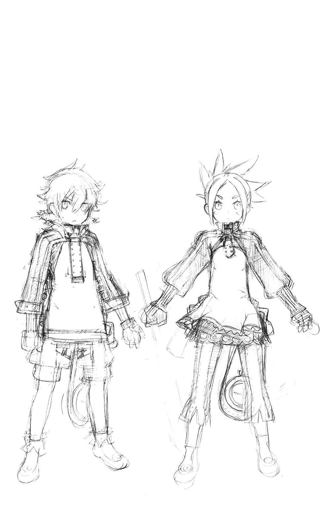
６ 託されたもの ～Insisting on Endless Grace～
「師範、この空間の鳴動は......!?」
「わかっておる！」
動揺する不肖の弟子を、コーラルは叱咤した。
「今は目の前の仕事に集中すべし。お前次第で、あの娘たちの涙が止められるのだぞ！」
「は、はいっ！」
気を引き締め直して、ギアンは目の前の時空の歪みに目をこらす。
機会は一度きり。失敗すれば、二度と試みることはできない。
その姿にうなずいて、コーラルもまた自分の仕事に集中する。
朽ちるままにされて久しい古きラウスの切り株。そこに接ぎ木した新たな苗に休むことなく魔力を注ぎこみ続け、閉ざされた扉を強引に押し開いていくのだ。
「今、かと！」
師の合図と同時に、意を決してギアンは歪みの中に手を差し延べた。
位相の裂け目で荒れくるう魔力に絶えながら、必死に向こう側を探り続ける。
たおやかな指先が伸びて、彼の手を強く握り返したその瞬間。
「ハアアアアあああァァァッ!!」
全身全霊の力で引き上げる。無事に帰ってきてくれと願いながら。
果たして、その祈りは報われた。
「ありがとう、ギアンさん......あと、重たくってごめんなさい......」
ひっくり返った彼の腕の中に抱きとめられた格好のまま、メリアージュは恥ずかしげにそう感謝の言葉を告げた。
「い、いえっ！」
ほのかに漂う優しい香りにどぎまぎしながら、ギアンは大慌てで彼女を助け起こす。
（この女性が、ライの母親......）
水面に輝く光の滴より生じた古妖精。ニンゲンの暴挙によって異界に閉じこめられた身でありながら、そんなニンゲンを救うために【慈雨の大奇跡】を為しとげた女性。
「ご無事でなにより、かと」
微笑んだコーラルの顔には、言いようのない懐かしさがあふれていた。
「随分と立派な竜になったね、コーラルちゃん」
メリアージュもまた嬉しげに、かつて何度も遊んだ幼竜に語りかける。
「お知り合い......だったのですか!?」
「姉代わり。むしろ頭が上がらない」
まじめくさってコーラルは言った。
あの忌々しき【魔獣侵蝕】によって引き離されることがなければ、きっと今でもあの頃のまま、誰よりも一番側にいることができたであろう。
けれど、今の彼は【竜尋郷】の束ね役。淡い感傷に浸っていられる身ではない。
「危機的状況、把握済み？」
「おおむねは。ついに【界の意志】たちが直接に顕現されたのね」
理想郷が壊れてゆく悲鳴は、今もなお高まり続けている。
「貴女の助けが必要」
「わかってるわ。大切な人たちが暮らしてきた世界を、私だって守りたいもの」
「【界の意志】に逆らっても？」
「―――母親だもの。当然よ」
にっこりと笑うメリアージュを、コーラルは眩しげに見つめた。
◆
悪魔の数を確実に減らしつつ、隙をみて、少女から全ての元凶たる呪物を引き剝がす。
それがエクスの目算であり、パッフェルもカザミネもそう意識して戦っていた。
だが、時ならぬエルゴたちの降臨によって、その計算は狂ってしまう。
「すぐに下がるんだ、二人とも！」
エクスの警告に従って飛び退く二人の身体から、憑依していた猿神たちが消えていく。
（頭では理解していたつもりだったけど、実際ここまでの影響力があるとは......）
【憑依召喚】すら維持できないとすると、せいぜい使えるのは瞬間的な攻撃手段としての召喚術くらいだろう。無限回廊の単独踏破で鍛えぬいた、彼の魔力をもってしてもだ。
恒常的な服従を強い続ける召喚術など、あっさり無効化されて当然であった。
「なによ......っ、あんたたち......なんで、あたしの命令をきかないのよぉ!?」
手足のように動かしていた悪魔たちが、一斉に自分に敵意を向けてきたことに、カシスは恐慌状態に陥っていた。必死に真鍮の玉の魔力で従えようとするが、まるで通じない。
否―――頼みの綱であったその品さえも、今や彼女の意に沿わぬ挙動を見せている。
「止まらない......や、やだぁ......っ、止められないよおおおおぉぉぉっ!?」
だくだくと溢れ続ける魔力が、望んでもいない新たな悪魔を次々に呼び出していく。
（だから言ったじゃないですか。くれぐれも気をつけてください、って）
半泣きになって、手に張りついた玉を引き剝がそうとするカシス。
その頭の中に、哀れむようにメルギトスの声が響き渡る。
（そうなってしまったら、もうおしまいですね。貴女の魂がすり切れて消えてしまうまで、その玉は延々と悪魔たちを召喚し続けます。絶対に止められません。覚悟してください）
「そんな!?」
騙したのかと、彼女は姿を見せぬ悪魔の王を罵った。
（ひとつたりとも騙してなどいませんよ。使いこなしてみせると言ったのは貴女で、それを失敗してしまったのも貴女。何もかも自己責任というものです）
奸計と虚言を司る悪魔の王は、まるで悪びれることなく嘯いた。
（【界の意志】の介入についてはお気の毒でしたが、運がなかったと思って諦めてください）
「や、やだぁ......ま、待ってよぉ......っ!?」
必死にすがろうとするカシスに、メルギトスはさも慈悲深く、こう告げた。
（まあ、心配せずとも大丈夫ですよ。悪魔たちになぶり殺されるよりも先に、貴女自身が同族になってしまうはずですからね）
「え......？」
ぞくりとした悪寒に突き動かされて、カシスは球を握りしめる自らの手を見た。
「イヤああああああぁぁぁぁっ!!?」
いつの間にかどろどろの塊に変じていた緑の魔力が、なめくじのように彼女の腕を這い昇ってきていたのだ。すでにそれに呑みこまれた手首から先の部分は、ぐつぐつと沸騰するように泡立ちながら、明らかに人ならぬカタチに変じようとしていた。
「助けて！ 助けてぇ、父さまぁ......っ、ソル兄さまぁっ!!」
助けなんて来ませんよ、と悪魔はせせら嗤う。
（貴女のお父上も兄上も、自分のことに夢中で手一杯だ！ 貴女はずうっとひとりぼっち！ さびしく、なんの役にも立たぬまま、バケモノになってゆくんですよ......うひひっ、ひゃはははは......っ、ひゃーっはっはっはっはっは!!!）
「なんとかならないんですの、総帥!?」
叫ぶケルマ自身、それが不可能だとはわかっていた。
魔玉の暴走によって開け放たれた【霊界】の門からは、悪魔のみならず、彼らがもたらす【源罪】が暴風となってあふれてきていたのだ。とっさに結界を張ることでエクスは仲間たちをその影響から守ったが、そこから身動きがとれぬ状況へと陥っていたのである。
「ごめん......今の僕には、君たちを守りきることだけで精一杯だ......」
無念を滲ませたその声に、彼女たちはうつむくしかない。
もう誰も、どうすることもできない。
だが、そんな状況でなお抗おうと、もがく影があった。
（......アヤ？）
幽火を灯した両手を必死に振るって、こちらに近づいてくる【魔人形】の姿をカシスは見た。群がる悪魔を懸命に払いのけ、吹き荒れる【源罪】の風に抗って、傷つきながらも怯むことなく、まっすぐにカシスのもとに向かってこようとしているのだ。
【魔人形】はエルゴの加護なき異界から召喚された存在。その支配が及ばぬのはわかる。
だけど―――。
「なんで!? 命令してないのに......なんで、あたしを助けようとするの!?」
その問いかけに人形は一瞬、困ったように笑っただけで。
歯を食いしばって、さらに前に出た。強制的に同化させられた【霊界】の大悪魔の影響で、神経を削られるような激痛を受けながらも、けして立ち止まろうとはしない。
「もう、いい......もう、いいよぉ......っ！」
朦朧とする意識の中で、カシスは必死に止めようとした。
「こんなあたしなんか、助ける価値ないよぉ！ もういいから、逃げなよぉッ!!」
だが、アヤは頑としてかぶりを振った。
『ずっと一緒です......約束、しました、から......』
不意にカシスは思い出す。彼女を召喚してから、今日までの日々を。
三人の中では技量が一番劣っていたカシスにとっては、不完全な【誓約】ながらも手にすることのできた【魔人形】は、仇討ちの道具である以上に、自慢の宝物だった。
だから、自分には許されぬ可愛い服を着せて、美しく飾ってあげようと思った。
汚れたり傷ついたりするたびに、すぐ綺麗にして、細かく傷を癒やしてあげた。
常に側においていた。小さな子がそうするように、一方的に話しかけてきた。
さみしいよ。不安だよ。捨てられたくない。ひとりぼっちになりたくないよ。
ねえ、お願いだから―――ずっと一緒にいてね―――。
約束したつもりはなかった。孤独を紛らわすための独り遊びのつもりだった。
でも、アヤはそうじゃなかった。
おしつけた約束を、身勝手なお願いを、彼女は律儀に果たそうとしてくれている。
なんて馬鹿な人形なんだろう。そして―――なんてそれが、嬉しいのだろう。
「ごめん......ごめんねぇ......っ！ アヤぁ......っ！」
カシスは悔いた。自分のせいで今も苦しめている、アヤのことを想って泣いた。
「でも、もう本当にいいの！ あたしのことは見捨てて、楽になっていいから!!」
【誓約】を解除して自由にしてあげたくても、もう彼女にはそうする力さえない。
悪魔たちに何度も叩きのめされて、なお立ち上がる彼女を見つめるしかない。
（助けて......あたしはどうなってもいい......アヤだけは、あの子だけは......）
心の底から願った、その時だった。
悪魔の群れが作り出す影が、突如として膨れあがって弾け飛ぶ。
【転移】の術にて現れたのは、ずっと彼女が憎み羨み続けてきた姉弟たちだった。
「福音を奏でる浄き歌声よ、今ここに粛々と響き渡れ！ あの子を救う力になって―――【聖音階の大天使】!!」
クラレットの祈りに応えて招来した天使は、浄らかなる声で【源罪】の風を消し飛ばす。
ほんの一瞬の間隙。だが、キールには充分だった。
（耐えてくれよ......カシス！）
「不浄を阻むニルヤの焰、猛りて燃えよ―――【鬼明王マブヤ】!!」
召喚されし火焰の鬼神は、一切の邪気を払い清める炎を一面に撒き散らす。
それは悪魔を怯ませるのみならず、カシスを侵蝕していた【源罪】をも燃やし、激しい痛みと引き替えに清めてゆく。
「あとは任せた！」「お願い、ナツミ！」「おっけー、まかされた！」
最後に飛び出したナツミが、大切な友の願いを叶えるべく、火焰によって開かれた道を走り出す。アヤと同じく悪魔の力を秘めたその身は、浄化の熱気にひりひりと痛んだが、気合いで耐えてひたすらに突っ走る。
「でぇりゃあああぁぁーっ!!」
振りかざした魔刃を、魔玉めがけ思いっきり叩きつける。壊されてなるものかと、魔玉は緑の光を障壁に変えて抵抗しようとするが、そんなことは承知の上だ。
「残念でした......本命はこっち！」
宙に生じた鏡面の中に、すっぽりとナツミの腕が呑みこまれて。
無防備な背後から、魔玉の中心を貫きとおした。
壮絶な魔力と魔力のスパーク。異なる魔王の力がこめられた呪物同士の激突は、双方を粉々に打ち砕くという結末をもたらしたのである。
「うわあああああああぁぁぁぁぁぁぁぁぁぁぁぁっ！」
泣き崩れるカシスを、クラレットは抱きしめた。
かつて彼女の命を狙った少女は、大嫌いだった義姉にすがりつき、号泣し続けた。
ごめんなさい、ごめんなさい、と何度も繰り返しながら。
「よかったね、クラレット」
もらい泣きしそうになって鼻をすすったナツミの隣に、あちこちぼろぼろになったアヤが並んだ。ようやく自分の弱さをさらけ出せたカシスを、優しい目で見つめていた。
「ありがとうございます。貴女のおかげで、私は友達を失わずにすみました」
「それはお互いさまだよ......前に追っかけてきた時、微妙に手加減してくれたじゃん？」
ちろりと舌を出して、黒髪の少女は悪戯っぽく笑ってみせた。
ひどいことをたくさんされて、させられて、恨みがないというのは噓だけれども。
心と心がどこかで響きあってしまった今はもう、見捨てることなんてできない。
変わりたいと強く願うのなら、友達として助けてあげたい。
それが、今の彼女たちの偽りなき気持ちだった。
「呪いは無事に解けたんだね、キールくん」
「姉と......亡き母のおかげです」
残敵となった悪魔たちを掃討しつつ、エクスとキールは言葉を交わす。彼が護界召喚師を名乗るようになった時、二人はグラムスを介して面会している。互いの非凡な才を認めあった両者は、たまの機会に、様々な理論などの議論を戦わせて楽しむ仲になっていた。
エルゴの干渉に対し、瞬間的に作用する召喚術でキールが対応できたのも、そういったやりとりによって鍛えられた柔軟な思考によるものだったのである。
「義妹を救えたことで確信しました。複雑な儀式を介さずに強大な呪詛を断ち切るには、同種同格の力で相殺することが、唯一この場で許された最善であると」
「......なるほど。そのために君はここまで来たんだね」
ならば急いだほうがいい、とエクスは忠告する。
「彼もまた、きっと君と同じ想いのはずだ。共に力を合わせて、成し遂げるといい」
「はい！」
◆
「フォルテ！ ケイナ！」
「やっと帰ってきやがったな、この野郎め！」
異界より帰還した【超律者】マグナは、仲間たちを宙から執拗に襲う天狗の群れめがけ、【召喚術】をぶっ放した。
「盛者必衰の響きを奏でよ―――【狗狼旋風刃】―――でりゃあああアアァァァァッ！」
九つの刃の尾をもつ狗神が咆吼をあげて宙を駆け抜けると、天狗たちは身体をずたずたに切り裂かれて、悲鳴と共に逃げ去っていった。
「ちょっと、なんで君は普通に【召喚術】が使えるんだよ!?」
驚いたのはギブンだった。従えていた【鏡の煙霧】は早々に役立たずとなり、さりとてオルドレイクの言葉に従う度胸もなく、召喚師である彼は役立たずに陥っていたからだ。
「抜け道はいくつかあるんだよ。確実に扱える位階の術を瞬間的な攻撃で用いるとか、さ」
しきりに感心するギブン。だがマグナは、自分が例外であることまでは告げなかった。
（人工生命体として創られた俺は、エルゴの【法則】から外れた存在―――だから、用いる魔力自体に【界の意志】に対する抵抗力があるそうなんだ）
それは、彼だけに限った話ではない。
【エルゴの欠片】を力の源とする【誓約者】も。
【共界線】に干渉できる【抜剣者】も。
【地球】人と古妖精の【響界種】である【越響者】も。
皆が皆、界の理の枠から外れた規格外の存在。【共界線】に苦しむこともない。だからこそエルゴにも立ち向かえるのだ、とメイメイは教えてくれたのだ。
「下がろう、フォルテ！ 聖王さまが言っていたとおりに【至源の泉】まで！」
かの泉もまた、この時に備えてエルゴの王が遺してくれた切り札のひとつ。
生き残るためには、絶対に死守せねばならなかった。
「待たせてごめんよ、みんな！」
蒼き光の煌めきと共に、【抜剣者】レックスは仲間たちの待つ島へと帰還した。
「おか......おっ、遅いですわよっ！ 先生っ！」
「ホントだよ。僕たちの苦労も知らないでさ」
照れ隠しに怒鳴ってみせるベルフラウと、どこか懐かしい皮肉を口にするイスラ。
ごめんごめんと繰り返しつつ、レックスはごく自然に二人の真ん中へと並び立った。
「よくがんばってくれたね、ベル」
安堵に目を潤ませる彼女の背中を、ぽんぽんと優しく叩いてやり。
「君の決意を俺は尊重するよ。ありがとう、イスラ」
そっぽを向いて答えない彼に、心から感謝する。
そして―――目の前に居並ぶ敵たちを、強い覚悟を秘めた瞳で見据える。
（彼らの正義を否定はしない。けど、俺たちの正義を否定させもしない）
どうすればいいのか。答えは、未だ見つからないけれども。
それを見つけ出すためにも、絶対にここを退くわけにはいかない。
「かかれ、皆の衆！ 界の秩序を徒に乱す【抜剣者】たちの首級をあげるのだ!!」
ホクトの檄と共に、三人に向かって殺到する異界の勇者たち。
蒼と紅と翠の魔剣が閃いて、譲れぬ想いをぶつけあう戦いの幕が切って落とされた。
（ちくしょう......俺にはまだ、答えが出せない......）
【誓約者】ハヤトは、自分の不甲斐なさに歯嚙みしながら、戦場をひた走る。
多分、今まではどこかで高をくくっていたのだ。
どんな困難があっても、仲間たちと力を合わせれば超えていけると信じていた。
勇者としてこの世界を守っていけることが、どこか誇らしかった。
けれど今、突きつけられた現実の重さによって、それが揺らいでいる。
ひとつの世界を自分の意志ひとつで、滅ぼすことさえできる力。
自分がそれを受け入れなければ、世界が救えないことはわかっている。でも―――。
（本当に......俺なんかが、エルゴの王になってもいいのか？）
たやすく怒りに呑まれてしまう未熟な自分。
その結果として【再誕の制錬者】に無様に敗れ、無実のミコトを殺しかけてしまった。
（うまくやれる自信なんてない......失敗してしまうのが不安で、こわい......）
もう少しだけなら待てる、とメイメイが言ったのは、それを見透かしたからだろう。
口にして問い質さなかったのは、きっと答えが、彼自身にしか出せぬものだから。
無理強いしようとしないその厳しさが、余計に今の彼には堪えていた。
その鬱屈を振り払うかのように、ハヤトは必死になって走る。
「今度こそバノッサを救って、キールとの約束を守るんだ......！」
そうすることで、この迷いが晴れてくれることを、心の底から願いながら。
◆
夢を見ていた―――否、まだ見ているのかもしれない。
それとも、夢であるようにと願っていたのか。
喪われていく生命の炎。ついにわかり合うことができなかった孤独な獣。
怒りに任せて振るった刃が、親友になれるはずだった少女の心をズタズタにした。
血みどろの報復。その繰り返し。奪って、奪われて、延々と繰り返して。
心が壊れてしまいそうだった。耐えられなくて、たまらず哀しみの咆吼をあげた。
真っ暗になる世界―――閉じていた目を、再び見開いた先には。
『よう......。やっと泣き止みやがったな、この泣き虫め』
灰燼と化してしまった世界と、今まさに事切れようとしている父親の姿があった。
破滅の空に輝くのは、怒りくるった光の竜たち。
自分がそれを招く引き金になってしまったことだけは、直感でわかった。
『お前が悪いんじゃねえ。悪いのは、それを利用した【制錬者】と【界の意志】たちだ』
泣きじゃくる彼女を優しくあやしながら、不死身だったはずの父は逝った。
その事実が彼女に、自分が本当にひとりぼっちになってしまったことを知らしめた。
全てをやり直したい、と泣き叫ぶ少女。
その足下には、彼女を人間の姿に戻すために魔力を使い果たした、蒼き竜の子がいる。
でも、それがかなったとしても、もうすぐ世界は終わる。
なにもかも消えて、なかったことになる。
『これでおしまいだなんて、イヤだよ......っ』
泣き疲れて、振り絞るような声でそう言った少女のもとに。
世界を救えなかった少年と、泣き腫らした目をした占い師が、近づいてきた。
◆
「その......ありがとな」
ぶっきらぼうにそう言われて、彼女は我に返る。
「あ、えっと......ゴメン。なんだっけ？」
「俺の代わりに、この城を守ってくれたことだよ」
「ああ......」
異界へと消えたライが戻ってきたのは、ラウスブルグの玉座の間だった。
無事を喜んだり、文句を言ったりする仲間たちをなだめすかして、彼は言った。
『まずはあのクソ親父をなんとかしなきゃ、おちおち世界も救ってられねえ！』
そして彼は、メイメイが語った真実の一部を明かしたのである。
何が起きているのかを知った仲間たちは動揺したが、けして諦めようとはしなかった。
それぞれにやれることを探して、懸命に破滅へと立ち向かおうとしている。
その輪の中に加わることなく、フェアはずっとここにいたのだ。
空中庭園―――かつて、この世界のギアンが堕ちた場所。
そして別の世界においては、彼女が絶望の底に堕とされた場所。
「シャオメイから言われたよ。お前が何者か、尋ねたらダメだって。然るべき時が来たら、必ずお前自身が語ってくれるはずだから、ってな」
「............」
「味方、なんだよな？」
こくん、とフェアはうなずいた。
ならそれでいい、とライは笑った。
「今までどおり......は無理かもだけど、なるべくそういうつきあい方をしようぜ」
「店長......」
「うん、それでいい。俺もフェアって呼び捨てにすっからさ♪」
「......ありがとう......」
◆
ミコトは、託された銀色の品を見つめていた。
彼が戻された場所は、生き別れていたカイロスのもとだった。
かつて叔父と呼んだその人は、彼の姿を見るなり、駆け寄って抱きしめてくれた。
泣きながら、何度も何度もすまなかったと詫びてくれたのだ。
それだけで充分、彼の心は満たされた。
『俺にとっては、今でも貴方はカイ叔父さんのままだよ。たった一人の家族だもの』
素直にそう言えたことで、胸に刺さっていた棘も抜け落ちた気がした。
カイロスの師を名乗る老召喚師ゲックは、今から旧王国に向かうと告げた。
エルゴによって送りこまれてきた、恐るべき機械要塞を止めるために。
狩り集めた人間の脳髄を生体部品に用いて、無限に機械兵士を増やし続けるプラントを放置しておくわけにはいかない。カイロスもまた、それに同行するという。
『私にシャリマは止められなかった。むしろ引きずられて、醜態をさらしてしまったよ』
だから委ねたい、と彼は言った。無力な自分を恥じたうえで。
『お前の思うように生きなさい。どんな選択をしても、私はそれをけして否定しないから』
そして―――この品を渡したのだ。
『【輝創光刃】と呼ぶらしい。鹵獲した敵の機械兵士が武器として用いていた、【機界】の高純度エネルギー発生装置だ』
ならばそれはレオルドだ、とミコトは言った。メルギトスの娘を名乗る少女が連れていた機械兵士。カイロスの召喚術で機能停止に追いこまれた彼は、【自己増殖式召喚兵器機構】の暴走に巻きこまれかけたところを、機械人形三姉妹たちに救われたのであった。
強く求められて、カイロスはミコトをレオルドのもとへと連れて行った。武装解除されて拘束を受けた機体に電源が入れられて、ミコトは初めてこの機械兵士と対話した。
知りたかったことと、伝えたかったことは同じだった。
マグナの兄弟子であるネスティの消息だ。
【融機人】である彼と直結で情報交換したレオルドは、正しくその真意を伝えた。
（あの子を、メルギトスの手から救い出すために......）
是非を問うのは自分ではなくマグナやアメルだと、ミコトはわきまえていた。
だから、彼らに再会した時に全てを必ず伝えると約束した。
【輝創光刃】は、改めてレオルドの意志で託された。
出力を絞れば光の剣として用いることができるという。
『―――でも、叔父さんはそれとは別の目的で俺に渡そうとしたんだよね？』
『自覚していたんだな、やはり......』
苦い顔をしたカイロスに、ミコトはうなずいてみせた。
『【制御籠手】に接続すれば、幾許かの助けになると思ったんだよ。時間稼ぎではあるが』
『それでも心強いよ。まだ、俺にはやらなくちゃいけないことがたくさんあるからね』
彼の背後にゆらめくデュウが、悲しげにその目を伏せた。
そして、彼らはミルリーフの背に乗った。
ライ、ミコト、そしてフェアと彼女に従う幼竜リューム。
目的はただひとつ―――シャリマの魔手から、ケンタロウを奪還することだった。
◆
「いよいよ面白いことになってきたわね」
指揮座に座ったシャリマは、小型観測機から送られてくる映像を夢中になって眺めていた。エルゴたちの顕現によって、帝国と聖王国の戦いは、人間と異界の軍勢とのそれに完全に移行しつつある。皇帝レイはその陣頭に立って【再誕】の力を存分に振るい、オルドレイクもまた【兇剣士】バノッサと共にその脇を固めている。
メルギトスは戦列に加わっていないようだが、彼は元々この世界の行く末になど興味がない様子だった。この状況をいいことに、好きなことを愉しんでいるのだろう。
そして、それは彼女も同じだ。
旧王国の兵力は、【召喚兵器】の攻勢を支え続けるだけで精一杯で、彼女を喜ばせてくれるような劇的な反抗を見せてはくれなかった。早々に飽きてしまったシャリマは、片手間に攻勢を維持しつつ、もっぱら観察と考察に耽っていたのである。
再調整の際にレイの体内へと仕こんだ機器から送られてくるバイタルは、まだ大きくは乱れていない。あれだけ能力を乱発しながらもミコトとの戦いの時のような不調を見せぬこの状況は、彼女の立てた仮説が正しいという証明になっている。
（【制錬石】同士による相互干渉。それが器に過大な消耗を強いていたのね）
元来は同じ【霊界】のエルゴの欠片から錬成された品同士。子細は不明だが、近づくことでなんらかの作用を及ぼしあっても不思議はない。そして状況から分析するに、その影響に対する抵抗力においては、レイよりもミコトが勝っていると判断せざるを得ない。
「なんにせよ、もう少し負荷をかけてみなくては結論づけられないわね」
こちらに向かって飛来してくる至竜の姿に、シャリマは気づいていた。今も彼女の真下で、生きた魔力供給装置として働く愛されし者を奪還しようというのだろう。実におあつらえ向きのシチュエーションだ。
「【自己増殖式召喚兵器機構】―――起動！」
【召喚兵器】たちの再生機構が停止され、全魔力がシステムに回される。無人機による異界探索中に偶然採取した、無限増殖する冥界の泥。取りこんだ生物や魔力の特性を自己再現する特性をもつこれを原料とし、緻密に加工していったものが【制御籠手】である。
そして、素材をそのまま生かして創りあげたのが、この【自己増殖式召喚兵器機構】だ。今は伝説の【腐食魔竜】を模した形をとらせているが、本来は不定形の汚泥なのである。
「いらっしゃい、ボウヤたち。今日は私の実験に、とことんつきあってもらうわよぉ？」
ぬめり輝く触手たちが、滑空する至竜めがけて襲いかかる。すでにこれと戦ったことのあるミルリーフは、巧みにそれをひきつけてはかわし、ぐんぐん距離をつめていく。
「決着をつけに来てやったぜ、妖怪ババア！」
最接近したその瞬間を狙いすまし、ライは再び、指揮座の上に飛び乗った。無礼千万な暴言の代償は、着地の瞬間を狙った吸精根と肉鞭による一斉攻撃だった。
「......させないわよッ！」
それを叩き斬ったのは、追ってその場に着地したフェアだった。握りしめたその肉厚の剣は、あちこち汚れ破損していたが、紛れもなくライの愛刀と同じ品だった。
「なんなの、あなた......？」
シャリマが訝しげな顔をしたのは予期せぬ敵の登場に対してではなく、その敵から一切の生命反応が感じとれないためだった。
（霊的生命体の反応とも違う。むしろこの魔力は......レイの【再誕】に酷似した......）
それ以上、考察している余裕はなかった。
二人の剣士は巧みに呼吸を合わせて、凄まじい勢いで彼女に襲いかかってきたのだ。
「まずい......ッ!?」
近接戦闘に限れば、彼女はすでにライに敗北している。あの時は無残な父親の姿を晒すことで形勢逆転できたが、二度は通じまい。まして今はもう一人、同等の技量をもつ少女が加勢しているのだ。必死に防御するだけで、全く攻勢に転じることができない。
「くうううううゥゥゥ......ッ！」
ならばと、彼女は上空の至竜を利用すると決めた。おびただしい数の肉鞭が銛のごとく突き出されて、ミルリーフを虜とすべく襲いかかる。
だが、それを阻むかのように、至竜の背中からまばゆい光芒が放たれた。
圧倒的な熱量と貫通力をもった光線が、不気味な触手を薙ぎ払い、蒸発させてゆく。
至竜の魔力によるものではない。そうであれば逆に吸収して増殖の糧となったはず。
「【機界】の光学兵器―――!?」
それも恐ろしく高出力だ。彼女の知るカイロスの技量ではない。召喚獣によるものだとしても、エルゴの影響下にある現状で、あれほどのものを呼べる存在は限られている。
【誓約者】か【超律者】か、あるいは【派閥】の長を名乗る者の仕業か。
そんな彼女の予測は、衝撃と共に裏切られることとなる。
「卑怯な手はもう使わせないよ、シャリマさん」
旋回する至竜の背に立っていたのは、【追想の制錬者】ミコトだった。
その右腕は黒鈍色に輝く砲身と化し、排熱によって唸りをあげている。そう―――新たなる【憑依武装】の顕現だった。
（世界ヲ破滅カラ救ワントスル英雄ノタメニ、我ト【輝創光刃】ハ開発サレタ......）
忠義を貫き通して悪魔王の前に散った、寡黙なる機械兵士ゼルフィルド。
汚名と悲しみにまみれてもなお、人々の自由のため剣を振るう主人を見守り続けてきた彼は、訪れたこの終末の時を前に、再び起って戦うことを自ら選択したのだ。
（我ガ声ヲ聞キ届ケヨ、【追想の制錬者】！ サスレバ、我ハ汝ノ武装トシテ甦ル!!）
そして、ミコトはそれに応えた。
【轟鉄輝の憑依武装】―――【輝創光刃】を動力源とする恐るべき光学兵器と化したミコトの右腕は、ミルリーフのみならず、逃げ惑う旧王国の人々に襲いかかる肉触手たちまで、次々と殲滅していく。
「なんて、なんて子なのよ......本当に......っ！」
憎悪と歓喜がない交ぜとなった声で、シャリマは失敗作と断じたはずの少年を罵った。
「よそ見してんじゃあ......」「......ないわよッ!!」
左右の肩に突き刺さる激痛が、忘我の域に達しかけた彼女を現実に引き戻す。
「あ......」
ライとフェアの渾身の一撃を受けたシャリマは、指揮座から吹き飛んで、真っ逆さまに地上めがけて落ちていく。腐肉の泥濘に呑みこまれてゆく、その一歩手前で。
「―――制御装置解除」
悪女は最後の命令を発した。
そんなに欲しければくれてやる。ただし、もてあましても知らないわよ―――と。
枷から解き放たれたおぞましき獣は、本来の姿を取り戻した。
ぶくぶくと泡立つ粘塊の海は、津波となって周囲の全てを呑みこみ、喰らってゆく。
安全だったはずの指揮座もまた、例外ではなかった。
―――ピィギャアアアアアアアアアアァァァァァァッ!!
咆吼を放ったのはリュームだった。小さな身体から信じられぬほどの魔力を放出して、のしかかる汚泥をはねのける結界を瞬時に展開したのだ。
（ゴメン......母さん......長くは......もちそうにねえ......っ）
必死に力を振り絞る幼竜の姿に、生意気そうな男の子の姿がだぶった。泣きそうな顔でうなずいて、フェアは最後の務めを果たすべく立ち上がった。
「だから、助けてやるって言ってるだろうが！ このクソ親父ッ!!」
「だから、無理だって言ってんだよ......このクソガキめッ！」
泣きながら怒鳴りつける息子と、必死になって諭そうとする父親。
「今の俺様はこのバケモノの心臓部になっちまってるんだよ。切り離そうとしても無駄だってのは、さっきからさんざん試してわかってるだろうが！」
そのとおりだった。機械の内側にまで達した腐肉は、ケンタロウの身体を直接侵蝕してしまっていたのだ。完全に取りこんで殺さなかったのは、そうしてしまえば魔力の供給源が断たれると知っているから―――恐るべきこの泥は、明確な意志をもっていたのだ。
「だからよ......やっぱ、きっちりとトドメさしてくれや」
【愛されし者】であるケンタロウが死ねば、メリアージュからの魔力は断ち切られる。
普通の方法では死ねない身の彼だが、それなりのやり方はあるのだ。
「出てきてくれや......【水鏡の魔剣】よ......」
愛する女性が彼に託した妖精の魔剣が、光の滴を煌めかせて出現する。
「こいつなら、いけるはずだ......なあおい、頼むよ......？」
「イヤだったら、イ・ヤ・だ!!」
ライは頑としてかぶりを振った。
自分は助けるために来たのだ。殺すためにきたんじゃない。
聞き分けろ、とケンタロウは怒鳴った。このままでは母さんまで死んでしまう。そんなことになったら、俺はとても正気でいられない、と。
「お前が俺の代わりに、母さんやエリカを守ってやってくれ。強くなったお前ならきっとできる......そうだろう？」
「イヤだ......っ、イヤだよぉ......っ！」
離ればなれになったあの幼い日のように、ライは泣きじゃくる。
どうしようもないのか。本当に、どうしようもないのか。
「こっちの世界でも身勝手なことばっか......あんたは一体、どんだけ自分の家族を泣かせたら気が済むって言うのよっ！ こぉの......ダメ親父めええええぇぇぇぇっ!!」
ばっちーん、と凄まじい音を立てて。
フェアの平手打ちが、ケンタロウの頰をしこたまに殴りつけていた。
「ぐへぁっ!?」
悶絶するケンタロウ。何が起こったのかわからず、目をぱちくりするライ。
「逝っちゃうほうはそれで満足なのかもしれないけどね、遺されたほうはずっとず～っと、そのことを悔いて生きてくのよっ！ 幸せに笑って暮らせるわけなんてないのよッ!!」
「な、なんだよ......このホウキ頭の小娘は......っ？」
あんたの娘よ、とフェアはひるまず爆弾発言を落とした。
「な......っ!?」「マジ、かよ......っ？」
互いに情けない顔を見やる男たち。
ふんっと鼻息も荒く、フェアは続けた。
「言っとくけどね、浮気とかじゃないわよ。私は本来、この世界にいちゃいけない幽霊。こことは違うもうひとつの世界で、ライのかわりにケンタロウの娘をやっていた。そういうことなの！」
「幽霊って......」
「死んじゃってるのよ、向こう側の私は」
無理に明るく作った声で、フェアは残酷な現実を口にした。
「【再誕】した亡魂と同じってことよ。私の場合は、あっちの世界の【追想の制錬者】とメイメイさんのおかげで、こうしてかりそめの身体をもらったわけだけどね」
「そんな......」
「ほら、私のことなんて後回しでいいから！」
まごつくライの手をとったフェアは、強引に【水鏡の魔剣】を握らせた。
そして、自分の手をその上へと重ねる。
「【水鏡の魔剣】はスーパーヒーローの剣。断ち斬れないものなんてない......でしょ？」
「あ!?」
そうだった。ギアンの時と同じように、このバケモノとクソ親父のつながりを断つことさえできれば―――。
「おい、バカなことはやめろ！ あの時は、メリアージュたちの助けもあったからで......」
それが望めぬこの状況で、同じ奇跡が起きるはずもない。
（......だいじょうぶ。貴方の子供たちを信じてあげなさい、ケンタロウ）
不意に聞こえてきたのは、ずっと途絶えていたメリアージュの声だった。
（私も力を貸すわ。だからフェアちゃん......ううん、フェア。ライと一緒に意地っ張りなお父さんのことを助けてあげて）
「やめろ!? そんな無茶までさせたら、結界を維持するための魔力まで......」
もういらなくなったんだよ、とエリカの声がそれに続いた。隠しきれぬ喜びと共に。
（お母さんは今、エリカと一緒にお家にいるよ。もう、ひとりぼっちじゃないんだよ！）
「なん、だと......？」
旧いお友達が救い出してくれたんです、とメリアージュはうなずいた。
（だから、早く帰ってきてよ！ みんな一緒に、お家に帰ってきてよ!!）
おかえりなさいって、お迎えしてあげるから。
「......ですって。どうするの、お父さん？」
「これ以上ぐだぐだ言うんだったら、今度は俺がグーでぶっ飛ばすぞ？」
ふう、とため息をついて、ケンタロウは観念した。
「煮るなり焼くなり好きにやってくれ......お前たちにゃあ、降参だ......」
得意げに互いの顔を見やってから、二人は渾身の一刀を繰り出した。
光の滴が弾け飛んで、忌まわしき鋼の十字架が断ち切られる。
自由の身となったケンタロウは、息子の肩を借りて、ミルリーフの背に乗った。
疲れきったリュームを優しく抱きかかえたフェアが、それに続く。
とり残されたのは、荒れくるう腐肉と泥濘の海。
【界の狭間】から来たりて、際限なく世界を喰らい続ける、意志をもった汚泥。
「お前たちは、こっちに出てきちゃいけないんだ」
その波濤の先に降り立ったミコトは、強い口調で断言した。
亡魂たちが教えてくれた。あれは朽ちてゆく魂からこぼれ落ちた、罪穢れだと。
冥界の底深くへと沈めて、永き時をかけて鎮めるべきものであると。
だから―――自分たちが背負って持っていく、と。
「約束するよ。貴方たちが託した想いは、俺が最後まで引き継いでゆくって」
構えた砲身が展開して、凄まじいエネルギーが充塡されていく。
集まっていく力と責任の重みに、よろめいたミコトの肩を、デュウがそっと支える。
デュウだけではない。
名も知れぬ多くの亡魂たちが、彼を支えてくれている。
この世界の行く末が良きものになると信じて、その礎になろうとしてくれていた。
「オオオオォォォ―――【極限式創輝光砲】ァァァッ!!」
真っ白な熱と光が全てを溶かし、飛び散る不浄を亡魂たちが受け止めて、連れてゆく。
光が消えた後に残されたのは、無残にえぐりとられてしまった剝き出しの大地。
そうでもしなければ、消し去ることができなかったのだ。
「行こう、デュウ」
エルゴの輝きに揺れる彼方を見据えて、ミコトは言った。
今度は彼自身が、決着をつける番だった。
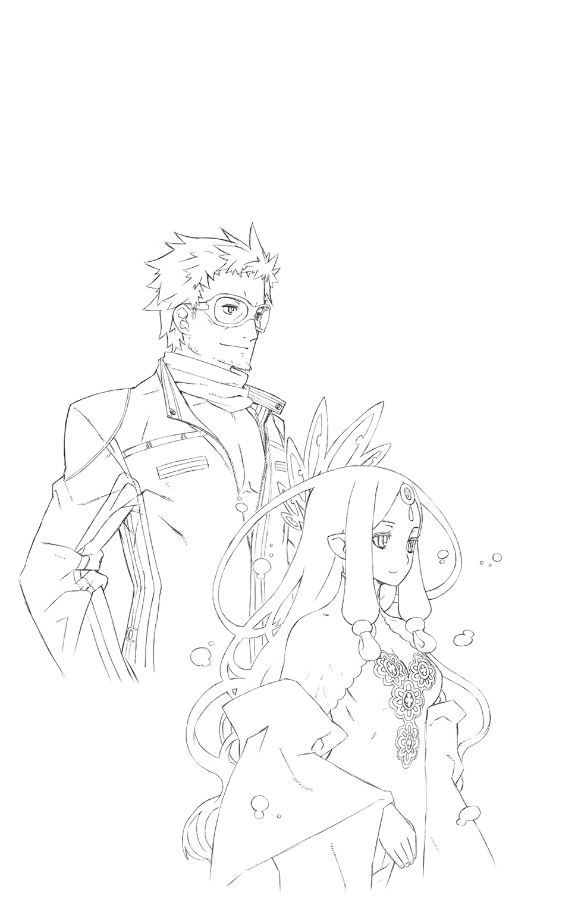
転章 ～The World has Not Ended Yet～
今や無人となった、帝都ウルゴーラの玉座の間。
「知っていましたよ、皇帝陛下」
メルギトスは独り呟いた。
「私たちを当て馬として【再誕】させたということはね」
そう、全ては勇者たちにさらなる覚悟をもたらすため。
かつての宿敵を甦らせ、あてがうことにより、彼らに危機感を与えて成長させる。
その結果こそが皇帝の求めるものであり、彼が本当に率いて戦いたいと願った力。
皮肉にもその成熟を待たずにして、破滅はやってきてしまったけれども。
「いずれにしても、私の役目は終わりました。ですので......」
好きにさせてもらいますよ、と改めて悪魔は嗤った。
「お言葉通りに、ね」
◆
「ぐ......っ！」
不意にこめかみを押さえて、皇帝レイは呻いた。
「いかがなされたか、王よ!?」
「だいじょうぶだ......」
心配して駆け寄ろうとしたオルドレイクを片手で制し、彼は歯を食いしばる。
（シャリマが再生機構を停止させたことで、【召喚兵器】たちを維持する負担が一気にこちら側に回ってきてしまったか......）
【再誕】と同時進行で稼働させ続けるには、さすがに無理があったということか。
口惜しいがここから先、【召喚兵器】は使い捨てにせざるを得まい。
そのぶん、なお【再誕】の力を強めていかねば。
「遙けき声よ、我に力を！ この世界を救うための力を、もっと、我に......！」
加護する勇者の懇請に応え、遙か遠き彼方にて、未だ名を持たぬ力と意志が鳴動する。
◆
「みぃつけたぁ......♪」
凄艶なる毒笑を浮かべて、シャリマは歓喜した。
ライとフェアの斬撃を受けて、波打つ汚泥の海に沈んだ彼女。
だが、その肉体は捕食されなかった。
創造主である彼女は、創造物の反抗を絶対に許しはしない。
ミコトやレイには通じなかったプロテクトコードが、今度は正しく働いたのである。
汚泥に身を隠しつつ窮地から逃れた彼女は、予備として設置しておいた観測機器のある拠点に辿り着いた。ミコトの一撃で暴走したシステムが灰燼に帰したのは、その直後だ。
そして、彼女は実験が成功したことを知ったのだ。
（あれだけ負担をかけてあげれば、絶対にまた接触してくると思っていたわ）
皇帝の背後に見え隠れする、遙けき声という謎の存在。
その尻尾を、ついに彼女は摑んだのだ。
「はじめましてだわねぇ。【名もなき世界】のエルゴさん......」
皇帝の心に呼びかけてくる魔力の流れは、かつて彼女がミコトによって誘われた【地球】という世界を、その源としていたのである。
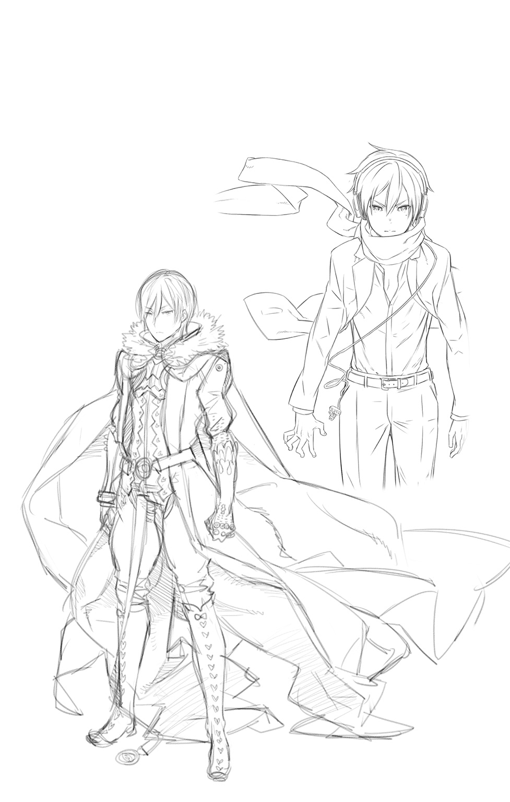
POSTSCRIPT
難産でした。ここまで苦しんだのは『サモンナイト２』のシナリオの時以来かもしれません。
ご無沙汰してしまいました、都月です。
一年以上空いてしまいましたが、『U:X』５巻「狂界戦争」をお届けします。
冒頭でいきなり触れたとおり、本巻は本っっっっ当にギリギリでした。
その余波で、今回は挿絵担当の和狸ナオ先生に作業していただく時間を用意することができませんでした。先生の描かれる活き活きとしたイラストを楽しみにしていた読者の皆さんには本当にごめんなさい。また、ギリギリまで待ってくださった和狸先生には重ねてお詫びさせていただきます。このたびは本当にもうしわけありませんでした。
そんな状況の中で美麗な表紙をくださった飯塚武史先生。各種イラストの手配に尽力をしてくださったフェリステラの吉田氏。こちらにも頭があがりません。ありがとうございます。
そして、読者の皆さまにも改めて深い感謝を。踏ん張れたのは、みんながくれた応援や期待の声のおかげです。本当にありがとう。一層、気合い入れて突っ走りますから。
内容についても少しだけ。
本巻では、十年以上もの間ずっと伏せたままにしてきた根幹の秘密に触れました。
おおまかな構想を練りはじめたのが、『サモンナイト２』の制作が終わったあたり。
内部用の設定資料としてまとめたのは、『サモンナイト３』の制作開始時になりますか。
シリーズが長く続いたことで枝葉末節は変化していますが、そのおかげでスピンアウト系の作品やノベライズ、リメイク版の追加台詞などで含みをもたせることもできました。
どう感じてもらえるかはさておき、旧リィンバウム絡みで引っ張ってきた世界の謎については全て出しつくしたつもりなので、ご堪能くださるとうれしいです。
さらに宣伝も。
本巻に少し遅れて、新作『サモンナイト６ 失われた境界たち』が発売されます。
複数の時間軸・世界線から【繭世界】に呼び寄せられた歴代主人公たちが、新主人公のラージュやアムらと共に活躍する、15周年記念っぽいお祭り感にあふれた作品です。
都月も世界観設定・物語原案と各話プロット・加筆と改稿の形で参加しております。
『U:X』とはまた違った切り口で描かれたオールスターストーリーなので、こちらも遊んでもらえたらありがたいです。
それでは次巻―――いよいよ終演を迎えるリィンバウムの物語にて。
都月 景 拝
■初出
サモンナイト U:X〈ユークロス〉―狂界戦争― 書き下ろし
著者紹介
都月 景
MIYAKOZUKI KEI
文字書きさん。ゲーム『サモンナイト１～５』のシナリオ、及びシリーズ世界観設定を担当。シリーズ最新作でも世界観設定＆シナリオ原案・改稿やってます。よろしく。
http://miyakoz.jugem.jp/
illustration
飯塚武史
IIZUKA TAKESHI
イラストレーター。ゲーム『サモンナイト』シリーズのキャラクターデザインを担当。黒星紅白名義で小説『キノの旅』シリーズ挿絵、アニメ『世界征服～謀略のズヴィズダー～』キャラクター原案等やっております。ベルフラウ描きたかったんですよね。描けてよかった。『サモンナイト６失われた境界たち』もよろしくね！
ジャンプジェイブックスDIGITAL
サモンナイト U:X〈ユークロス〉―狂界戦争―
著者 都月 景／飯塚武史
© 2016 K.MIYAKOZUKI / T.IIZUKA
２０１６年４月30日発行
この電子書籍は、ジャンプジェイブックス「サモンナイト U:X〈ユークロス〉―狂界戦争―」
２０１６年３月９日発行の第１刷を底本としています。
装丁 亀谷哲也［PRESTO］
編集協力 藤原直人［STICK-OUT］／谷口明弘［由木デザイン］
発行者 鈴木晴彦
発行所 株式会社 集英社
〒１０１－８０５０
東京都千代田区一ツ橋２丁目５番10号
０３－３２３０－６０８０（読者係）
制作所 株式会社ＩＣＥ
本作品の全部また一部を無断で複製、転載、改竄、インターネット上に掲載すること、および有償無償に関わらず、本データを第三者に譲渡することを禁じます。なお個人利用の目的であっても、コピーガードを解除しての複製は、法律で禁じられています。